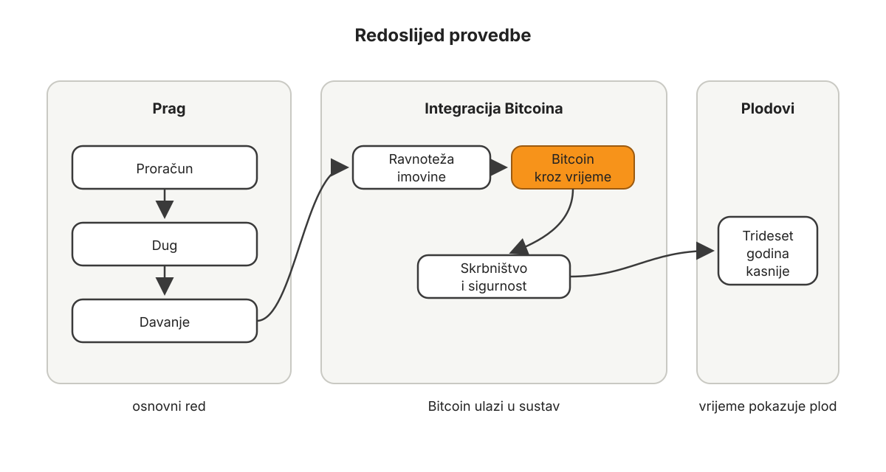
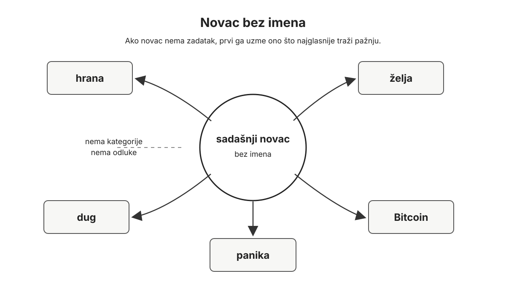
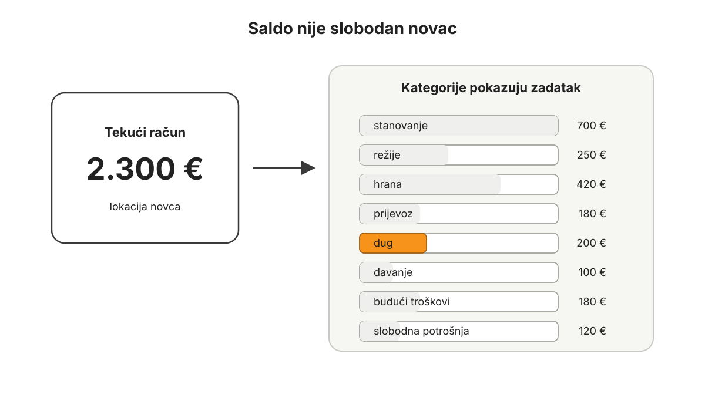
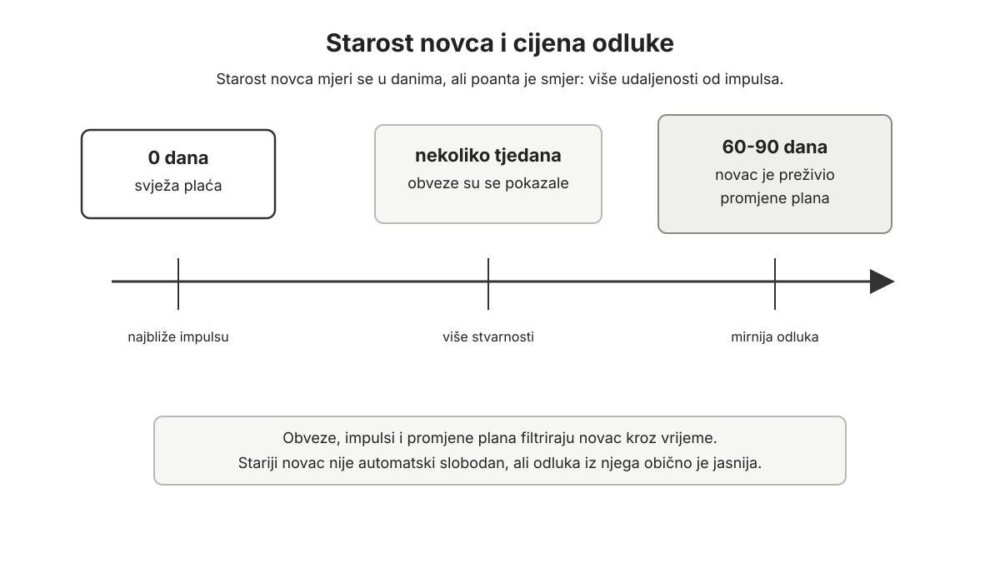
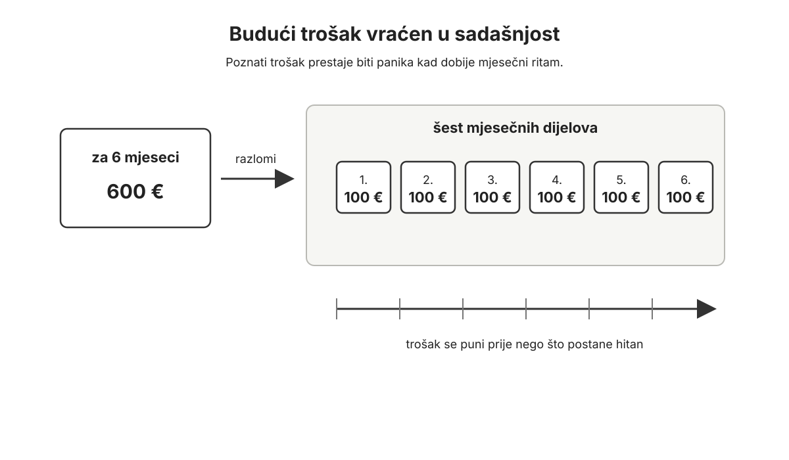
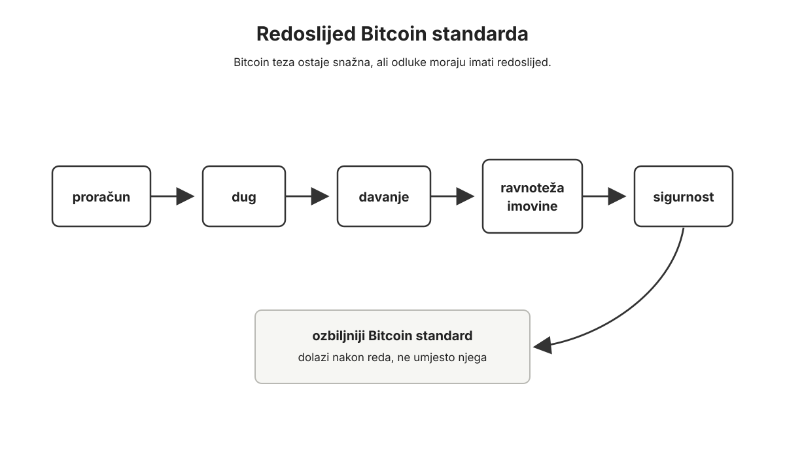
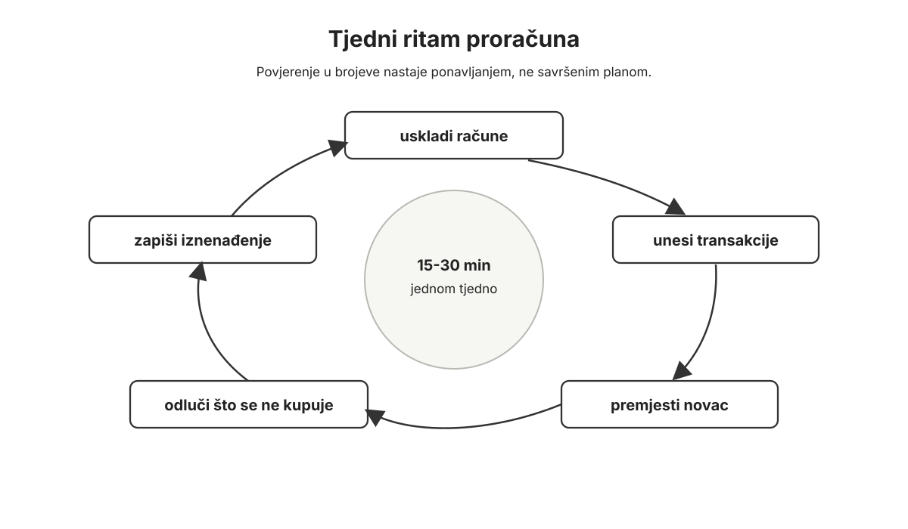
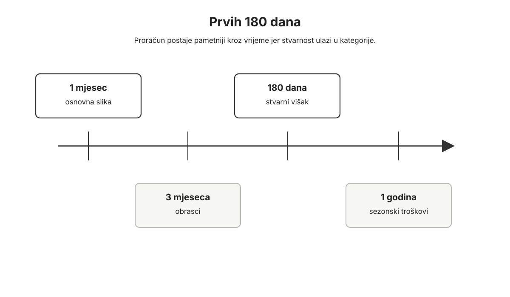
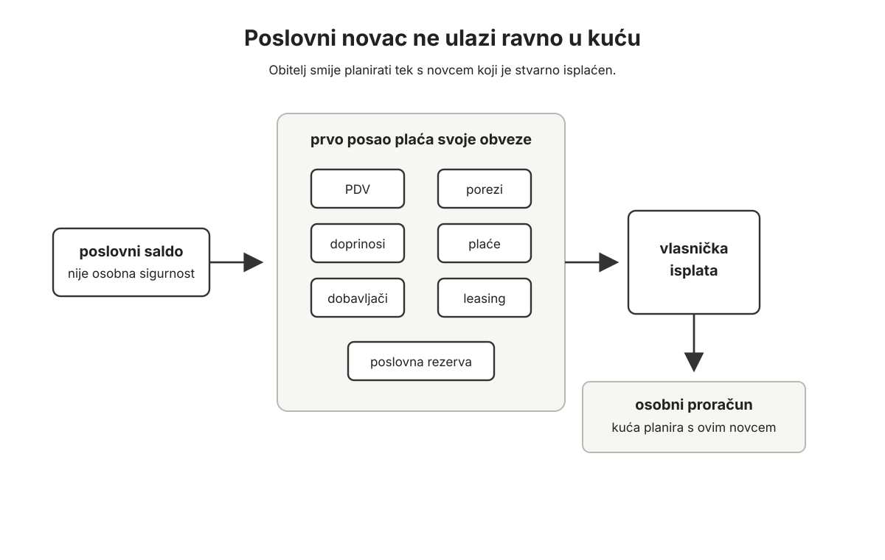
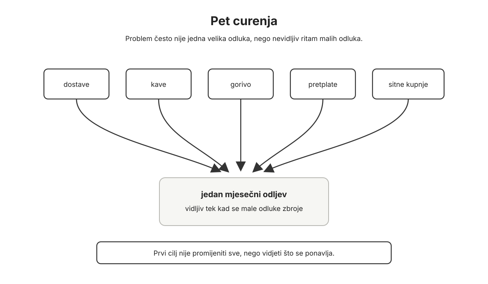

Predgovor
Ova knjiga zove se Bitcoin kao novac. Njezin podnaslov je Od držanja Bitcoina do uređenog sustava odluka. Ta rečenica najkraće opisuje ono što sam pokušao napraviti.
Danas gotovo svi znaju za Bitcoin. Teško je pronaći osobu koja barem jednom nije čula tu riječ. Do nekoga je došla kroz vijesti, do nekoga kroz prijateljski razgovor, do nekoga kroz priču o cijeni, “kriptu”, upozorenjima, euforiji ili ismijavanju.
Ali između toga da je čovjek čuo za Bitcoin i toga da Bitcoin doista razumije postoji velika udaljenost.
Još je veća udaljenost između toga da netko drži Bitcoin i toga da oko Bitcoina ima uređen životni sustav.
Ova knjiga ne nastaje prvenstveno zato da čovjeka prevede iz stanja “nemam Bitcoin” u stanje “imam Bitcoin”. Taj se prijelaz već događa i događat će se sve više. Ljudi će prvi put kupiti Bitcoin iz znatiželje, zbog razgovora s prijateljem, članka, cijene, tehnologije ili sve dublje sumnje u novac koji koriste svaki dan.
Ova knjiga počinje na drugom mjestu.
Počinje ondje gdje čovjek kaže: u redu, sada imam Bitcoin. Možda malo, možda više, možda dugo, možda tek od jučer. Ali što sada s tim?
Što Bitcoin znači za moj proračun? Što znači za dug? Što znači za davanje? Što znači za obitelj? Što znači za posao? Što znači za neto imovinu? Što znači za kuću, auto, štednju, rizik, sigurnost, nasljeđivanje i budućnost?
Drugim riječima: kako od stanja “držim Bitcoin” doći do stanja “imam uređen sustav odluka oko novca”?
To je pitanje ove knjige.
I važno je odmah reći: ova knjiga nije samo za osobu u obitelji koja već sluša Bitcoin podcaste, prati cijenu, zna što su početne riječi i ima mišljenje o svakoj burzi, skrbniku i hardverskom novčaniku. Ona je i za osobu koja s njom dijeli život. Za ženu ili muža koji možda nisu jednako duboko u Bitcoinu, ali će živjeti s posljedicama odluka. Za roditelja koji se pita što će djeci ostaviti osim salda. Za poduzetnika koji osjeća da mu inflacija, porezi, dug i loš novac stalno pomiču tlo pod nogama. Za čovjeka koji nema vremena postati stručnjak za svaki tehnički detalj, ali želi znati kako ovo stvarno uklopiti u život.
U posljednje vrijeme često se vraćam jednoj misli koju sam čuo od Michaela Saylora. Govorio je o tome kako je osobno proveo više od tisuću sati pokušavajući objasniti Bitcoin pojedincima, poduzetnicima i korporacijama, a ipak ni u Microsoftu, nakon njegove prezentacije, nije uspio dobiti ni 0,1% podrške za ideju da tvrtka stavi Bitcoin u svoju bilancu. Rekao je i nešto još oštrije: čak i kada bi se svake godine ulagalo 100 milijardi dolara u edukaciju o Bitcoinu, to samo po sebi ne bi dovoljno pomaknulo adopciju.
Ta mi je rečenica važna jer pogađa stvarni problem. Ljudi ne odbijaju Bitcoin samo zato što im nedostaje još jedan dobar video, još jedan graf, još jedna knjiga ili još jedno objašnjenje zašto je njegova ponuda ograničena. Bitcoin je još uvijek u ranoj fazi monetizacije, a u toj fazi nosi neobičnu kombinaciju: može biti najbolji novac koji se ikada pojavio, a istodobno jedna od najvolatilnijih imovina koju običan čovjek može držati.
Može imati volatilnost oko 40. Može godinama rasti stopama koje izgledaju nestvarno, recimo 50% godišnje u jednom duljem razdoblju, a možda 30% u nekoj zrelijoj fazi. Ali čovjek koji ga želi koristiti kao novac ne živi u prosjeku. Živi u mjesecu u kojem treba platiti stanarinu, ratu kredita, plaću zaposleniku, porez, liječenje, školu, dobavljača, popravak auta ili ljetovanje koje je djeci već obećano.
Zbog toga velika većina ljudi nema samo informacijski problem. Ima problem bilance, vremena, uvjerenja i živaca. Jednima nedostaje dovoljno viška da izdrže velik pad bez panike. Drugima još nije jasna razlika između Bitcoina i šireg kripto šuma. Mnogi nemaju vremena sami proći stotine sati ekonomije, povijesti novca, kriptografije, energetike, sigurnosti i tržišnih ciklusa. Čak i kada čovjek počne razumijevati, obitelj, partner, posao ili dug mogu ga spriječiti da Bitcoin odmah počne koristiti kao primarni novac.
U tom smislu ova knjiga namjerno pliva uzvodno. Njezina teza nije samo da Bitcoin treba držati. Teza je da ga čovjek može početi koristiti kao novac već sada, dok je još volatilan, ako prije toga uredi život oko novca dovoljno dobro da ga volatilnost ne nosi kao val. Edukacija može zapaliti uvjerenje, ali sustav je ono što uvjerenje nosi kroz padove, rastove, račune, obitelj, posao i vrijeme.
Možda je baš tu najveća vrijednost ove knjige: ne u pokušaju da lijepim riječima ukloni strah od volatilnosti, nego u pokušaju da pokaže kako se oko visoko volatilnog, ali dugoročno snažnog novca gradi proračun, odnos prema dugu, praksa davanja, ravnoteža imovine, sigurnost, obiteljsko razumijevanje i sposobnost čekanja.
U ovoj knjizi neće biti mnogo prostora potrošeno na samu Bitcoin tehnologiju. Ne zato što tehnologija nije važna. Važna je. Ali postoje drugi radovi koji mnogo bolje i dublje objašnjavaju kriptografiju, dokaz rada, energetiku, ekonomsku teoriju, povijest novca i tehničke detalje protokola. Tko želi produbiti uvjerenje u tim smjerovima, imat će kamo ići.
Ovdje me zanima drugo pitanje: ako je Bitcoin novac, kako sada trebam živjeti?
Kako smanjiti rasipanje novca? Kako povećati sposobnost stvaranja prihoda? Kako ojačati toleranciju na rizik? Kako razlikovati novac od potrošačkih i proizvodnih dobara? Kako znati gdje se Bitcoin nalazi u vlastitoj neto imovini? Što raditi kada je cijena iznad dugoročnog trenda, a svi oko nas zvuče nepobjedivo? Što raditi kada je ispod trenda, sentiment je težak, a čovjek bi najradije od svega odustao?
Moj vlastiti put prema tim pitanjima nije bio ravan.
Ne mogu točno locirati dan kada sam prvi put čuo za Bitcoin. Bilo je to vrlo rano, negdje oko 2011., 2012. ili 2013. godine. U tom razdoblju moj fokus nije bio na novcu. Bio sam više u svijetu interneta, videoigara, online učenja i projekata koji su me tada zaokupljali. Bitcoin mi se u početku nije pojavio kao nešto što odmah mijenja civilizaciju. Više kao neobična internetska stvar. Nešto između tehnologije, digitalnog eksperimenta i gotovo “play money” ideje.
Tek 2014. godine Bitcoin mi se vratio ozbiljnije. Tada sam prolazio kroz poduzetničko zasićenje i trebao sam predah od projekta kojim sam se intenzivno bavio. U ljeto te godine, dok sam hladio glavu, ponovno sam došao do Bitcoina.
Taj put više nije izgledao kao bezazlena internetska igra. Čitao sam o Silk Roadu, o propasti Mt. Goxa, o ljudima koji su izgubili Bitcoine, o WikiLeaksu, o američkom FBI-u i o prvim većim javnim pričama u kojima Bitcoin više nije bio samo tehnološka zanimljivost, nego nešto oko čega se već okretao ozbiljan novac, ozbiljan rizik i ozbiljna državna pažnja.
To mi je promijenilo percepciju. Ako se oko nečega pojavljuju tržišta, sukobi, pravni problemi, burze, države, hakeri i ljudi koji o tome govore s neobičnom ozbiljnošću, onda to možda ipak nije samo internetska igra.
Tada sam počeo gledati prve konkretnije materijale. BitcoinTalk forum, predavanja Andreasa Antonopoulosa, razne tutoriale i sadržaje koji su objašnjavali što Bitcoin uopće jest. I tada sam prvi put kupio Bitcoin. Sjećam se da je cijena bila oko 600 dolara.
Ali nisam imao sustav.
Nisam imao proračun oko Bitcoina. Nisam imao jasnu ideju što s njim. Nisam razumio kako ga uklopiti u neto imovinu. Nisam znao kako se ponašati kroz volatilnost. Nisam imao zreli odnos prema sigurnosti. Nisam razumio razliku između “imam Bitcoin” i “Bitcoin je moj novac”. Kupio sam ga, ali nisam znao kako oko njega živjeti.
Moj Bitcoin put tada je uzeo pauzu.
Ta pauza trajala je do zime 2017. godine. Bitcoin je tada ponovno ušao u vijesti, medije i ono što se danas naziva zeitgeist. Sjećam se osjećaja kada sam vidio da je nešto što sam 2014. kupovao po oko 600 dolara odjednom došlo na 10, 12 ili 13 tisuća dolara, a zatim blizu 20 tisuća. To je bilo više od dvadeset puta više u samo nekoliko godina. Posebno snažno me pogodilo zato što ga u međuvremenu nisam aktivno pratio.
Takav rast više nisam mogao zaboraviti.
Ali tada još nisam bio potpuno zreo u razumijevanju Bitcoina. Krajem 2017. i početkom 2018. imao sam kratko razdoblje istraživanja drugih kriptovaluta. Kao i mnogi, mislio sam: Bitcoin je već “prvi”, možda je zastario, možda postoje brži, bolji, noviji projekti. Bear market 2018. brzo je pokazao razliku između šuma i signala. Ono malo što sam pokušao s altcoinovima prošlo je loše, ali to iskustvo mi je pomoglo. Izgubio sam dio iluzija.
A onda su počeli dolaziti ozbiljniji materijali. Podcasti. Knjige. The Bitcoin Standard. Saifedeanova online akademija. Sve više sam razumijevao da Bitcoin nije samo tehnološka stvar, niti samo cjenovni graf, niti dio široke “kripto” industrije. Bitcoin je monetarni fenomen.
Jedna od stvari koja me danas najviše smeta u razgovorima o Bitcoinu jest kada se Bitcoin i “kripto” koriste kao da su ista stvar. Razumijem zašto se to događa. U javnosti se sve često stavlja u isti koš. Ali Bitcoin nije samo jedan token među milijunima. Bitcoin je protokol koji je od početka zadržao ograničenu ponudu, decentraliziranu provjeru pravila, dokaz rada i monetarnu neutralnost. Oko njega je nastao ogroman šum drugih projekata, narativa i tržišta. Ali signal je i dalje jednostavan: Bitcoin je novi oblik novca.
Ako se taj signal izgubi u šumu “kriptovaluta”, čovjek teško može razumjeti zašto Bitcoin zaslužuje drukčiji tretman. Tada ga počne gledati kao dio investicijskog portfelja, spekulaciju ili tehnološku okladu. Ja ga ne gledam tako.
Za mene Bitcoin nije investicija u istom smislu kao dionica, posao, nekretnina ili proizvodna imovina. Bitcoin je novac. Kada mijenjam eure za Bitcoin, ja ne “investiram” u Bitcoin. Ja razmjenjujem slabiji oblik novca za bolji oblik novca. Ako kasnije Bitcoin ili eure ulažem u posao, alat, kapital ili proizvodnu imovinu, tada govorimo o investiranju.
Ta razlika u jeziku nije sitnica. Ona mijenja sve.
Ako Bitcoin gledamo kao investiciju, pitanje je: kada kupiti, kada prodati, koliki povrat očekujem i kako ga usporediti s drugim investicijama? Ako Bitcoin gledamo kao novac, pitanje postaje drukčije: koliki dio moje neto imovine treba biti u novcu, kako mjerim potrošnju, što znači dug, gdje je stvarni višak, kada potrošiti, kada dati, kada ulagati u proizvodnu imovinu, kako razgovarati s obitelji i tko zna prvi korak ako se nešto dogodi?
Za poduzetnika to nije akademska razlika. Ako euro gubi kupovnu moć, ako se zalihe, oprema, najam, plaće i porezi stalno moraju planirati kroz novac koji se mijenja pod nogama, onda pitanje novca nije samo privatna štednja. Ono ulazi u cijene, marže, odluke o zapošljavanju, odnos prema dugu i sposobnost da se kaže ne lošem rastu. Bitcoin kao novac znači drukčiji odnos prema kapitalu, radu i vremenu.
Najveći prijelom u mom razumijevanju dogodio se 2020. godine.
Tada sam počeo raditi za Saifedeana Ammousa. Već sam pohađao njegove tečajeve na online akademiji i imao iskustva s web stranicama, edukacijskim projektima i tehničkim radom. On je tražio pomoć oko problema na stranici, ja sam se javio i tako je počela suradnja.
U jednom trenutku pitao me kako želim biti plaćen: PayPal, Bitcoin ili neki drugi način. Pomislio sam: ako već radim s autorom The Bitcoin Standarda, onda ima smisla vidjeti kako izgleda biti plaćen izravno u Bitcoinu.
Tako je Bitcoin za mene prestao biti samo imovina koju držim i postao prihod.
Kroz nekoliko mjeseci moj se angažman proširio, a fiat prihodi su se stanjili. U jednom trenutku praktički sam potrošio svu zalihu državnog novca koju sam imao, tada još u kunama. Nisam više imao izravne prihode u fiatu, ali imao sam Bitcoin štednju i Bitcoin prihode. Tada se pojavilo pitanje koje svaki Bitcoiner prije ili kasnije mora susresti ako Bitcoin želi shvatiti kao novac:
Imam troškove koje moram platiti. Nemam više dovoljno fiata. Imam Bitcoin. Što sada?
To je psihološki puno teže nego što izgleda izvana. Jedno je reći “Bitcoin je novac”. Drugo je platiti stvarni trošak iz Bitcoina koji može rasti u kupovnoj moći. Odmah se pojavi unutarnji glas: što ako će ovaj Bitcoin jednog dana vrijediti puno više? Što ako sada potrošim nešto što sam trebao držati? Što ako ponavljam grešku čovjeka koji je kupio pizze za Bitcoin?
Tada sam počeo shvaćati da pitanje nije smije li se Bitcoin ikada trošiti.
Pitanje je postoji li sustav koji kaže kada, zašto, koliko i iz koje kategorije se troši.
Ako Bitcoin postane novac, on se ne može nikada trošiti samo u teoriji. Novac se koristi. Novac se štedi, troši, daje, ulaže i razmjenjuje. Pitanje nije treba li Bitcoin zauvijek stajati netaknut kao sveta stvar. Pitanje je kako ga integrirati u proračun, dug, davanje, neto imovinu, očekivanja, volatilnost i sigurnost.
Tu sam shvatio koliko je upravljanje novcem više psihologija nego matematika.
Matematiku većinom znamo. Prihod mora biti veći od rashoda. Dug košta. Treba štedjeti. Isti novac ne možemo potrošiti na dvije stvari. Bolje je kupiti jeftinije, prodati skuplje, držati dugoročno i ne paničariti.
Ali ne živimo uvijek tako.
Razlog je jednostavan: novac dira strah, nadu, status, sram, obitelj, sigurnost, usporedbu, krivnju, pohlepu i želju da budemo slobodni. Mnoge odluke koje poslije objasnimo racionalno zapravo su u početku bile psihološke. Ova knjiga zato nije samo skup financijskih formula. Ona je pokušaj da se oko novca postavi skup principa koji pomažu čovjeku kad emocije postanu glasne.
To posebno vrijedi za volatilnost.
Volatilnost Bitcoina izvor je velikog dijela sentimenta koji ljudima skida fokus s fundamentalnog pitanja: što Bitcoin zapravo radi i u kojem se vremenskom okviru to treba promatrati? Kada cijena raste, ljudi lako pomisle da su genijalni. Kada pada, lako pomisle da su sve krivo razumjeli. I u jednom i u drugom slučaju cijena počne upravljati identitetom.
Volatilnost nije samo problem. Ona je i znak životnosti. U prirodi je energija često divlja, promjenjiva i nepredvidljiva. Vatra može grijati kuću ili je može zapaliti. Voda može pokretati turbinu ili razoriti obalu. Razlika je u tome postoji li tehnologija, disciplina i okvir koji tu energiju usmjerava.
S Bitcoinom je slično. Volatilnost je opasna kada čovjek nema sustav. Ako nema proračun, pad cijene postaje panika, a rast cijene postaje dopuštenje za rastrošnost. Ako ima dug, volatilnost ga može natjerati da prodaje u najgorem trenutku. Ako nema ravnotežu imovine, ne zna je li mu Bitcoin prevelik ili premalen dio života. Ako nema praksu davanja, rast cijene može samo povećati stisak. Ako nema sigurnost, veća vrijednost samo povećava posljedicu pogreške.
Ali kada postoje proračun, život bez duga, davanje, ravnoteža imovine, ispravno postavljena očekivanja prema dugoročnom trendu, skrbništvo i sigurnost, volatilnost postaje nešto drugo. Postaje informacija. Kada Bitcoin padne ispod trenda, ne mora se paničariti. Može se povećati neto prihod, odgoditi velika potrošnja, akumulirati iz viška i očistiti imovina koja nema funkciju. Kada Bitcoin ode iznad trenda, ne mora se poludjeti od euforije. Može se napuniti buduće kategorije, unaprijed riješiti planirane troškove, dati više, ulagati pažljivije i rebalansirati mirnije.
Drugim riječima, nije cilj ukloniti volatilnost. Cilj je postati osoba kojoj volatilnost ne upravlja životom.
Ja sam od jeseni 2020. živio kroz uzlazne i silazne periode Bitcoina koristeći ga kao stvaran novac. To iskustvo mi je izgradilo otpornost na volatilnost. Ono što čovjeka ne slomi može ga ojačati, ali samo ako iz iskustva nešto nauči. Tko kroz padove i rastove prolazi bez sustava, često samo skuplja traume. Tko prolazi sa sustavom, skuplja mudrost.
Čitatelju koji se boji Bitcoina jer je volatilan rekao bih: bojati se nije čudno, ali ne treba ostati na strahu. Volatilnost se ne rješava prognozom. Rješava se time da život postane dovoljno uređen da vas ni rast ni pad ne izbace iz ravnoteže.
A čitatelju koji je već doživio veliki pad i razočarao se rekao bih: problem vjerojatno nije bio samo pad. Problem su vjerojatno bila očekivanja. U Bitcoinu uvijek treba očekivati i veliki rast i veliki pad. Bitnije od toga što će cijena napraviti jest što ćete vi napraviti kad se to dogodi.
Ako cijena padne, vraćam se proračunu. Ako cijena snažno naraste, vraćam se proračunu. To zvuči dosadno, ali upravo je to poanta. Proračun je mjesto gdje emocija postaje odluka.
Moj osobni proračun nije teorijska stvar. Vodim ga godinama, gotovo osam godina, i vodim ga u istoj aplikaciji: YNAB-u, akronimu od You Need A Budget, odnosno “treba ti proračun”. Ne mislim da svatko mora koristiti baš taj alat. Netko će koristiti bilježnicu, netko tablicu, netko drugi softver. Bitno je da alat smanji trenje dovoljno da praksa preživi umor.
Ponekad “besplatno” rješenje nije stvarno jeftinije. Ako nešto ne platimo novcem, često platimo vremenom, greškama, odgađanjem ili nejasnoćom. Dobar alat ne rješava problem umjesto čovjeka, ali može pomoći da se dobra navika zadrži.
Jedan od najvažnijih principa ove knjige jest da je uvijek bolje učiti na tuđim greškama nego na vlastitim. Vlastite greške možda jesu najučinkovitiji učitelj, ali često su i najskuplji. Čovjek može preskočiti proračun, preskočiti dug, preskočiti davanje i odmah ući “all-in”. I naučit će nešto. Uvijek naučimo nešto. Pitanje je samo hoće li naučiti na lakši ili teži način.
Ova knjiga pokušava ponuditi lakši način.
Ne zato što sam ja sam izmislio pravila. Nisam. Mnogo toga ovdje dolazi iz tisuća godina ljudskog iskustva s novcem, dugom, radom, davanjem, štednjom, obitelji, rizikom i vremenom. Ja sam te principe čitao, slušao, učio, primjenjivao i vidio da funkcioniraju. Bitcoin je nova tehnologija i novi monetarni fenomen, ali čovjek koji ga koristi nije nova vrsta bića. Još uvijek ima obitelj, strahove, želje, navike, slabosti, talente, dugove, rad, odnose i vrijeme.
Ova knjiga ne pokušava čitatelja uvjeriti da bude hrabar bez temelja. Ona pokušava pokazati redoslijed.
Prvo proračun. Zatim dug. Zatim davanje. Zatim ravnoteža imovine. Zatim razumijevanje Bitcoinova rasta, volatilnosti i vremena. Zatim skrbništvo, sigurnost, obitelj i nasljeđivanje.
Tek tada držanje Bitcoina počinje prerastati u nešto veće: uređen sustav odluka.
Davanje je u moj život ušlo kao praksa, ne kao teorija. Nakon što sam se razdužio, počeo sam dio novca sustavno držati u fondu za davanje. Ne kao slučajni višak. Ne kao impuls. Nego kao kategoriju. Dok sam ocu pomagao u prodaji njegovih slika na Rabu, počeo sam kupcima dodavati male poklone: razglednicu, nešto sitno, nešto što nije bilo uvjet kupnje i nije očekivalo ništa zauzvrat. Iznos nije bio velik, ali bio je planiran.
Primijetio sam nešto zanimljivo. Ljudi su se bolje osjećali. Neki su se vraćali. Neki su doveli prijatelje. Prodaja slika je išla bolje, ali još važnije, ja sam bolje radio taj posao. Davanje nije promijenilo samo njih. Promijenilo je mene. Učinilo me otvorenijim, pažljivijim, boljim u odnosu s ljudima. Počeo sam razumijevati da davanje ne djeluje samo kao izlaz novca iz proračuna. Ono oblikuje osobu koja upravlja novcem.
U ovoj knjizi davanje zato nije dodatak na kraju. Ono je temelj.
Proračun bez davanja može postati kontrola. Bitcoin bez davanja može postati stisnuta šaka. Tvrdi novac bez velikodušnosti može stvoriti tvrdog čovjeka. A cilj ove knjige nije samo bolja bilanca, nego bolji čovjek.
Drugi važan princip je dug.
Nakon godina proučavanja Bitcoina, rada s ljudima i vlastitog iskustva, duboko vjerujem da dug i Bitcoin imaju vrlo opasan odnos. Bitcoin traži dugi vremenski horizont. Dug ga skraćuje. Bitcoin traži unutarnju disciplinu. Dug uvodi vanjski pritisak. Bitcoin traži sposobnost čekanja. Dug traži redovitu uplatu bez obzira na stanje tržišta, zdravlje, posao ili obitelj.
Opasna mi je ideja da se Bitcoin nikada ne smije prodati, nego se protiv njega treba zaduživati. U određenim vrlo specifičnim okolnostima netko može koristiti financijske instrumente na sofisticiran način, ali kao opće životno pravilo to može biti katastrofalno. Dug nije samo kamata. Dug je psihološko stanje. Dug je budući novac koji više nije slobodan.
S tim je povezana i jedna šira stvar: novac ne dolazi iz izolacije. Novac dolazi od ljudi.
To sam učio kroz poduzetništvo, klijente, kupce, projekte i tržište. Novac je medij razmjene između ljudi. Mi ljudi vrednujemo stvari i usluge. Vrednujemo ih različito, i upravo zato razmjena postoji. Gotovo ništa što koristimo u svakodnevnom životu nismo sami napravili. Netko je dizajnirao uređaj na kojem pišemo. Netko je proizveo stol za kojim sjedimo. Netko je isporučio struju, internet, hranu, odjeću, softver, knjige, alate i prostor. Ideja da možemo biti potpuno samostalni vrlo je zavodljiva, ali je pogrešna. Bogatstvo su, u velikoj mjeri, drugi ljudi.
U ovoj knjizi važno je stalno se vraćati na stvaranje vrijednosti. Prihod dolazi kada nekome stvorimo vrijednost koju on dobrovoljno prepoznaje i plaća. Netko dobiva proizvod, uslugu, rješenje, znanje, pomoć ili olakšanje, a mi dobivamo novac kao znak da je ta vrijednost prepoznata.
Bitcoin ne bi smio biti bijeg od toga.
Često sam viđao ljude koji računaju koliko im Bitcoina treba da se “umirove” i da više nikada ne moraju raditi. Razumijem privlačnost te ideje. Tko ne bi htio sigurnost? Ali ako Bitcoin postane samo maštanje o tome da više ne moramo stvarati vrijednost za druge, nešto smo promašili.
Jedan od najvećih izvora zadovoljstva i sreće jest dobro obavljen posao. Ne bilo kakav posao. Ne besmislen rad pod prisilom. Nego osjećaj da smo nekome stvarno pomogli, nešto riješili, nešto stvorili, nekome olakšali život ili zadovoljili stvarnu potrebu. Kada drugi ljudi to vrednuju i za to plate, novac nije znak grabeži. Novac je znak uspjele razmjene.
Ako imamo velik Bitcoin saldo, ali nemamo osjećaj da doprinosimo drugima, taj saldo može postati dosada, strah, izolacija ili stalno pitanje što sada. Dobar novac daje sigurnost, ali sigurnost sama po sebi nije smisao života. Smisao dolazi iz služenja, stvaranja, obitelji, vještine, odnosa i odgovornosti.
Dobar novac ne smije nas učiniti ljudima koji bježe od rada. Treba nas učiniti ljudima koji mogu bolje birati rad, bolje služiti i bolje stvarati vrijednost.
Ova knjiga je podjednako za pojedinca, za obitelj i za osobu koja vodi posao.
Pojedinac mora znati upravljati novcem jer svaki pojedinac živi među drugim ljudima. Obitelj mora znati upravljati novcem jer se prava imovina ne stvara samo jednim velikim uvidom jedne osobe, nego zajedničkim razumijevanjem, povjerenjem i ponavljanjem. Posao mora znati upravljati novcem jer je posao rad s ljudima: klijentima, kupcima, partnerima, zaposlenicima, dobavljačima i zajednicom.
U mnogim razgovorima s Bitcoinerima vidio sam jednu neizrečenu situaciju. U obitelji često postoji jedna osoba, vrlo često muškarac, koji je gotovo opsjednut Bitcoinom. Čita, sluša, prati, kupuje, uči, raspravlja, planira. S druge strane, partnerica često nije u tome na isti način. Ona mu vjeruje, ali ne zna do kraja što se događa. On zna previše da bi lako objasnio, a ona zna premalo da bi stvarno mogla sudjelovati.
To nije zdrav završni sustav.
To je razumljivo u početku. Netko prvi u obitelji otkrije Bitcoin, uči i preuzme odgovornost. Ali ako Bitcoin postane važan dio obiteljske imovine, onda ne smije zauvijek ovisiti samo o jednoj glavi, jednoj lozinki, jednom uređaju, jednom načinu razmišljanja i jednoj osobi koja “sve zna”.
Znati nešto nije isto što i znati to prenijeti.
To je jedan od razloga zašto ova knjiga postoji: da koncepte destilira u oblik koji može razumjeti i osoba koja nije tehnička, i partner koji nije opsjednut Bitcoinom, i dijete koje tek uči novac, i poduzetnik koji nema vremena postati stručnjak za svaki detalj.
Skrbništvo, sigurnost, obitelj i nasljeđivanje zato su dio knjige o novcu, a ne tehnički dodatak. Tehnički dio jest važan, ali još važnije pitanje je: kako urediti sustav tako da ljudi koji nisu jednako tehnički spretni znaju što napraviti u pravom trenutku?
Ova knjiga ne inzistira na jednom univerzalnom rješenju za sve. Ne tvrdim da svatko u svakom trenutku mora samostalno držati sav svoj Bitcoin bez ikakve pomoći. Niti tvrdim da je skrbnik uvijek dobro rješenje. Niti da je svaka institucija opasna. Niti da je svaki financijski instrument povezan s Bitcoinom isto što i Bitcoin. Stvarnost je složenija.
Postoje vlastiti posjed, skrbnička rješenja, hibridni modeli i financijski instrumenti povezani s Bitcoinom. Svi imaju prednosti i mane. Ne postoji jedno rješenje za svaku osobu, obitelj, posao i fazu života. Postoji samo potreba da se razumije što se radi, zašto se radi, koji se rizik preuzima i tko zna prvi korak ako se nešto dogodi.
Ne želim u samu knjigu zakovati previše imena uređaja, aplikacija, skrbnika, pružatelja usluga ili financijskih instrumenata. Taj se sloj mijenja prebrzo. Na stranici koja prati ovu knjigu nastojat ću držati ažurirane vodiče s konkretnijim alatima i praktičnim koracima koji u određenom trenutku imaju smisla. Knjiga treba dati okvir koji sporije stari.
Roditeljima koji čitaju ovu knjigu želim posebno reći: veća vrijednost za djecu nije samo količina Bitcoina koju ćete im ostaviti. Veća vrijednost je ono što ćete ih naučiti o novcu, radu, odnosima, zahvalnosti, stvaranju vrijednosti, davanju i odgovornosti. Imovina bez pravila može postati teret. Bitcoin bez razumijevanja može postati izvor svađe, straha ili brzog rasipanja. Ako djeci ostavimo samo vrijednost, a ne ostavimo im način razmišljanja, možda im nismo dali ono najvažnije.
Djeci ne treba prenijeti samo Bitcoin. Treba im prenijeti pravila. A pravila se ne prenose jednim razgovorom. Prenose se vremenom, ponavljanjem, primjerom i strpljenjem.
Isto vrijedi za primanje. Ako netko jednog dana naslijedi Bitcoin ili bilo koju drugu vrijednost, mora znati primiti. Primanje nije pasivno. Čovjek može primiti površno, bez razumijevanja i bez osjećaja odgovornosti. A može primiti zahvalno, svjestan da vrijednost nije došla ni iz čega.
Sve važnija mi je praksa zahvalnosti.
Jedna jednostavna praksa koju smatram korisnom jest zapisivanje zahvalnosti: tri stvari na kojima sam zahvalan, šest dana u tjednu. Ne mora biti veliko. Dapače, važno je vidjeti male stvari. Kada čovjek vježba zahvalnost za ono što već ima, lakše prima bez srama i lakše daje bez stiska. Zahvalnost mijenja unutarnji odnos prema novcu.
Davanje, primanje i zahvalnost povezani su. Čovjek koji ne zna primiti često ne zna ni dati bez kontrole. Čovjek koji ne zna dati često ne zna ni primiti bez straha. Zahvalnost uči oba smjera.
Danas bih sebi iz 2014. rekao nešto vrlo jednostavno: naišao si na stvar civilizacijske važnosti. Bitcoin je tada bio kao dijete od pet godina, a mogao bi izrasti u višestoljetnog mudraca koji mijenja ljudsku koordinaciju. Nemoj ga tretirati kao igru. Nemoj ga samo kupiti i zaboraviti. Uhvati se posla. Napravi proračun. Ne diži kredit. Počni davati. Uči. Radi. Razmišljaj u desetljećima.
Možda bih si rekao i nešto radikalnije: sav novac koji imaš prebaci u Bitcoin i prilagodi potrošnju i prihode prema njegovoj kupovnoj moći. Da sam to tada napravio savršeno, danas bih vjerojatno bio u potpuno drugačijoj financijskoj poziciji.
Ali to nije cijela istina. Jer možda tada nisam bio osoba koja bi to znala nositi. Možda sam morao proći krive pretpostavke, altcoin fazu, volatilnost, rad za Bitcoin, trošenje Bitcoina, razduživanje, davanje i proračun da bih uopće razumio što ova knjiga treba biti.
Ovo nije knjiga koju piše netko tko je od prvog dana sve znao. Ona nastaje iz vlastitog puta, pogrešaka, faza, učenja i sve jasnijeg uvjerenja da Bitcoin nije samo nešto što treba držati. Bitcoin je nešto oko čega treba naučiti živjeti.
Poseban razlog zašto ovu knjigu pišem na hrvatskom jest praznina koju vidim oko sebe. Na hrvatskom jeziku gotovo da nema praktičnih knjiga o Bitcoinu, pogotovo ne iz perspektive: kako Bitcoin koristiti kao novac. Postoji puno sadržaja o cijeni, spekulaciji, tehnologiji, politici, ekonomiji i “kriptu”, ali vrlo malo onoga što običnom čovjeku, obitelji ili poduzetniku pomaže odgovoriti na pitanje: kako ovo stvarno uklopiti u svakodnevni život?
Hrvatsko izdanje je za mene prirodan početak. Hrvatski je moj jezik. Ovdje živim, ovdje razgovaram s ljudima, ovdje vidim konkretne obrasce: odnos prema dugu, nekretninama, autima, štednji, poslu, obitelji i sigurnosti. Kasnije ova knjiga može izaći i na drugim jezicima. Ali prvo želim da bude dobra ovdje, među ljudima čije okolnosti poznajem izravno.
Ideja za knjigu nastajala je godinama. U razgovorima s Bitcoinerima, klijentima, prijateljima i ljudima koji tek ulaze u ovu temu, neprestano sam ponavljao iste stvari. U jednom trenutku shvatio sam da to više ne smije ostati samo u razgovorima i bilješkama. Treba postati sustav. Treba postati tekst. Treba postati nešto čemu se čovjek može vraćati, označavati, provjeravati i primjenjivati.
Postoji i osobniji, vrlo iskren razlog. Volio bih da ljudi koji već drže Bitcoin postanu bolji Bitcoineri, ne u smislu identiteta, slogana ili pripadnosti plemenu, nego u smislu kvalitete odluka. Manje prisilnih prodaja u lošem trenutku. Manje situacija u kojima proračun nije postojao, dug je stisnuo, stvarni višak nije bio jasan ili je sigurnosni sustav bio prekrhak. Više reda kod onih koji imaju mogućnost ući dublje u Bitcoin, a kod ljudi koji su već u njemu više sposobnosti stvaranja vrijednosti, veći prihodi i stabilniji život.
To je dobro za njih, ali je dobro i za mene. Ne moram se pretvarati da sam neutralan promatrač. Dio sam Bitcoin mreže. Što je više ljudi razumije, koristi, čuva i prenosi na zreliji način, to je mreža jača, korisnija i otpornija. Što više ljudi stvara stvarnu vrijednost i dio te vrijednosti čuva u Bitcoinu, to i moj Bitcoin ima veću kupovnu moć i više prilika da ga koristim kao novac u stvarnom svijetu.
Zbog toga želim da se ova knjiga slobodno dijeli. Njezin sadržaj bit će otvoreno dostupan online. Ne zato da bi knjiga bila “besplatna stvar” koju se zaboravi u otvorenoj kartici, nego zato što želim da dođe do ljudi kojima bi meni ovakav tekst 2014. godine mnogo značio. Dobra ideja se ne troši dijeljenjem. Ako vam nešto iz ove knjige pomogne, slobodno to koristite, dijelite, objašnjavajte, šaljite i gradite dalje.
Ova knjiga nije knjiga o tome kako se brzo obogatiti. Nije savjet za trgovanje. Nije poziv na polugu. Nije porezni, pravni ni investicijski priručnik. Ona je praktični vodič za čovjeka koji želi Bitcoin shvatiti ozbiljno kao novac i zatim postaviti pitanje koje je puno važnije od same cijene:
Kako sada trebam živjeti?
Uspjeh ove knjige nije da se složite sa svakom rečenicom. Nije ni da odmah promijenite cijeli život. Uspjeh je da nakon čitanja imate manje magle: da znate gdje je novac, što je dug, što je stvarni višak, koliko možete dati, gdje je Bitcoin, tko mu može pristupiti i što vaša obitelj treba znati.
Cilj nije samo imati više Bitcoina.
Cilj je postati bolji upravitelj vrijednosti.
A to je svrha ove knjige.
Zašto Bitcoin kao novac
Postoje trenuci u povijesti kada se pojavi nova tehnologija i isprva izgleda kao alat za usku skupinu ljudi. Zatim se s vremenom pokaže da nije riječ samo o alatu, nego o novom sloju civilizacije.
Pismo je u početku moglo izgledati kao način bilježenja robe, dugova i dogovora. Kasnije je postalo način prenošenja znanja kroz stoljeća. Tiskarski stroj je mogao izgledati kao učinkovitija metoda umnažanja knjiga. Kasnije je promijenio obrazovanje, znanost, vjeru, politiku i odnos običnog čovjeka prema znanju. Električna energija je mogla izgledati kao način da se noću upali svjetlo. Kasnije je preoblikovala industriju, gradove, domove, medicinu i komunikaciju. Internet je mogao izgledati kao mreža za akademike, programere i čudake. Kasnije je postao globalna infrastruktura za komunikaciju, trgovinu, učenje, rad i koordinaciju.
Bitcoin na početku izgleda kao cijena na ekranu.
Netko ga prvi put vidi kao graf. Netko kao špekulaciju. Netko kao digitalnu imovinu. Netko kao “nešto što je nekad bilo jeftino, a sada je skupo”. Netko kao opasnost. Netko kao priliku. Netko kao još jednu internetsku modu.
Ali takav pogled promašuje najvažnije pitanje.
Najvažnije pitanje nije: “Koliko Bitcoin danas vrijedi u eurima ili dolarima?”
Najvažnije pitanje je: što se događa kada čovječanstvo prvi put dobije novac koji nije ničiji dug, nije pod ničijim dekretom, nema središnjeg izdavatelja, ne može se proizvoljno umnožiti i može se prenositi preko svijeta bez dopuštenja?
To pitanje nije samo investicijsko. Nije samo tehničko. Nije samo političko. To je civilizacijsko pitanje.
Jer novac nije sporedna stvar.
Novac je jedan od glavnih načina na koji ljudi međusobno surađuju kroz vrijeme. On povezuje radnika s kupcem, štedišu s budućom potrošnjom, roditelja s djecom, poduzetnika s projektom, proizvođača s tržištem, sadašnjost s budućnošću. Novac je jezik kojim društvo svakoga dana govori što je vrijedno, što je rijetko, što se traži, što se nudi, što treba čuvati, što treba proizvesti i što treba prestati raditi.
Kada je novac loš, cijeli taj jezik postaje mutniji.
Kada se novac stalno stvara kroz dug, ljudi sve teže razlikuju stvarno bogatstvo od kreditne ekspanzije. Kada novac gubi kupovnu moć, štednja postaje kazna, a zaduživanje se počinje činiti razumnim. Kada cijene više ne nose jasne informacije, ljudi se sve teže orijentiraju. Kada se budućnost stalno diskontira, kratkoročne odluke postaju normalne. Kada ljudi osjećaju da novac “mora raditi” samo zato da ne bi nestajao, počinju kupovati stvari koje ne razumiju, ulaziti u rizike koje ne bi inače preuzeli i pretvarati život u stalnu obranu od propadanja kupovne moći.
Bitcoin nije rješenje za svaku ljudsku slabost. Ne čini čovjeka automatski mudrim, discipliniranim, poštenim, velikodušnim ili strpljivim.
Ali Bitcoin mijenja nešto temeljno: vraća mogućnost novca koji ne ovisi o obećanju izdavatelja.
Za koga je ova knjiga?
Ova knjiga je za dvije vrste čitatelja.
Prvi je čitatelj koji još nema Bitcoin ili ga ima vrlo malo, ali naslućuje da se tu događa nešto važno. Možda ga je strah. Možda misli da je Bitcoin isto što i ostatak “kripto” tržišta. Možda ne zna odakle početi.
Drugi je čitatelj koji Bitcoin već ima, ali oko njega nema red. Možda ga drži kao štednju, ali i dalje živi u dugu. Možda vjeruje u Bitcoin, ali nema proračun. Možda zna čuvati ključ, ali ne zna objasniti obitelji što učiniti ako ga sutra nema. Možda ima snažno uvjerenje, ali nema sustav.
Obje vrste čitatelja trebaju isto početno pitanje: ne samo kako doći do Bitcoina, nego kako urediti život tako da Bitcoin u njemu može postati dobar novac.
Bitcoin je snažan novac. Kao i svaka snažna stvar, ne postaje dobar ili loš samo po sebi, nego prema sustavu u koji ulazi. Električna energija može osvijetliti kuću ili ozlijediti čovjeka. Problem nije u snazi, nego u načinu uporabe. Tako i Bitcoin može biti izvor mira ili pojačivač nereda.
Kako čitati ovu knjigu
Ova knjiga nije napisana samo da se pročita. Napisana je da se provede.
Najbolje ju je prvo pročitati cijelu, od početka do kraja. Prvo čitanje daje mapu. Pokazuje zašto proračun dolazi prije duga, zašto dug dolazi prije davanja, zašto davanje dolazi prije ravnoteže imovine i zašto se Bitcoin kao primarni novac ne uvodi u život koji još nema osnovni red.

Redoslijed knjige nije dekoracija. Prvi dio postavlja prag, drugi dio integrira Bitcoin, a zaključak pokazuje plodove ponovljenih odluka.
Nakon prvog čitanja vratite se na prvo mjesto gdje vaš život još nije usklađen s redoslijedom. Ako ne vodite proračun, ne počinjete od skrbništva. Ako još živite u dugu kao normalnom stanju, ne počinjete od punog Bitcoin standarda. Ako davanje nema svoju kategoriju i stvarne transakcije, drugi dio knjige još nema dovoljno zdrav temelj.
Redoslijed je namjeran. Možete se ne složiti sa svakom tvrdnjom u ovoj knjizi. To je u redu. Ali okvir knjige ne može se provesti preskakanjem koraka. Bitcoin možete imati i prije nego što provedete prvi dio. Možete imati mali iznos za učenje, naviku i razumijevanje. Ali ozbiljan osobni Bitcoin standard počinje tek kada proračun postoji, dug izlazi iz života, a davanje prestaje biti samo dobra ideja.
Ova knjiga je zato namjerno čvrsta u redoslijedu. Ne zato da bi bila oštra prema čovjeku, nego zato da bi bila oštra prema neredu koji čovjeku krade vrijeme.
Novac prije cijene
Da bismo razumjeli Bitcoin, ne treba početi s tehnologijom. Treba početi s novcem.
Novac nastaje zato što ljudi žele surađivati. Svaki čovjek ne može sam proizvesti sve što mu treba. Netko zna uzgojiti hranu. Netko zna popraviti motor. Netko zna graditi kuću. Netko zna programirati. Netko zna liječiti. Netko zna učiti djecu. Netko zna organizirati posao. Netko zna prodati. Netko zna čuvati.
Kada ljudi razmjenjuju dobra i usluge, pojavljuje se problem: nije uvijek lako pronaći osobu koja ima ono što vama treba i kojoj baš u tom trenutku treba ono što vi nudite. Ako pekar treba cipele, a postolar ne treba kruh, razmjena se zaustavlja. Novac rješava taj problem. On je dobro koje ljudi prihvaćaju ne zato što ga nužno žele potrošiti odmah, nego zato što znaju da ga drugi ljudi također prihvaćaju.
Novac zato nije samo “sredstvo plaćanja”. On je most između različitih ljudi, različitih potreba i različitih trenutaka u vremenu.
Dobar novac mora biti utrživ. To znači da ga se lako može prodati, odnosno zamijeniti za druga dobra. Što je novac utrživiji, to ga više ljudi želi držati. Dobar novac je prepoznatljiv, djeljiv, prenosiv, trajan, rijedak i teško ga je proizvoljno umnožiti. Ali najvažnije od svega: dobar novac mora dobro čuvati kupovnu moć kroz vrijeme.
Ako novac ne čuva kupovnu moć, čovjek bježi od novca. Troši ga, ulaže ga, zadužuje se, kupuje imovinu, kupuje stvari, kupuje “za svaki slučaj”, kupuje jer se boji da će sutra isti novac vrijediti manje. Takav novac ne potiče mirno planiranje. On potiče žurbu.
Ako novac dobro čuva kupovnu moć, čovjek može čekati. Može štedjeti. Može odgoditi potrošnju. Može planirati dalje. Može reći “ne” lošem poslu, lošoj investiciji, lošem dugu, lošoj kupnji i lošem trenutku. Dobar novac ne uklanja potrebu za radom. Naprotiv, on rad čini smislenijim jer plod rada ne propada tako lako kroz vrijeme.
Zato pitanje Bitcoina nije samo pitanje jedne digitalne imovine.
Pitanje Bitcoina je pitanje može li čovjek ponovno imati novac koji ga ne tjera u stalni bijeg od novca.
Što je Bitcoin?
Bitcoin je monetarna mreža i novac te mreže.
To znači da riječ “Bitcoin” označava nekoliko povezanih stvari. Označava pravila sustava. Označava mrežu računala koja ta pravila provjeravaju. Označava digitalni novac koji se prenosi unutar te mreže. Označava javnu knjigu transakcija u kojoj se vidi povijest vlasništva. Označava i globalni dogovor milijuna ljudi da ta pravila vrijede.
Najkraće rečeno: Bitcoin je novac s unaprijed poznatim pravilima koji se može primati, slati i čuvati bez središnje institucije.
Nitko ne može jednostavno odlučiti da će sutra postojati dvostruko više Bitcoina. Nitko ne može promijeniti vašu transakciju zato što mu se ne sviđa. Nitko ne može proizvoljno poništiti pravila mreže bez toga da ga drugi sudionici odbiju. Nitko ne mora vjerovati središnjem uredu da vodi knjigu pošteno, jer pravila mogu provjeravati korisnici.
Bitcoin je prvi globalni digitalni novac koji se ne oslanja na povjerenje u izdavatelja.
To zvuči jednostavno, ali posljedice su ogromne.
Do Bitcoina je digitalni novac uvijek bio nečija obveza. Novac na bankovnom računu je zapis u bankarskom sustavu. Elektroničko plaćanje je prijenos potraživanja unutar mreže financijskih institucija. Kartica, aplikacija i internetsko bankarstvo mogu biti praktični, ali ne uklanjaju činjenicu da je sustav hijerarhijski: netko vodi račun, netko odobrava, netko može blokirati, netko ima konačnu riječ.
Bitcoin uvodi drukčiju arhitekturu.
On ne pita tko ste, gdje živite, kojoj banci pripadate, tko vam je poslodavac, imate li račun, jeste li poželjni klijent, jeste li dovoljno važni i slaže li se netko s vama. Bitcoin pita jednostavnije pitanje: je li transakcija valjana prema pravilima mreže?
Ako jest, mreža je može prihvatiti.
Zašto je ograničena ponuda važna?
Jedno od najpoznatijih svojstava Bitcoina je ograničena ponuda: maksimalno može postojati 21 milijun bitcoina.
Ali sama rijetkost nije dovoljna. Mnogo stvari je rijetko, pa nisu dobar novac. Važna je kombinacija: rijetkost, provjerljivost, prenosivost, djeljivost, sigurnost i rastuće prihvaćanje.
Kod državnog novca, ponuda se mijenja političkim i bankarskim procesima. Novi novac najčešće ulazi u sustav kroz kredit, dug, državne programe, financijska tržišta i bankarski sustav. Većina ljudi ne vidi izravno kako se to događa. Osjete posljedice kasnije: veće cijene, skuplje stanovanje, veća potreba za ulaganjem, normaliziran dug, pritisak da novac ne stoji, sve veći osjećaj da običan rad teško hvata korak s imovinom.
Kod Bitcoina su pravila izdavanja javna, poznata i provjerljiva.
Novi bitcoin nastaje kroz rudarenje. Rudari ulažu stvarnu energiju i računalnu snagu kako bi sudjelovali u sigurnosti mreže i predlagali nove blokove transakcija. Za to mogu dobiti nagradu prema pravilima protokola. Ta nagrada se približno svake četiri godine prepolavlja. Taj događaj zove se prepolavljanje. Kroz vrijeme se izdavanje novog bitcoina smanjuje, sve dok ukupna ponuda ne dođe do konačne granice.
Ovdje je važan princip: Bitcoin ne prilagođava ponudu ljudskim željama. Ljudi se moraju prilagoditi njegovim pravilima.
U državnom novcu, kada se pojavi pritisak, sustav često pokušava stvoriti više novca, više kredita, više likvidnosti, više odgode. U Bitcoinu nema odbora koji može reći: “Ovaj put ćemo povećati ponudu jer okolnosti to zahtijevaju.”
To mnogima zvuči kruto.
Ali upravo je ta krutost izvor povjerenja.
Dobro pravilo nije dobro zato što se svaki put savija prema trenutnom pritisku. Dobro pravilo je dobro zato što ljudi znaju da ih neće izdati baš onda kada bi ga najviše željeli promijeniti.
Bitcoin kao energetski novac
Jedna od najdubljih stvari kod Bitcoina jest to što digitalni novac povezuje s fizičkim svijetom kroz energiju.
Na internetu je gotovo sve lako kopirati. Slika, tekst, datoteka, poruka, pjesma, kod — sve se može umnožiti gotovo bez troška. To je čudesno za komunikaciju i znanje, ali je problem za novac. Ako digitalni novac možete kopirati kao datoteku, onda on ne može biti novac. Novac mora biti rijedak. Mora biti jasno tko ga ima i ne smije se moći potrošiti dvaput.
Bitcoin taj problem rješava dokazom rada.
Dokaz rada znači da je za dodavanje novih blokova u povijest Bitcoina potrebno uložiti stvarni računalni rad, a taj rad troši energiju. Rudari se natječu u rješavanju teškog računalnog problema. Taj problem nije “koristan” u svakodnevnom smislu kao izgradnja kuće ili proizvodnja hrane. Njegova je korisnost u tome što napad na povijest mreže čini skupim, a provjeru pravila jeftinom.
To je iznimno važno.
Bitcoin nije siguran zato što netko obećava da će biti pošten. Siguran je zato što je varanje skupo, a provjera je dostupna.
Svaki korisnik može pokrenuti puni čvor. Puni čvor je program koji provjerava pravila Bitcoina: jesu li transakcije valjane, jesu li blokovi valjani, je li ponuda u skladu s pravilima i pokušava li netko napraviti nešto što mreža ne dopušta. Čvor ne mora vjerovati rudaru. Čvor provjerava.
Rudarenje je skupo. Provjera je jeftina.
To je jedna od najljepših asimetrija Bitcoina.
Napadač mora uložiti ogromnu količinu energije, opreme, koordinacije i novca kako bi pokušao promijeniti povijest. Obični korisnik može s relativno malo resursa provjeriti da pravila nisu prekršena.
U tom smislu Bitcoin pretvara energiju u vremenski poredak. Rudari ne “stvaraju vrijednost” magično. Oni sudjeluju u izgradnji sigurnosnog zida oko povijesti transakcija. Što više rada stoji iza povijesti mreže, to je skuplje vratiti se unatrag i pokušati je prepisati.
To je razlog zašto Bitcoin nije samo digitalni zapis. On je digitalni novac čija je povijest zaštićena stvarnim troškom u fizičkom svijetu.
Vrijeme, energija i rad
Da bismo razumjeli zašto je to važno, treba razlikovati energiju, snagu, rad i vrijeme.
Energije u svemiru ima mnogo. Ali ljudsko vrijeme je ograničeno. Nitko ne može proizvesti dodatne sate vlastitog života. Možemo bolje koristiti vrijeme. Možemo pomoću alata, znanja i energije povećati što u tom vremenu možemo napraviti. Ali samo vrijeme ne možemo umnožiti.
Civilizacija napreduje kada ljudi sve bolje koriste energiju kako bi povećali korisnost svog ograničenog vremena. Vatra, kotač, plug, vodeni mlin, parni stroj, elektrana, motor, računalo, internet — sve su to načini da ljudski rad postane produktivniji. Više korisnog rada u manje vremena znači viši životni standard.
Novac se tu pojavljuje kao sredstvo koordinacije. On pomaže ljudima odlučiti gdje usmjeriti rad, vrijeme, kapital i energiju. Ako je novac dobar, koordinacija je jasnija. Ako je novac loš, koordinacija je iskrivljena.
Bitcoin u tu sliku unosi nešto novo: digitalni novac koji se ne oslanja na povjerenje u središnju instituciju, nego na kombinaciju energije, kriptografije, mrežnog konsenzusa i dobrovoljne provjere pravila.
To ne znači da je svaka potrošena jedinica energije automatski dobra. Energija uvijek ima oportunitetni trošak. Ali pitanje Bitcoina nije: “Troši li Bitcoin energiju?” Naravno da troši. Svaka ozbiljna civilizacijska infrastruktura troši energiju. Pitanje je: što dobivamo zauzvrat?
Ako Bitcoin omogućuje globalni novac koji ne može proizvoljno biti razvodnjen, koji može čuvati kupovnu moć kroz vrijeme, koji može prenijeti vrijednost preko prostora bez dopuštenja i koji milijuni ljudi mogu provjeravati, tada njegova potrošnja energije nije slučajna mana. Ona je dio sigurnosnog modela.
Bitcoin koristi energiju kako bi novac postao teže pokvarljiv.
Što Bitcoin čini drukčijim od “kripta”
U javnosti se Bitcoin često stavlja u istu košaru s “kriptom”. To je razumljivo, ali zbunjujuće.
Bitcoin je nastao kao pokušaj stvaranja elektroničkog gotovinskog sustava bez središnje strane. Njegov glavni problem je monetarni: kako imati digitalni novac koji nije ničiji dug, koji se ne može proizvoljno umnožiti i koji se može prenositi bez dopuštenja.
Velik dio šireg kripto svijeta ima drukčiji karakter. Tamo često postoje osnivači, zaklade, kompanije, prethodno izdani tokeni, česti eksperimenti, promjenjiva pravila, marketing, rizični financijski proizvodi, obećanja visokih prinosa i stalna potraga za “sljedećom velikom stvari”.
Ova knjiga nije knjiga o kriptu.
Ova knjiga je o Bitcoinu kao novcu.
To ne znači da se u svijetu drugih digitalnih projekata ne mogu pojaviti korisne ideje. Ali za osobni novčani standard potrebno je nešto drugo od stalnog eksperimentiranja. Potreban je novac čija pravila nisu podložna raspoloženju osnivača, trendovima tržišta, novim rundama financiranja ili obećanjima o budućoj korisnosti.
Ako nešto želite držati kao novac, ne želite da sutra morate pratiti glasanje tima, promjenu politike izdavanja, novu upravljačku odluku, novu marketinšku kampanju i novu tehničku migraciju. Želite pravila koja možete razumjeti i provjeriti. Želite stabilnost protokola, ne uzbuđenje novog proizvoda.
Bitcoin nije zanimljiv zato što se najbrže mijenja.
Zanimljiv je zato što se, u najvažnijim monetarnim pravilima, ne mijenja lako.
Zašto je Bitcoin civilizacijski važan?
Civilizacija nije samo skup zgrada, zakona, institucija i tehnologija. Civilizacija je dugoročna suradnja velikog broja ljudi. A dugoročna suradnja traži sposobnost planiranja.
Planiranje traži vrijeme. Vrijeme traži štednju. Štednja traži novac koji može prenijeti vrijednost iz sadašnjosti u budućnost.
Kada novac slabi, ljudi sve više moraju misliti kratkoročno. Ne zato što su loši, nego zato što ih sustav gura u taj smjer. Ako novac gubi kupovnu moć, štednja u novcu postaje neugodna. Ako je dug normaliziran, budućnost se prodaje unaprijed. Ako cijene imovine rastu brže od plaća, ljudi osjećaju da moraju žuriti. Ako se životni standard održava kreditom, mir postaje krhak. Ako je novac stalno političko pitanje, tada i osobni život postaje sve više izložen tuđim odlukama.
Dobar novac ne rješava sve te probleme preko noći.
Ali dobar novac mijenja poticaje.
S tvrdim novcem, štednja ponovno postaje razumna. Strpljenje ponovno dobiva smisao. Dug se vidi jasnije. Potrošnja dobiva stvarniji oportunitetni trošak. Kapital se mora pažljivije ulagati. Proizvodnja postaje važnija od financijskog inženjeringa. Obitelj može planirati dalje. Poduzetnik može mjeriti ulaganje u odnosu na novac koji ima vlastiti dugoročni standard. Radnik može čuvati plod rada u obliku koji ne traži stalni bijeg.
U takvom svijetu ljudi još uvijek griješe. I dalje postoje rizici. I dalje postoje loši poslovi, loše odluke, bolesti, nesreće, sukobi, pohlepa i neznanje. Bitcoin nije kraj ljudske prirode.
Ali bolji novac može smanjiti količinu nereda koji nastaje iz lošeg novca.
To je civilizacijska važnost Bitcoina: on otvara mogućnost da novac ponovno bude neutralniji temelj suradnje, a ne stalni izvor iskrivljenja.
Zašto onda ova knjiga ne počinje kupnjom Bitcoina?
Ako je Bitcoin toliko važan, zašto ova knjiga ne kaže odmah: kupite Bitcoin, čuvajte ga i čekajte?
Zato što dobar novac ne uklanja potrebu za dobrim odlukama.
Naprotiv, povećava je.
Ako čovjek nema proračun, ne zna što njegov novac treba raditi. Ako nosi dug, dio njegove budućnosti već pripada drugima. Ako ne daje, tvrd novac može lako zatvoriti srce i pretvoriti svaki trošak u unutarnju borbu. Ako ne razumije neto imovinu, može imati Bitcoin i svejedno biti nelikvidan, neuravnotežen ili izložen riziku koji ne razumije. Ako ne razumije volatilnost, rast cijene može ga učiniti neopreznim, a pad cijene uplašenim. Ako nema sigurnosni plan, njegova obitelj može ovisiti o jednoj osobi, jednoj lozinki, jednom uređaju ili jednoj neprovjerenoj pretpostavci.
Dobar novac u neuređenom životu može pojačati neuređenost.
Zato ova knjiga ne počinje pitanjem: “Koliko Bitcoina trebate imati?”
Počinje pitanjem: “Što vaš sadašnji novac treba raditi?”
To je skromnije pitanje. Ali je temeljno.
Jer prije nego što Bitcoin postane vaš primarni novac, morate znati što je novac uopće radio u vašem životu do sada. Je li služio miru ili panici? Je li služio obitelji ili statusu? Je li služio slobodi ili dugu? Je li služio stvaranju vrijednosti ili bijegu od straha? Je li služio dugoročnom planu ili kratkoročnom impulsu?
Bez tih pitanja, Bitcoin lako ostaje samo pozicija u aplikaciji.
S tim pitanjima, Bitcoin može postati dio sustava odluka.
Bitcoin kao novac, ne kao bijeg
Mnogi ljudi u Bitcoin dolaze kroz nezadovoljstvo.
Nezadovoljni su inflacijom. Nezadovoljni su bankama. Nezadovoljni su državnim novcem. Nezadovoljni su tržištima. Nezadovoljni su politikom. Nezadovoljni su osjećajem da rade sve što “treba”, a ipak im budućnost izmiče.
To nezadovoljstvo može biti korisno jer otvara oči.
Ali ne smije ostati glavni izvor odluka.
Ako Bitcoin postane samo bijeg od sustava, čovjek može postati gorak, nestrpljiv, zatvoren i opsjednut cijenom. Ako Bitcoin postane novac oko kojega se gradi red, tada nezadovoljstvo može sazreti u disciplinu.
Razlika je velika.
Bijeg kaže: “Sustav je loš, zato ću sve staviti u Bitcoin i čekati da se svijet promijeni.”
Red kaže: “Sustav ima ozbiljne probleme, zato ću urediti svoj proračun, izaći iz duga, davati, mjeriti neto imovinu, razumjeti Bitcoin kroz vrijeme, čuvati ga odgovorno i prenositi pravila onima za koje sam odgovoran.”
Prvo je reakcija.
Drugo je standard.
Ova knjiga govori o drugome.
Što znači da Bitcoin postane primarni novac?
Bitcoin kao primarni novac ne znači da se svaki račun odmah plaća Bitcoinom. Ne znači da morate odbaciti bankovni račun, prestati koristiti euro ili sve prodati. Ne znači da se stvarni život mora nasilno prilagoditi ideji.
Bitcoin kao primarni novac znači da Bitcoin postaje glavni novčani standard u vašem razmišljanju.
To se događa postupno.
Prvo počnete razlikovati novac od investicije. Zatim počnete vidjeti da euro nije neutralna mjerna jedinica, nego državni novac koji se mijenja kroz vrijeme. Zatim počnete promatrati svoju neto imovinu kao cjelinu. Zatim shvatite da svaka velika potrošnja ima oportunitetni trošak u Bitcoinu. Zatim počnete pitati: je li ova kupnja, ovo ulaganje, ovaj dug, ova poslovna odluka i ovaj način života bolji od držanja boljeg novca?
To pitanje nije jednostavno. Ne znači da nikada ne treba trošiti. Ne znači da nikada ne treba ulagati. Ne znači da je svaki satoshi svetinja koju se ne smije dotaknuti. Takav odnos bi stvorio novu vrstu straha.
Dobar novac ne treba obožavati.
Treba ga koristiti mudro.
Bitcoin kao primarni novac znači da vaš novac više nije samo ostatak nakon potrošnje. On postaje središnji dio plana. Potrošnja se usklađuje s njim. Dug se mjeri protiv njega. Davanje se uključuje u njega. Imovina se ravna prema njemu. Volatilnost se čita kroz njega. Sigurnost se gradi oko njega. Obitelj uči jezik koji ga može razumjeti.
Tada Bitcoin prestaje biti samo nešto što imate.
Postaje nešto oko čega donosite odluke.
Zašto je potreban osobni Bitcoin standard?
Globalni Bitcoin standard, ako se ikada dogodi u širokom smislu, neće doći svima odjednom. Ljudi neće istog dana promijeniti način na koji zarađuju, štede, troše, računaju, ulažu i čuvaju vrijednost. Svijet se ne mijenja ravnom crtom.
Ali pojedinac može početi prije svijeta.
Obitelj može početi prije države.
Poduzetnik može početi prije tržišta.
Osobni Bitcoin standard ne znači da je sve oko vas već na Bitcoinu. Znači da vi počinjete graditi pravila oko najboljeg novca koji poznajete. Ne čekate da svijet postane savršen. Ne čekate da volatilnost nestane. Ne čekate da svi razumiju. Ne čekate da svaki trgovac prima Bitcoin. Ne čekate da sve bude jednostavno.
Počinjete tamo gdje imate stvarnu kontrolu.
U svom proračunu.
U svom dugu.
U svom davanju.
U svojoj neto imovini.
U svojim pravilima za volatilnost.
U svom sigurnosnom planu.
U razgovoru s obitelji.
To je dovoljno skromno da se može početi danas i dovoljno ozbiljno da kroz desetljeća može promijeniti cijeli život.
Što ova knjiga želi napraviti
Ova knjiga ne pokušava dokazati sve što se o Bitcoinu može dokazati. Ne pokušava zamijeniti tehničke knjige, monetarnu teoriju, pravni savjet, porezni savjet ili osobnu odgovornost. Ne pokušava vam reći koliko će Bitcoin vrijediti određenog datuma. Ne pokušava vas natjerati na jednu univerzalnu odluku.
Ova knjiga želi napraviti nešto drugo.
Želi vam pomoći da Bitcoin prestane biti maglovita ideja i postane uređen sustav odluka.
Zato redoslijed nije slučajan.
Prvo dolazi proračun, jer bez proračuna ne znate što novac radi.
Zatim dug, jer dug znači da je dio budućnosti već potrošen.
Zatim davanje, jer tvrdi novac bez otvorene ruke može stvoriti tvrdog čovjeka.
Zatim ravnoteža imovine, jer Bitcoin ne živi u praznini, nego u ukupnoj bilanci čovjeka, obitelji ili posla.
Zatim Bitcoin kroz vrijeme, jer Bitcoin se ne može razumjeti samo kroz današnju cijenu.
Zatim skrbništvo i sigurnost, jer novac koji se ne može sigurno prenijeti kroz vrijeme i obitelj nije dovršen sustav.
Na kraju dolaze priče iz budućnosti, ne kao obećanje, nego kao slika. Slika onoga što se može dogoditi kada se mala pravila primjenjuju dugo.
Bitcoin je velik zato što otvara mogućnost boljeg novca.
Ali vaš život se ne mijenja samim postojanjem boljeg novca.
Mijenja se kada bolji novac dobije bolja pravila.
Zato ova knjiga počinje jednostavno: ne s prognozom, ne s uzbuđenjem, ne s panikom, nego s redom.
Ako Bitcoin vrijedi ozbiljno shvatiti kao novac, tada prvo pitanje nije što će tržište napraviti sutra.
Prvo pitanje je:
Što će vaš sadašnji novac napraviti danas?
Proračun
Proračun počinje kada sjednete pred novac koji već imate.
Ne računa na plaću koja sjeda za pet dana, bonus, povrat poreza, uplatu klijenta, rast Bitcoina ili nečiju dobru volju.
Samo na sadašnji novac.
To može biti neugodan trenutak. Otvorena bankovna aplikacija. Papir na stolu. Računi sa strane. Kartica u novčaniku. Jedan iznos na tekućem računu koji je na prvi pogled jednostavan, a nakon pet minuta više nije. Jer taj iznos već ima poslove. Stanarina. Režije. Hrana. Prijevoz. Djeca. Dug. Stomatolog. Registracija auta. Davanje. Budući troškovi. Možda i Bitcoin.
Proračun je prvi stvarni susret s vlastitim novcem zato što uklanja najopasniju riječ iz osobnih financija: otprilike.
Mnogi ljudi imaju samo približnu sliku prihoda, troškova, očekivanog viška, duga, štednje, Bitcoina, troškova koji dolaze i promjena koje odgađaju.
"Otprilike" nije dovoljno za osobni Bitcoin standard.
Poanta nije u tome da svaki račun već plaćate iz Bitcoina, nego da Bitcoin ulazi u život koji zna što mora platiti, što duguje i što smije riskirati.
Bitcoin traži red. Ne savršenstvo, ali red. Dobar novac ne spašava neuredan život od posljedica neurednih odluka. To nije moralna presuda. Neuredan proračun često nastane iz umora, djece, duga, bolesti, posla, sezonalnosti, obiteljskih pritisaka i previše malih odluka koje nitko nije imenovao. Ali posljedice svejedno dođu.
Ako sadašnji novac nema posao, Bitcoin će lako postati još jedna stvar koja stvara pritisak. Kupuje se kada cijena raste, preskače se kada padne, prodaje se kada se pojavi trošak koji se mogao vidjeti prije šest mjeseci. Ako kupite 100 eura Bitcoina, a isti mjesec karticom platite hranu jer je novac za hranu već otišao negdje drugdje, niste štedjeli. Samo ste problemu promijenili redoslijed. Tada problem nije volatilnost. Problem je proračun.
Zato ova knjiga počinje ovdje, dok dug, davanje, ravnoteža imovine i ozbiljan Bitcoin još čekaju svoj red.
Proračun ne rješava sve, ali pokazuje gdje sve počinje.
Ako večeras imate samo dvadeset minuta, nemojte tražiti savršen sustav. Otvorite račune. Zapišite samo novac koji stvarno postoji. Napravite nekoliko grubih kategorija. Sljedećih sedam dana pratite svaku transakciju. To je dovoljno za početak jer prvi cilj nije dotjerati sustav, nego prekinuti maglu.
Što novac mora napraviti
Prvo pitanje nije koliko ću zaraditi ovaj mjesec, nego što novac koji sada imam mora napraviti prije sljedeće uplate.
To pitanje spušta čovjeka na zemlju. Ako imate 1.200 eura na računu, ne znači da imate 1.200 eura za potrošiti. Možda 450 eura pripada stanarini, 140 režijama, 300 hrani, 80 prijevozu, 60 zdravlju, 100 dugu i 70 nečemu što ste već obećali, ali niste zapisali.
Tih 1.200 eura može izgledati kao saldo.
U stvarnosti je raspored.
Kod 10.000 eura na računu vrijedi ista stvar. Iznos je veći, ali pitanje je isto: što je stvarna rezerva, što pripada porezu, plaćama, budućem servisu auta, školi, odmoru, osiguranju, održavanju stana, davanju, dugu ili Bitcoinu? Veći saldo bez kategorija samo je skuplja magla.
I kod zarade u inozemstvu vrijedi ista logika. Veća plaća ne znači automatski veći višak. Najam, osiguranje, auto, vrtić, putovanja u Hrvatsku, pomoć roditeljima, računi u dvije države i troškovi kuće "dolje" mogu pojesti razliku prije nego što se pojavi stvarno slobodan novac.
Kuća, apartman ili naslijeđena zemlja ne mijenjaju pravilo. Imovina na papiru nije isto što i novac koji može platiti idući tjedan. Kuća može biti vrijedna, a proračun svejedno prazan.
Proračun ne počinje rezanjem kave, zabranama i tablicom koja kažnjava svaku sitnicu. Počinje imenovanjem. Novac koji je bez imena lako ode u prvu stvar koja vikne dovoljno glasno. Novac koji ima ime teže je ukrasti samome sebi.

Novac bez imena prvi ode onome što najglasnije traži pažnju. Kategorija ga ne sputava, nego mu daje posao.
Zato je proračun nulte osnove toliko važan. On raspoređuje samo novac koji postoji. Svaki euro dobiva zadatak. Ne morate odmah znati savršen plan za godinu dana. Trebate znati što sadašnji novac mora napraviti u sljedećih nekoliko tjedana.
Bilo da imate 600 ili 6.000 eura, rasporedite samo ono što je stvarno tu. Očekivanih 1.500 eura pričekajte; kada dođu, tada ih rasporedite.
Planiranje s novcem koji još nije stigao navikava čovjeka da troši budućnost prije nego što ju zaradi. To je isti mentalni teren na kojem dug kasnije postane normalan. Proračun radi suprotno. Vraća odluku u sadašnjost.
Račun nije kategorija
Jedna od prvih stvari koju treba naučiti jest razlika između računa i kategorije.
Račun govori gdje je novac.
Kategorija govori čemu novac služi.
Tekući račun, gotovina, štedni račun, poslovni račun, račun na burzi i Bitcoin novčanik su lokacije. Hrana, stanovanje, prijevoz, zdravlje, dug, davanje, budući troškovi, rezerva i Bitcoin su namjene.
Ta razlika izgleda sitno dok je ne primijenite na stvarni život.
Na tekućem računu može stajati 2.300 eura. Bez proračuna taj broj govori: ima novca. S proračunom taj isti broj može značiti:
- 700 eura za stanovanje
- 250 eura za režije
- 420 eura za hranu
- 180 eura za prijevoz
- 150 eura za zdravlje
- 200 eura za dug
- 100 eura za davanje
- 180 eura za buduće troškove
- 120 eura za slobodnu potrošnju

Saldo pokazuje gdje je novac, ali kategorije pokazuju što taj novac mora napraviti.
Saldo nije nestao. Samo je prestao lagati.
Prije veće kupnje više ne gledate samo račun. Gledate kategoriju. Ako kategorija ima novac, kupnja je mirna. Ako nema, nije automatski zabranjena, ali morate odlučiti odakle novac dolazi: iz hrane, odmora, rezerve, budućih troškova ili Bitcoina.
Taj trenutak je dragocjen jer želja dobiva cijenu.
Nije svaka promjena proračuna neuspjeh. Život se miče. Hrana poskupi. Dijete preraste tenisice. Auto traži servis. Dođe poziv na vjenčanje. Plan od 400 eura za hranu pokaže se prenizak. Dobar proračun se prilagođava. Loš proračun glumi da je bio točan i gura razliku na karticu.
U proračunu nema časti u tvrdoglavosti.
Ima časti u vraćanju stvarnosti.
Novac ima starost
Proračun ne pokazuje samo gdje je novac. Pokazuje i koliko je dugo novac izdržao u vašem životu. Novac koji je sjeo jutros još je pun dojma, planova i tuđih zahtjeva. Novac koji je prošao nekoliko tjedana kroz kategorije već ima drukčiju težinu. Vidjeli ste što ga vuče. Vidjeli ste što se ponavlja. Vidjeli ste što ste prvo mislili kupiti, a onda više niste htjeli.
Tu se vidi oportunitetni trošak, samo bez velike riječi. Ako 100 eura ode u jednu stvar, ne može istih 100 eura otići u drugu. To nije razlog za krivnju. To je razlog za jasnoću. Večera, gume, dug, poklon, stomatolog, rezerva ili Bitcoin više nisu odvojeni svjetovi. Svi traže isti novac.
Oportunitetni trošak nije samo propušten rast Bitcoina. To može biti i nenapunjena rezerva, sporije gašenje duga, odgođen stomatolog, slabiji mir u kući ili novac koji će vam trebati prije nego što ste mislili. Proračun ne govori koju odluku vi osobno morate donijeti. Govori samo da svaka odluka treba pokazati iz koje kategorije dolazi novac, što se time odgađa i možete li mirno živjeti s tom zamjenom.
Zato je korisno gledati proračun kao vremensku liniju. Dio novca je za ovaj tjedan. Dio je za kraj mjeseca. Dio čuva trošak koji dolazi za šest mjeseci. Dio možda nema hitan rok i tek tada može mirnije tražiti svoje mjesto.
Na fiat standardu ta rečenica zvuči gotovo čudno. Ako vam je primarni novac euro, ne želite ga samo držati godinama i glumiti da se ništa ne događa. Inflacija polako jede kupovnu moć. Ne svaki dan dramatično, ne uvijek jednako, ali dovoljno da čovjek osjeti kako novac koji stoji bez prinosa s vremenom slabi.
Fiat standard osobito kažnjava pasivno držanje novca bez prinosa, a ne svaku moguću štednju ili ulaganje u fiat sustavu. Ali taj osjećaj svejedno mijenja ponašanje. Kada inflacija jede gotovinu, a kredit je lako dostupan, mnogi ljudi nauče razmišljati kroz ratu, a ne kroz akumulirani novac. Dug lako postane zamjena za vremensku disciplinu.
Proračun nulte osnove nije slavljenje fiata. To je trening vremenskog reda. Ne dopušta da se plaća koja još nije stigla već ponaša kao da je vaša. Ne dopušta da saldo glumi slobodu dok kategorije nisu imenovane. Uči vas razlikovati novac za ovaj tjedan, novac za poznati trošak, novac za dug, novac za rezervu i novac koji je stvarno slobodan.
Dug radi suprotno. On spušta starost novca jer je budući novac već potrošen. Plaća koja dolazi za dva tjedna nije nova prilika ako je već čekaju kartica, minus, rata i stara odluka. U jeziku ovog poglavlja, dug spušta starost novca ispod nule: budući mjeseci već imaju posao prije nego što je novac uopće stigao. To nije računovodstvena formula, nego korisna slika. Što više budućeg prihoda već pripada starim obvezama, to manje sadašnji proračun ima slobode.
Kasnije, ako dođete do ozbiljnijeg Bitcoin standarda, odnos prema starosti novca mijenja se. Tek ako Bitcoin za osobu stvarno postane dugoročni novac, a ne samo rizična pozicija koja će se prodati pri prvom većem trošku, tada ideja starijeg novca dobiva drukčije značenje. U Bitcoin tezi ove knjige, novac koji se ne mora dirati godinama može nositi očekivanje veće buduće kupovne moći. Ali to očekivanje nije isto što i kratkoročna sigurnost.
To ne znači da je Bitcoin prikladan za novac koji treba za tri mjeseca, godinu dana ili poznati cilj u bliskoj budućnosti. Dugoročna monetarna teza ne uklanja kratkoročnu volatilnost. Bitcoin je novac koji se kasnije možda isplati stariti. Ali ne iz novca koji još nema ime, rok, rezervu i dogovor u kući.
"Stariji novac" ovdje nije financijska formula ni univerzalno pravilo. To je način da razlikujete novac koji je već dobio posao od novca koji se na računu pojavio tek toliko da probudi osjećaj da ga imate više nego što ga stvarno imate. Često je mudrije donositi veće odluke iz novca koji je prošao barem jedan puni krug proračuna nego iz novca koji je upravo sjeo. Ne zato što je stariji novac matematički bolji, nego zato što je manje opterećen prvim impulsom.
U praksi se starost novca može mjeriti u danima. Ne kao broj kojem treba robovati, nego kao znak smjera. Ako danas trošite novac koji je sjeo jučer, živite vrlo blizu ruba. Ako sve češće trošite novac koji je u kategoriji stajao trideset, šezdeset ili devedeset dana, proračun počinje stvarati udaljenost između impulsa i odluke.
Stariji novac nije automatski Bitcoin novac. Ako mu treba likvidnost, ako pripada rezervi, dugu, porezu, djeci, poslu ili poznatom cilju, njegova starost ne mijenja njegovu namjenu. Ali ako je i nakon tih provjera slobodan, odluka iz njega obično je mirnija nego odluka iz novca koji je tek došao i još nema jasno ime.
Upravljanje novcem zato nije samo matematika. Da jest, tablica bi bila dovoljna. Novac dira strah, nadu, ponos, umor, bračne razgovore, roditelje, djecu i osjećaj da možda kasnite za svima drugima. Ova knjiga ne pokušava ugasiti te emocije. Pokušava ih staviti na pravo mjesto. Proračun je prvi alat za to: ne da odlučuje umjesto vas, nego da vaše odluke prestanu izlaziti iz panike i počnu izlaziti iz reda.

Starost novca mjeri se u danima, ali poanta nije robovanje broju. Poanta je udaljenost između impulsa i odluke.
Prve kategorije
Prvi proračun ne treba biti lijep.
Treba biti upotrebljiv.
Ako napravite četrdeset kategorija prvi dan, vjerojatno ćete se umoriti prije nego što sustav počne raditi. Ako napravite tri kategorije, vjerojatno ćete sakriti previše važnih odluka. Početak treba biti dovoljno jednostavan da ga možete voditi i dovoljno konkretan da govori istinu.
Za većinu ljudi prvi skup kategorija može izgledati ovako:
- stanovanje
- režije
- hrana
- prijevoz
- zdravlje
- djeca ili obitelj
- dug
- davanje
- budući troškovi
- slobodna potrošnja
- likvidna rezerva
- Bitcoin
Ovisno o tome kako živite, neke kategorije treba dodati odmah. Mladi čovjek koji živi s roditeljima možda treba auto, izlaske, dostave, pretplate, uređaje i odlazak od doma. Podstanar treba najam, polog i selidbu. Freelancer treba poreze, doprinose, opremu, softver i mjesece bez uplate. Obitelj iz dijaspore treba putovanja kući, pomoć roditeljima i troškove u dvije države. Vlasnik nekretnine treba pričuvu, održavanje i popravke. Umirovljenik treba lijekove, preglede, pomoć djeci i neplanirane zdravstvene troškove.
Kasnije se kategorije mogu razdvojiti. Stanovanje može postati najam, rata, pričuva, režije i održavanje. Hrana može postati trgovina i restorani. Prijevoz može postati gorivo, javni prijevoz, servis, registracija i gume. Djeca mogu postati vrtić, škola, odjeća, aktivnosti, pokloni i izleti. Zdravlje može dobiti stomatologa, lijekove i preglede. Digitalni život može dobiti mobitel, pretplate, pohranu u oblaku, alate, edukaciju i zamjenu laptopa.
Nemojte to raditi prerano.
Prvih nekoliko mjeseci trebate kartu terena, a ne arhitektonski nacrt.
Proračun prvo treba odgovoriti na nekoliko običnih pitanja: stvarni trošak hrane i auta, iznos koji mjesec traži prije nego što možete govoriti o višku, troškove koji se stalno vraćaju, dug koji nosite, davanje bez glume i Bitcoin koji možete kupiti iz viška koji stvarno postoji.
Ako ta pitanja još nemaju odgovor, nije vrijeme za složene strategije.
Vrijeme je za kategorije.
Budući troškovi nisu iznenađenje
Velik dio financijske panike nastaje iz troškova koji nisu mjesečni.
Registracija auta, Božić, rođendani i školske stvari nisu iznenađenja.
Isto vrijedi za gume, servis, odmor, osiguranje, održavanje stana, zamjenu mobitela, stomatologa, veći pregled i poklone. Možda ne znate točan datum ili iznos, ali znate da život traži takav novac.
Nekretnina također ima buduće troškove. Bojler, krov, klima, namještaj, majstori, pričuva, porez, prazni mjeseci apartmana i zimsko održavanje ne prestaju postojati zato što kuća "mirno stoji". Apartman može dobro zaraditi u srpnju i kolovozu, ali taj novac nije slobodan dok ne pokrije cijelu godinu obveza.
Proračun budući trošak vraća u sadašnjost.
Trošak od 600 eura za šest mjeseci znači 100 eura mjesečno. Odmor od 1.200 eura za godinu dana traži isti ritam. Auto koji svake godine treba registraciju, osiguranje i barem jedan ozbiljniji servis ne košta samo gorivo i rata. Ima svoju kategoriju i dok mirno stoji pred kućom.

Poznati trošak prestaje biti panika kada dobije mjesečni ritam. Proračun ga vraća u sadašnjost prije nego što postane hitan.
Ovo je posebno važno za Bitcoin.
Ljudi često misle da prodaju Bitcoin jer "moraju". Ponekad stvarno moraju. Ali često prodaju jer budući troškovi nisu dobili kategoriju na vrijeme. Zimske gume nisu bile budući trošak. Bile su problem u studenom. Stomatolog nije bio kategorija. Bio je panika. Odmor nije bio plan. Bio je kartica. Tada Bitcoin postane bankomat za nered koji je nastao ranije.
Bitcoin može podnijeti volatilnost.
Vaš kratkoročni život možda ne može.
Zato kratkoročni život treba pripremiti prije nego što Bitcoin dobije veću ulogu u bilanci.
Gdje Bitcoin stoji u proračunu
U početku Bitcoin treba voditi pošteno.
Postojeći Bitcoin je imovina. Ako već imate Bitcoin, evidentirajte ga u neto imovini. Ako koristite You Need a Budget (YNAB) ili sličnu aplikaciju za proračun, početno ga je najčišće držati u praćenju imovine, odvojeno od svakodnevnih kategorija. Takvi alati mogu pomoći i zato što kroz vrijeme pokazuju starost novca u danima. Što ste ažurniji u proračunu i što dulje primjenjujete ova pravila, lakše vidite postaje li vaš novac u prosjeku stariji ili i dalje odlazi čim sjedne. To ne umanjuje Bitcoin. To priznaje da možda još ne živite iz Bitcoina kao iz primarnog novca.
Dok je euro primarni novac za plaćanje života, euro u proračunu mora ostati vezan uz rokove: ovaj tjedan, ovaj mjesec, registracija za šest mjeseci, rezerva, dug i poznati ciljevi. Bitcoin može biti dio dugoročne monetarne slike, ali ne smije preuzeti posao novca koji ima kratak rok samo zato što vjerujete u njegovu budućnost.
Ako imate 5.000 eura na računu i 800 eura u Bitcoinu, proračun za stanarinu, hranu, dug i režije najčešće se radi s onih 5.000 eura. Bitcoin postoji. Važan je. Ali ne glumite da je novac za kratkoročne obveze ako ga ne želite prodavati za svaku neugodnost.
Ista logika vrijedi za nekretninu. Postojeći stan je imovina. Nova adaptacija, kapara za drugi stan, rata kredita ili ulaganje u apartman odluka je u proračunu. Imovina i nova obveza nisu ista stvar.
Nova kupnja Bitcoina je odluka u proračunu i treba imati svoju kategoriju. Ako se to ne razdvoji, čovjek može istodobno misliti da štedi i ne primijetiti da mu mjesec krpa kartica.
Evidencija Bitcoina u proračunu nije isto što i sigurnosni plan pristupa. Možete znati koliko imate, a da vaša obitelj još uvijek ne zna što napraviti ako vas nema, ako se izgubi uređaj ili ako netko mora pronaći upute u teškom trenutku. Kasnije treba izgraditi postupak u kojem pravi ljudi mogu doći do novca u pravom trenutku, a da se opasni podaci ne dijele svima. Nitko ne smije tražiti vaše riječi za oporavak, lozinke ili "pomoć" porukom ili telefonom. To pripada kasnijem, ozbiljnijem sloju Bitcoin standarda, ali ovdje ga vrijedi barem ne pobrkati s običnom evidencijom.
Ova knjiga vodi prema tome da Bitcoin postane glavni novac u ravnoteži imovine. Ali redoslijed je važan. Prvo proračun. Zatim dug van. Zatim davanje. Zatim ravnoteža. Zatim sigurnost i ozbiljniji Bitcoin standard. Kasnije ćemo poštenije govoriti o volatilnosti, koncentraciji, nekretninama, drugim oblicima imovine, dugu i sigurnosti. Ovo poglavlje nije individualni financijski, porezni ili pravni savjet. Ono je okvir za redoslijed odluka.

Bitcoin teza ostaje snažna, ali odluke moraju imati redoslijed. Bitcoin standard dolazi nakon reda, ne umjesto njega.
Dok taj red nije uspostavljen, kategorija za novu kupnju Bitcoina mora biti skromna i stvarna.
Nova kupnja ne ide iz magle, ne ide preko kartice i ne ide iz osjećaja da će vlak zauvijek otići bez vas. Novac za sljedećih nekoliko mjeseci života, za poznati trošak u sljedećih godinu dana ili za cilj koji dolazi u sljedećih nekoliko godina nije automatski Bitcoin novac. To je novac s rokom, a novac s rokom ne smije glumiti da može mirno podnijeti svaki pad.
Ako imate potrošački dug, minus ili dug na kartici, nova kupnja Bitcoina ne smije konkurirati razduživanju, osim vrlo malog iznosa za učenje i održavanje navike. "Vrlo mali" znači da uplata duga, hrana i rezerva ostaju netaknuti, kartica se ne koristi i tu kupnju ne morate skrivati od osobe s kojom dijelite financijski život. Stambeni kredit, poslovni dug ili leasing za alat koji stvara prihod traže drukčiji kriterij, ali i dalje traže proračun. Ni jedan dug ne smije biti magla.
Ako nemate likvidnu rezervu, nova kupnja ne smije biti način da pobjegnete od činjenice da vas jedan kvar može natjerati u dug. Ako ne znate mjesečni trošak, ne znate ni stvarni višak.
Tu Bitcoineri najlakše sami sebe prevare. Monetarna teza može biti točna, a osobna odluka svejedno pogrešna. Ako imate potrošački dug i nemate rezervu, redovita kupnja Bitcoina možda nije disciplina, nego izbjegavanje istine. Možda si govorite da je kamata manji problem od propuštenog velikog rasta cijene. Proračun zato ne pita samo vjerujete li u Bitcoin. Pita iz kojeg novca ga kupujete.
Ako Bitcoin kupujete iz novca koji je tek sjeo i još nije prošao kroz obveze, možda kupujete iz uvjerenja, ali možda kupujete i iz nestrpljenja. Proračun traži da se te dvije stvari ne miješaju.
Ako već imate automatsku kupnju, nemojte je prvo braniti. Provjerite je. Iz koje kategorije dolazi? Što se odgađa zbog nje? Je li to stvarni višak ili samo uredniji oblik impulsa? Automatska kupnja može biti disciplina, ali može biti i strah da ćete zakasniti, samo uredno raspoređen.
Pitanje "koliko Bitcoina mogu kupiti" dolazi nakon boljeg pitanja: koji novac je slobodan?
Slobodan novac nije ono što ostane na računu prije nego što se sjetite svih obveza. Slobodan novac je ono što ostane nakon što je mjesec imenovan, dug vidljiv, budući troškovi pripremljeni, davanje odvojeno i rezerva pošteno shvaćena.
Takav novac može ići u Bitcoin mirnije.

Bitcoin se kupuje mirnije tek iz novca koji je stvarno slobodan. Ako pitanje zapne, novcu prvo treba dati jasniji posao.
Tjedni ritam
Proračun se ne vodi u glavi.
Mentalni proračun je osjećaj s boljim imenom.
Treba vam evidencija. Papir može biti dovoljan za početak. Tablica može raditi. Aplikacija može pomoći. Alat nije poanta. Poanta je da transakcije uđu u kategorije i da se stanje redovito usklađuje sa stvarnim računima.
Jednom tjedno sjednite petnaest do trideset minuta. Ritam neka bude jednostavan: uskladite račune s bankom, gotovinom i karticama; unesite transakcije koje nedostaju; premjestite novac između kategorija ako se život promijenio; odlučite što se ovaj tjedan ne kupuje. Tek tada pogledajte što vas je iznenadilo.

Povjerenje u brojeve nastaje ponavljanjem. Tjedni ritam čuva proračun od povratka u dojam.
To nije birokracija.
To je održavanje povjerenja u vlastite brojeve.
Ako brojevi ne odgovaraju stvarnosti, nećete donositi odluke iz proračuna. Vratit ćete se dojmu. Dobar proračun ne traži da nikada nema pogrešku, nego da mu se dovoljno brzo vratite.
Prvih 180 dana treba gledati kao razdoblje učenja.

Proračun postaje pametniji kroz vrijeme. Prvi mjesec daje sliku, a ponavljanje otkriva obrasce, višak i sezonske troškove.
Prvi mjesec daje osnovnu sliku, tri mjeseca obrasce, šest mjeseci stvarni višak, a godina dana sezonske troškove.
Ako su prihodi promjenjivi, ritam je još važniji. Dobar mjesec nemojte odmah proglasiti normalnim mjesecom. Najprije napunite slabije mjesece, poreze, opremu i rezervu, pa tek onda odlučite što je stvarni višak.
Nakon toga više ne govorite o svom novcu napamet. Vidite koliko život traži, gdje novac bježi, koji troškovi nisu bili iznenađenje, koliko možete dati, što možete usmjeriti prema dugu i kada Bitcoin kupujete iz viška, a kada iz straha da ćete zakasniti.
Ta razlika mijenja sve što dolazi poslije.
Ana: prvi proračun zaustavio je karticu
Ana ima 29 godina i živi u Rijeci. Radi u trgovini i zarađuje 1.120 eura neto. Ponekad dobije dodatak za smjenu, ali na to ne računa. Stan plaća 420 eura. Režije su joj oko 120 eura, zimi više. Nema auto. Koristi autobus, povremeno taksi i jednom mjesečno ode roditeljima na Krk.
Na računu ima oko 600 eura. Na kreditnoj kartici duguje 850 eura. U Bitcoinu ima oko 400 eura, kupljenih u malim iznosima kroz dvije godine.
Prije proračuna Ana nije bila neodgovorna. Radila je, plaćala račune i nije kupovala velike gluposti. Problem je bio u sitnom nevidljivom curenju. Plaća sjedne. Stanarina ode. Režije odu. Mobitel, hrana, kartica. Zatim nekoliko malih kupnji nakon posla, dvije dostave, kozmetika, poklon prijateljici, majica na sniženju. Do zadnjeg tjedna opet stezanje.
Bitcoin joj je bio nada i pritisak. Kada cijena raste, žao joj je što nema više. Kada pada, pita se je li pogriješila. Nekoliko je puta kupila 50 eura Bitcoina, a dva tjedna kasnije koristila karticu za hranu. Nije to spojila u istu odluku. Proračun joj je pokazao vezu.
Prvi put je sjela u nedjelju navečer. Otvorila bankovnu aplikaciju, stavila papir na stol i zapisala 600 eura. Onda je krenula oduzimati ono što taj novac mora napraviti. Hrana do plaće. Prijevoz. Dio režija. Minimalna uplata za karticu. Lijekovi koje je odgađala. Sitni poklon koji je već obećala.
Nije ostalo gotovo ništa.
Prvi poriv bio je zatvoriti bilježnicu.
Ako se to dogodi, proračun nije dokaz da ste zakasnili, nego da ste napokon prestali nagađati. Loša vijest na papiru bolja je od iste loše vijesti na kartici tri tjedna kasnije.
Umjesto toga napravila je mali proračun: stanovanje, režije, hrana, prijevoz, kartica, zdravlje, davanje, slobodna potrošnja, budući troškovi. Bitcoin je stavila u neto imovinu. Nije ga dirala, ali ga više nije gledala kao rješenje za mjesec.
Prvi mjesec samo je pratila.
Najviše ju je iznenadila hrana. Mislila je da troši oko 220 eura, a stvarni iznos bio je bliže 330. Zatim je došla slobodna potrošnja: nije bila velika, ali je bila razlomljena na toliko malih odluka da ju nije osjećala. Kartica je bila treći nalaz. Nije rasla zato što Ana nema karakter, nego zato što budući troškovi nisu imali kategorije.
Drugi mjesec podigla je hranu na realnih 300 eura. Slobodnu potrošnju stavila je na 80 eura, bez grižnje savjesti. Otvorila je "stomatolog" s 20 eura mjesečno i "pokloni" s 15 eura. Davanje je počelo s 10 eura. Činilo joj se premalo, ali bilo je prvi put da davanje nije čekalo ostatak mjeseca.
Bitcoin nije kupovala redovito dok kartica nije počela padati. Jedan mjesec imala je stvarni višak od 30 eura i kupila ga bez napetosti. To je bio mali iznos, ali drukčija odluka. Nije kupila iz straha. Kupila je iz viška.
Nakon šest mjeseci kartica je bila manja za 420 eura. Ana nije dobila povišicu. Nije postala druga osoba. Ali počela je gledati kategorije prije kupnje. Kada ju je prijateljica pozvala na večeru, nije gledala samo račun. Pogledala je slobodnu potrošnju. Ako je bilo novca, otišla je. Ako nije, predložila je kavu ili šetnju.
To nije bilo siromaštvo.
To je bila odrasla odluka.
Proračun Ani nije povećao prihod, ali joj je zaustavio curenje. Prvi mir nije došao iz veće plaće. Došao je iz činjenice da je svaki euro prestao biti nečija improvizacija.
Matej: prednost roditeljskog doma nije slobodan novac
Matej ima 26 godina i živi s roditeljima u predgrađu Splita. Radi u logistici i zarađuje 1.100 eura neto. Roditeljima daje 150 eura mjesečno za režije i hranu, ali ne plaća puni najam, polog, namještaj, internet, pričuvu ni većinu kućanskih troškova.
Na papiru bi trebao imati veliki višak.
U stvarnosti ga često nema.
Auto uzme gorivo, registraciju, servis i gume. Vikend uzme izlazak, dostavu, kavu i taksi. Mobitel uzme ratu. Pretplate uzmu nekoliko malih iznosa koje ne osjeti dok ih ne zbroji. Kladionica i kripto aplikacije nisu stalno velike, ali su dovoljno česte da mu mjesec naprave mutnim. Kada mu prijatelj pošalje novu kripto kovanicu ili grupu za trgovanje, Matej ima osjećaj da bi ga proračun samo usporio.
Proračun mu je pokazao nešto neugodno: roditeljski dom mu nije bio samo pomoć. Bio je i test. Ako sada, dok nema puni trošak života, ne može imenovati višak, kasnije će teže imenovati stanarinu, režije, djecu, dug i Bitcoin.
Prve kategorije nisu bile velike: roditeljima, auto, hrana izvan kuće, izlasci, pretplate, odjeća, slobodna potrošnja, dug, rezerva, odlazak od doma i Bitcoin. Dodao je i jednu neugodnu kategoriju: klađenje i kratkoročno trgovanje. Nije ju dodao da bi si dao dopuštenje, nego da više ne može glumiti da to nije trošak.
Prvi mjesec nije kupio više Bitcoina. Izvukao je zadnjih trideset dana iz bankovne aplikacije i označio pet curenja: dostave, gorivo, kave, pretplate i kladionicu. To nije bio financijski plan za život. Bio je prvi dokaz da mu novac ne nestaje sam od sebe.
Nakon dva mjeseca ukinuo je nekoliko pretplata, prestao s klađenjem i otvorio kategoriju "odlazak od doma". Prvih 50 eura u toj kategoriji nije mu promijenilo život. Ali mu je promijenilo smjer. Prvi put roditeljski dom nije bio izgovor da ima više za trošenje, nego prilika da vježba život prije nego što ga mora platiti u cijelosti.
Tek tada je mala kupnja Bitcoina imala drugo značenje.
Nije bila bijeg od odraslosti.
Bila je dio odraslosti.
Marko i Ivana: brojke su postale treća strana razgovora
Marko i Ivana žive u okolici Zagreba. Imaju dvoje djece, jedno u vrtiću i jedno u nižim razredima osnovne škole. Marko zarađuje oko 1.650 eura neto. Ivana zarađuje oko 1.280 eura. Zajedno imaju oko 2.930 eura mjesečno.
Imaju stambeni kredit, auto na kredit, manji dug na kartici i oko 3.500 eura Bitcoina.
Izvana nisu izgledali neuredno. Prihodi su bili pristojni. Djeca su zbrinuta. Računi se plaćaju. Auto radi. Bitcoin postoji. Ali novac je stalno bio tema u krivom trenutku: kada saldo padne, kada dođe registracija, kada djeci treba odjeća, kada Marko želi kupiti Bitcoin, kada Ivana kaže da kućanstvo košta više nego što on misli.
Njihovi razgovori brzo bi postali osobni.
Marko bi rekao da treba manje trošiti na sitnice.
Ivana bi rekla da sitnice nisu problem, nego stvarni trošak kuće i djece.
Marko bi spomenuo Bitcoin i budućnost.
Ivana bi pitala zašto budućnost uvijek dobije kategoriju prije stomatologa, registracije i vrtićkih izleta.
Nitko nije bio lud. Nitko nije bio neprijatelj. Oboje su govorili iz magle.
U nekim kućama uloge su obrnute. Nije poanta tko voli Bitcoin, tko vodi kuhinju, tko plaća račune ili tko prvi vidi problem. Poanta je da zajednički novac ne smije biti privatni projekt jedne osobe.
Prvi zajednički proračun nije bio romantičan. Sjedili su za stolom nakon što su djeca zaspala. Otvorili su bankovnu aplikaciju, karticu, kredite i popis redovitih troškova. Počeli su pisati kategorije: stanovanje, kredit, režije, hrana, vrtić, škola, prijevoz, auto, zdravlje, odjeća, djeca, pokloni, davanje, Markova slobodna potrošnja, Ivanina slobodna potrošnja, obiteljski odmor, budući troškovi, Bitcoin, rezerva.
Brojke su postale treća strana razgovora.
Više nije bilo potrebno dokazivati tko je kriv. Auto je pokazao koliko košta. Hrana je pokazala koliko košta. Djeca su pokazala koliko koštaju. Kartica je pokazala koliko prošlost još uzima. Bitcoin je pokazao da postoji, ali da ne može biti iznad svega ostalog.
Najvažnija odluka bila je uvesti osobne kategorije za Marka i Ivanu. Svatko je dobio dogovoreni iznos koji nije morao opravdavati. Kava, knjiga, alat, kozmetika, mali hobi, ručak s prijateljem. Ako je kategorija imala novac, nije bilo rasprave. To je smanjilo sitnu kontrolu koja često uništava obiteljski proračun.
Druga odluka bila je zaustaviti redovitu kupnju Bitcoina dok ne vide stvarni višak. Marku je to bilo teško. Imao je osjećaj da gube vrijeme. Ali Ivana je prvi put mogla jasno reći što joj smeta. Nije joj smetao Bitcoin. Smetalo joj je što se novac za Bitcoin pojavljivao brže od novca za registraciju, dječje izlete i dug na kartici.
Marku se u početku činilo da Ivana ne razumije Bitcoin. Nakon nekoliko večeri s brojkama morao je priznati nešto neugodnije: on nije dovoljno razumio kuću.
Dogovorili su pravilo: postojeći Bitcoin ide u neto imovinu i ne dira se. Nova kupnja ide samo nakon što su pokriveni mjesec, budući troškovi, minimalna rezerva i dogovorena uplata za dug.
Dogovorili su i drugo pravilo: ako su dugovi, računi i djeca zajednički, onda se ne skrivaju ni kupnje Bitcoina, ni kartice, ni dug, ni stanje novčanika. Privatnost nije isto što i tajnost koja partnera ostavlja da živi s posljedicama odluke koju nije vidio.
Nakon tri mjeseca napetost oko Bitcoina se smanjila. Ne zato što su kupovali više, nego zato što Bitcoin više nije izgledao kao Markova nestrpljivost. Postao je jedna kategorija u zajedničkom planu.
Nakon šest mjeseci kartica se smanjila. Kategorija za auto više nije bila prazna. Božić nije završio na kartici. Obiteljski odmor punio se unaprijed. Davanje je bilo skromno, ali redovito. Djeca nisu znala sve detalje, ali su počela čuti drukčiji jezik: "za to imamo kategoriju", "za to još punimo", "to ćemo odlučiti zajedno".
Proračun nije riješio sve bračne razgovore.
Ali je maknuo lažnu borbu.
Marko više nije morao biti čovjek koji gleda samo budućnost. Ivana više nije morala biti kočnica. Mogli su zajedno gledati isti papir.
Obiteljski novac treba zajednički jezik. Bez toga Bitcoin vrlo lako postane privatna tema jedne osobe i pritisak za drugu. S proračunom je postao dio kuće.
Dobar proračun u obitelji nije alat za nadzor partnera. Ne služi tome da jedna osoba opravdava svaku kavu, a druga glumi financijskog suca. Služi tome da se kuća prestane oslanjati na dojmove, krivnju i nagađanje. Zato su osobne kategorije važne. One čuvaju slobodu unutar zajedničkog reda.
Marin i Petra: složen novac treba stroža pravila
Marin i Petra žive u Splitu. Marin vodi malu tvrtku koja radi usluge za strane klijente. Prihodi su dobri, ali promjenjivi. Petra je arhitektica i radi na projektima s nekoliko ureda. Imaju jedno dijete u srednjoj školi i jedno na fakultetu u Zagrebu.
Imaju stan u kojem žive, apartman koji iznajmljuju, poslovni automobil, poslovni novac, privatni novac, ulaganja i značajnu Bitcoin poziciju.
Izvana je sve izgledalo uspješno. I mnogo toga jest bilo uspješno. Ali složen novac može biti neuredan na sofisticiran način. Osobni i poslovni tokovi ponekad su se miješali. Veći prihodi stvarali su osjećaj da se problemi uvijek mogu riješiti kasnije. Kada bi trebalo platiti, novac bi se našao. Kada bi posao imao dobar mjesec, kupovalo se, ulagalo, pomagalo i prebacivalo.
Marin je gledao prilike. Novi klijent, oprema, zapošljavanje, apartman, Bitcoin, poslovna rezerva. Petra je gledala obiteljski ritam. Koliko je stvarno likvidno? Što ako klijent kasni? Koliko košta fakultet u Zagrebu? Što je privatno, a što poslovno? Što je sigurnost, a što samo velik broj u tablici?
Njima proračun u početku nije zvučao dovoljno ozbiljno. Kao alat za ljude koji moraju paziti na svaki euro.
Upravo je to bila pogreška.
Što je novac složeniji, proračun mora biti jasniji.
Kod poduzetnika saldo na računu često laže još uvjerljivije nego kod kućanstva. Na računu može stajati velik iznos, ali u njemu možda već sjede PDV, porez na dobit, doprinosi i plaće. Tu su i dobavljači, oprema i rezerva za mjesece u kojima klijent kasni s uplatom. Dobit nije isto što i likvidnost, a izdani račun nije isto što i novac koji je sjeo.
Jedan mjesec to se pokazalo bez ikakve teorije. Račun velikom klijentu bio je izdan, posao dovršen, dobit na papiru lijepa. Ali uplata je kasnila četrdeset pet dana. PDV, plaće, leasing za automobil, knjigovođa i dobavljači nisu čekali s istim strpljenjem. Taj mjesec ih je naučio da poslovni novac ne smije ulaziti u obiteljski osjećaj sigurnosti dok ne odvoje obveze koje posao mora platiti i onda kada klijent kasni.
Prvi korak bio je razdvojiti osobni i poslovni novac. Tvrtka je dobila svoje kategorije: plaće, doprinosi, PDV, porez na dobit, dobavljači, operativni troškovi i oprema. Odvojili su i rezervu za kašnjenje naplate potraživanja, ulaganje u rast i vlasničku isplatu. Osobni proračun dobio je svoje: stanovanje, hranu, prijevoz, djecu, fakultet, zdravlje, putovanja, davanje, održavanje nekretnina, slobodnu potrošnju, rezervu, Bitcoin i veće odluke.
Poslovni račun više nije bio emocionalna sigurnost obitelji.
Osobni račun više nije bio produžetak firme.
Drugi korak bio je odrediti vlasničku isplatu. Umjesto da Marin povlači novac prema osjećaju, odredili su mjesečni iznos koji ulazi u osobni proračun. Kada posao ima bolji mjesec, višak prvo ostaje u poslovnim kategorijama. Prvo PDV, porezi, doprinosi, plaće, rezerva, obveze i plan. Tek nakon toga odlučuje se što se isplaćuje, što ostaje u poslu, što ide u Bitcoin, a što u druge oblike imovine.
Apartman je dobio isti tretman. Ljetni prihod više nije automatski bio slobodan novac. Prvo su iz njega odvojeni čišćenje, platforme, popravci, klima, namještaj, porezi, prazni mjeseci i održavanje. Tek ono što ostane nakon cijele godine apartmana može biti stvarni višak.
Treći korak bio je pogledati Bitcoin unutar neto imovine. Njihov Bitcoin nije bio sitan eksperiment. Bio je značajan dio života. Jedan dio bio je dugoročan. Jedan dio psihološki je služio kao sigurnost. Jedan dio bio je povezan s budućim odlukama. Ali dok sve to nije bilo napisano, Bitcoin je bio jak element bez jasne funkcije.
Proračun ih nije učinio manje ambicioznima.
Učinio ih je preciznijima.
Marin je počeo postavljati bolje pitanje za svaku priliku: iz koje kategorije dolazi novac i što time odgađamo? Petra je dobila jasniji uvid u to koliko obitelj stvarno troši, koliko daju, koliko odlazi na djecu, koliko traži održavanje nekretnina, kolika je stvarna poslovna rezerva i koliko im treba da ne moraju prodavati Bitcoin u krivom trenutku.
Davanje se također promijenilo. Prije su davali velikodušno, ali neravnomjerno. Nekada puno, nekada ništa. Nakon proračuna davanje je postalo kategorija, ne raspoloženje. Veće kupnje više nisu bile pitanje mogu li ih platiti. Gotovo sve su mogli platiti. Pitanje je bilo što ta odluka radi cijelom sustavu.
"Možemo si to priuštiti" nije dovoljno precizno za ozbiljan život.
Ozbiljnije pitanje glasi: što ova odluka radi našoj likvidnosti, poslu, obitelji, davanju, Bitcoinu i budućoj slobodi?
Nakon godinu dana Marin i Petra nisu izgledali dramatično drukčije izvana. I dalje su imali posao, stan, apartman, Bitcoin i dobar život. Ali iznutra se promijenio nacrt. Novac više nije bio skup jakih dijelova. Postao je sustav s pravilima.
Kod većih prihoda proračun često ne služi preživljavanju mjeseca.
Služi tome da bogatstvo ne postane neuredno.
Što se mijenja nakon proračuna
Nakon proračuna život ne postane automatski lak.
Postane vidljiviji.
Dug se više ne skriva u minimalnoj uplati. Davanje više ne čeka ostatak. Bitcoin više nije emocionalna reakcija na cijenu. Auto više nije samo gorivo. Djeca više nisu "nepredviđeni troškovi". Posao više nije veliki saldo bez obveza. Slobodna potrošnja više nije krivnja ako je planirana. Odluka više nije svađa ako kategorija govori dovoljno jasno.
To je posao ovog poglavlja.
Ne zato da vas učini savršenima, odredi koliko trebate trošiti na svaku stavku ili zamijeni mudrost tablicom.
Proračun treba napraviti jednu stvar: odvojiti stvarni novac od osjećaja o novcu.
To ne znači da proračun uklanja emocije. Novac je uvijek emocionalan: sigurnost, strah, krivnja, nestrpljenje, ponos, želja da se nešto nadoknadi. Proračun ne liječi strah, nestrpljenje ni obiteljske napetosti. Ali ih iznosi na papir prije nego što postanu kupnja, svađa, kartica ili panična prodaja.
Kada to napravi, sve iduće odluke postaju poštenije. Dug se može napasti bez nagađanja. Davanje može dobiti stvarno mjesto. Ravnoteža imovine može početi od točne bilance. Bitcoin se može kupovati iz novca koji je zaista slobodan. Sigurnost se može graditi oko iznosa koji stvarno postoji.
Nije svaki višak automatski Bitcoin višak. Dio pripada rezervi, dugu, porezu, popravku koji dolazi, odlasku od doma ili partneru koji treba mir prije rizika. Proračun to ne odlučuje umjesto vas, ali vas prisili da odluku donesete otvorenih očiju.
Prvi potezi
Prvi potez nije dotjerivanje sustava. Prvi potez je sjesti i otvoriti sve račune.
Otvorite tekući račun, štedni račun, gotovinu, kartice, poslovni račun ako ga imate, mjenjačnicu, Bitcoin novčanik i sve drugo gdje stoji novac ili obveza. Zapišite samo novac koji stvarno postoji. Ne uključujte plaću, bonus, povrat poreza, uplatu klijenta ili bilo koji novac koji još nije stigao.
Kada je taj popis previše, počnite s papirom, bankom, gotovinom i karticom. Ostalo dodajte kada prvi sloj prestane biti magla.
Zatim napravite prve kategorije: stanovanje, režije, hrana, prijevoz, zdravlje, obitelj ili djeca, dug, davanje, budući troškovi, slobodna potrošnja, likvidna rezerva i Bitcoin. Budući troškovi neka odmah dobiju barem nekoliko stvarnih imena, primjerice auto, zdravlje, pokloni, blagdani, pričuva, putovanja kući, pretplate, lijekovi ili zamjena uređaja. Ne tražite savršen popis. Tražite popis koji možete koristiti.
Za posao vrijedi strože pravilo: poslovni saldo nemojte držati kao osobnu sigurnost. Prvo odvojite poreze, doprinose, plaće, dobavljače, operativne troškove i leasing. Zatim poslovnu rezervu, rezervu za kašnjenje naplate potraživanja i vlasničku isplatu. Tek novac koji je stvarno isplaćen vlasniku ulazi u osobni proračun. Život ili poslovanje između dvije države traži provjeru rezidentnosti, poslovne strukture i poreznih obveza u državama u kojima stvarno živite i poslujete.

Poslovni saldo nije isto što i osobna sigurnost. Obitelj smije planirati tek s novcem koji je stvarno isplaćen.
Rasporedite svaki euro koji sada postoji. Ako ne znate kamo pripada, to je znak da mu treba ime, a ne razlog da ga ostavite u magli. Sljedećih sedam dana unosite svaku transakciju. Hrana ide u hranu. Gorivo u prijevoz. Kartica u dug. Bitcoin ide u svoju kategoriju ili u praćenje imovine, ovisno o fazi u kojoj jeste.
U paru neka prvi razgovor bude kratak i bez optuživanja. Trideset minuta je dovoljno za prvi popis računa, dugova i kategorija. Život s roditeljima traži kategoriju za odlazak od doma. Promjenjivi prihodi ne smiju najjači mjesec proglasiti normalnim mjesecom. Pomoć obitelji treba ime i granicu.
Za početak izvucite zadnjih trideset dana iz bankovne aplikacije i označite samo pet curenja: hrana izvan kuće, dostave, gorivo, pretplate, kartica, kladionica, aplikacije za kratkoročno trgovanje ili sitne kupnje poslije posla. Ne morate odmah promijeniti sve. Prvo morate vidjeti što se ponavlja.

Problem često nije jedna velika odluka, nego nevidljiv ritam malih odluka. Prvi cilj je vidjeti što se ponavlja.
Jednom tjedno uskladite proračun sa stvarnim računima. Ako se brojevi ne slažu, pronađite razliku. To je dosadno samo dok ne shvatite da bez tog povjerenja u brojeve nema ozbiljnog Bitcoin standarda.
Kada je ovo poglavlje provedeno?
Ovo poglavlje je provedeno kada proračun više nije ideja, nego ritam.
- Raspoređujete samo novac koji stvarno postoji.
- Svaki euro ima kategoriju.
- Svaki trošak ulazi u evidenciju.
- Vodite proračun nulte osnove.
- Svaki iznos ima posao.
- Poznat vam je stvarni mjesečni trošak.
- Stvarni višak više nije nagađanje.
- Prije veće odluke vidite što se tim novcem više ne može napraviti.
- Razlikujete novac koji je tek sjeo od novca koji je već prošao kroz kategorije, rokove i obveze.
- Razumijete razliku između novca koji mora ostati likvidan u eurima i novca koji smije dugo čekati u Bitcoinu.
- Imate kategorije za buduće troškove, dug, davanje, Bitcoin i rezervu.
- Nova kupnja Bitcoina ima jasnu kategoriju.
- Jasno je koji novac ne smije u Bitcoin zbog roka, rizika, duga ili obiteljske obveze.
- Ako vodite posao, vlasnička isplata je određena i ne miješa se s poslovnim saldom.
- Računi se usklađuju barem jednom tjedno.
Ne idite dalje ako…
Stanite ovdje ako bilo što od ovoga još vrijedi: proračun se vodi samo u glavi, troškovi ne ulaze u kategorije, novac koji nije stigao već trošite u planu, ne znate stvarni višak ili Bitcoin kupujete iz magle, a ne iz kategorije.
Isto vrijedi ako partner ne zna osnovni plan ili obitelj nema osnovnu sliku, a vaš je novac već zajednička stvarnost, čak i kada niste u istoj državi. Bitcoin standard ne može dugo biti privatni projekt u kući koja dijeli račune, djecu, dugove, brige i budućnost.
Stanite i ako roditeljski dom koristite kao razlog da imate više za trošenje, a ne kao priliku da izgradite rezervu, izađete iz duga i počnete kupovati Bitcoin mirnije.
Stanite i ako ideju "starijeg Bitcoin novca" koristite kao razlog da u Bitcoin gurate novac koji ima kratak rok, otvoren dug ili obiteljsku obvezu.
Ovo nije kazna i nije dokaz da ste pali ispit. To je sigurnosna stanica. U tom slučaju sljedeće poglavlje još neće pomoći koliko treba. Prvi posao je vratiti se na sadašnji novac.
Ako ovo još ne postoji, ne treba komplicirati.
Sjednite.
Otvorite račune.
Zapišite sadašnji novac.
Dajte mu posao.
Tu počinje osobni Bitcoin standard.
Dug
Dug je budući novac koji ste već potrošili.
Ta rečenica mora ostati neugodna. Ako postane previše ugodna, dug se opet počne skrivati iza ljepših riječi: kredit, rata, leasing, minus, limit, financiranje, poluga, stambeno rješenje, poslovna likvidnost, investicija u budućnost.
Sve te riječi mogu imati svoj kontekst. Ali ispod njih stoji ista stvar: dio budućeg rada već je obećan.
Zato je dug najvažnija stvar koju treba riješiti prije ozbiljnog Bitcoin standarda.
Ne nakon što se skupi više Bitcoina.
Ne paralelno s agresivnom akumulacijom.
Ne kad jednog dana plaća naraste.
Prvo.
To će nekome zvučati radikalno, osobito ako se radi o stambenom kreditu. Ali ova knjiga ne pokušava učiniti dug ugodnim samo zato što je društveno normalan. Ako je cilj živjeti s Bitcoinom kao novcem, onda budućnost ne smije biti unaprijed prodana banci, kartici, leasing kući, dobavljaču, državi, rodbini ili poslovnoj kreditnoj liniji.
Proračun je prvi korak jer pokazuje što sadašnji novac mora napraviti.
Dug je drugi korak jer pokazuje koliko budućeg novca više nije slobodno.
Dok god dug stoji na bilanci, puni Bitcoin standard ne počinje.
Može postojati mali iznos Bitcoina za učenje, naviku i razumijevanje. Ako je to stvarno mali iznos, primjerice manje od jedne šezdesetine neto imovine, to ne mijenja životnu sliku. Za nekoga je to 20 eura mjesečno, za nekoga 50, za nekoga 200. Poanta nije u dojmu, nego u učinku: takav iznos ne odgađa uplatu duga, ne vraća hranu na karticu, ne smanjuje zaštitni jastuk i ne mora se skrivati od osobe s kojom dijelite novac. On može pomoći čovjeku da nauči što je Bitcoin, kako izgleda novčanik, kako se ponaša cijena i zašto je bolji novac vrijedan ozbiljnog reda.
Ali ozbiljno držanje Bitcoina dolazi poslije duga.
Prvo čista bilanca.
Zatim davanje.
Zatim ravnoteža imovine.
Zatim Bitcoin kao glavni novac u toj ravnoteži.
Ako vam treba samo prvi potez za danas, ne čekajte savršen plan. Zaustavite novi dug. Izvadite karticu iz novčanika i mobitela ako krpa mjesec. Popišite sve dugove na jedno mjesto. Odaberite jedan dug koji napadate prvi. To nije cijela strategija, ali je izlaz iz magle.
Zašto dug mora izaći prvi
Bitcoin traži strpljenje. Dug traži uplatu.
Bitcoin traži dug horizont. Dug ga skraćuje.
Bitcoin traži miran višak. Dug često proizvodi privid viška.
Bitcoin traži da možete čekati kada cijena padne i ne poludjeti kada cijena raste. Dug vas tjera da svaki mjesec prvo platite prošlost, bez obzira na tržište, zdravlje, posao, djecu, kvar auta ili kašnjenje klijenta.
Zato dug nije samo financijski trošak. Dug je stanje.

Dug nije samo broj u sadašnjosti. On unaprijed zauzima buduće mjesece.
Dok ste u dugu, dio života se događa pod pritiskom koji možda više ni ne primjećujete. Rata je u kalendaru. Kartica je u novčaniku. Minus je na računu. Leasing je u cijeni auta. Stambeni kredit je u pozadini svakog većeg razgovora, čak i kada ga nitko ne spominje.
Čovjek se navikne.
To je najopasniji dio.
Velik dug ponekad brže probudi čovjeka nego mali dug. Ako imate imovinu 100, a dug 80, voda je visoko. Teško je glumiti da se ništa ne događa. Jasno je da se morate izvući. Takav dug može biti dubok, neugodan i opasan, ali često čovjeku pokaže stvarnost bez puno objašnjavanja.
Suptilniji problem je dug koji izgleda podnošljivo.
Imovina 100, dug 20.
Rata nije strašna.
Kredit je "normalan".
Kamata nije dramatična.
Auto služi.
Stan je lijep.
Posao ide.
I tako prođe petnaest, dvadeset ili trideset godina u stanju zaduženosti.
To je skupo na način koji se ne vidi samo u kamati. Čovjek je u tim godinama propustio prilike za veći prihod jer nije mogao mirno riskirati. Propustio je zadovoljstvo rada i štednje prije kupnje. Propustio je naučiti čekati. Propustio je kupovati stvari iz slobode, a ne iz buduće plaće. Propustio je davati iz čistog proračuna. Propustio je držati Bitcoin bez pozadinskog pritiska.
Dug ima dubinu i trajanje.
Dubina je veličina duga u odnosu na imovinu.
Trajanje je vrijeme provedeno u stanju duga.
Ne treba podcijeniti dubinu, ali trajanje je ono što polako odgaja čovjeka. Ako predugo živite s dugom, dug prestane izgledati kao privremeni problem i postane normalna pozadina života. Tada više nije samo broj. Postaje navika.
Ova knjiga želi što prije izvaditi čovjeka iz tog stanja.
Ne urediti dug.
Ne optimizirati dug.
Ne učiniti dug ugodnijim.
Izvaditi ga van.
Sitni Bitcoin i ozbiljan Bitcoin nisu ista stvar
Kad razgovaram s ljudima o Bitcoinu, ne smeta mi ako netko tko ima dug drži mali iznos Bitcoina. Mali iznos može biti koristan. Čovjek uči, prati, razumije razliku između Bitcoina i "kripta", vidi volatilnost vlastitim očima i prestaje gledati Bitcoin kao apstraktnu stvar.
To ne vrijedi za altcoin utrke, trgovanje s polugom, signale za trgovanje, kladionicu, Telegram grupe i pokušaj da se dug "riješi" jednim dobrim potezom. Ako dug skraćuje horizont, poluga ga uništava. Bitcoin kao novac traži red, a ne nadu da će sljedeći skok cijene platiti karticu.
Ali taj iznos mora ostati mali.
Ako netko ima dug i istovremeno počinje ozbiljno graditi Bitcoin poziciju, redoslijed se pokvario.
Ozbiljan Bitcoin standard nije "imam nešto Bitcoina". Ozbiljan Bitcoin standard počinje tek kada je bilanca čista od duga, kada proračun ima stvarne kategorije, kada davanje ima svoje mjesto i kada neto imovina ide prema ravnoteži u kojoj najmanje trećina stoji u novcu, a taj novac dominantno postaje Bitcoin.
To je potpuno drukčije stanje od kupovanja Bitcoina dok kartica, minus, leasing ili stambeni kredit stoje sa strane.
Mali Bitcoin dok učite može biti sjeme.
Veliki Bitcoin prije razduživanja često postane izgovor.
Čovjek kaže: imam Bitcoin, zato sam dugoročno dobro.
Ali u stvarnosti ima dug, nema davanje, nema čistu bilancu i nema slobodu da gleda Bitcoin kroz vrijeme bez prisile.
To nije Bitcoin standard.
To je držanje Bitcoina u zaduženom životu.
Praktično pravilo je jednostavno. Ako kartica ili minus rastu, nova kupnja Bitcoina staje. Ako imate potrošački dug, ali mjesec se više ne krpa novim dugom, može ostati samo mali iznos za učenje. Ako postojeći Bitcoin više nije sitan iznos za učenje i može zatvoriti skup dug, prodaja dijela Bitcoina nije izdaja. Ako se isti dug može zatvoriti u 30 ili 60 dana iz prihoda i prodaje stvari koje nisu važne, možda nije potrebno dirati Bitcoin. Ali ta odluka treba biti napisana, ne opravdana osjećajem.
Prodaja Bitcoina ne radi se panično, preko sumnjivih kanala, pod pritiskom poruke ili telefonskog poziva. Nitko ne smije tražiti vaše riječi za oporavak, lozinke ili pristup novčaniku da bi vam "pomogao" oko duga. Ako prodajete veći iznos Bitcoina, financijske imovine ili nekretnine, provjerite porezne, pravne i evidencijske posljedice u stvarnom sustavu u kojem živite.
Stambeni kredit nije iznimka
Ovdje treba biti posebno jasno.
Stambeni kredit se ne izuzima iz ovog pravila.
U hrvatskom kontekstu to će mnogima zvučati najtvrđe. Dom se doživljava kao sigurnost, vlasništvo kao odraslost, najam kao privremeno stanje, a kredit kao nužna cijena "normalnog života". Razumijem zašto se tako misli. Ljudi žele mir, mjesto, djecu, susjede, školu, poznatu ulicu, osjećaj da nešto grade.
Ako živite u inozemstvu, ista tema može imati dva sloja: stan ili najam vani, a kuća, kat obiteljske kuće, zemljište ili apartman u Hrvatskoj. Tada treba još jasnije pitati je li kuća stvaran plan povratka, obiteljska obveza, investicija, nasljedstvo ili skupa rečenica kojom umirujemo nostalgiju. Veća plaća vani ne znači automatski slobodan novac ako najam, osiguranje, putovanja kući, pomoć roditeljima i gradnja u Hrvatskoj već pojedu budućnost.
Ali stambeni kredit je i dalje dug.
Ako je dom pod kreditom, dio budućnosti pripada banci. Možda je rata podnošljiva. Možda je kamata razumna. Možda je nekretnina dobra. Možda bi prodaja bila neugodna. Sve to može biti istina.
I dalje ostaje dug.
Ako treba prodati stan ili kuću, zatvoriti kredit, izaći iz zaduženosti, otići u najam i imati čistu bilancu, to nije financijski poraz. Ali to nije ni brz zaključak jedne osobe. Prodaja doma traži ozbiljan obiteljski razgovor: gdje se živi, koliko stoji najam, koliko je stabilan ugovor, što je s djecom, školom, poslom, zdravljem, roditeljima, troškovima selidbe i kapitalom koji ostaje nakon svega.
Ako vam je ta misao teška, to ne znači da ste nerazumni. Znači da dom nije samo financijska stavka.
Najam nije dokaz neuspjeha. Može biti alat slobode kada je stabilan, priuštiv i bolji od života pod dugom. Može biti i novi rizik ako je tržište najma skupo, nesigurno ili neprikladno za obitelj. Zato se ne uspoređuju samo kredit i ideja najma, nego stvarna rata, kamata, trošak prodaje, trošak najma, sigurnost stanovanja, alternativa ubrzane otplate i mir kuće. Ako nakon takve provjere prodaja i zatvaranje kredita daju čistu bilancu, stvarno davanje i više prostora za novac, tada prodaja nije pad. To je promjena stanja.
Nekretnina se može ponovno kupiti kasnije.
Ali samo iz drugog stanja.
Bez duga.
Bez žurbe.
Bez toga da nekretnina prelazi razumnu mjeru u neto imovini.
U ovoj knjizi nekretnina u kojoj živite nije novac. Ona je osobna uporabna imovina: služi životu, obitelji, stabilnosti i mjestu. Može biti lijepa, korisna, obiteljski važna i emocionalno vrijedna. Ali ne smije pojesti bilancu. Ako se nekretnina kupuje kasnije, neka bude u okviru u kojem imovina koja služi životu ne preuzima cijeli život. Okvir trećina u ovoj knjizi nije zakon za svaku obitelj, nego disciplina koja čuva da dom, auto, apartman ili status ne progutaju novac, davanje, proizvodnu imovinu i Bitcoin.
Dom treba služiti životu.
Dom ne treba prezirati da bismo priznali da dug na domu nije sloboda.
Davanje ne raste na dugu
Drugi razlog zašto dug mora izaći prije ozbiljnog Bitcoina jest davanje.
Nakon proračuna i razduživanja treba uspostaviti kategoriju Davanje. Ne kao ukras i ne kao slučajni ostatak, nego kao stvarnu kategoriju. U osobnom Bitcoin standardu davanje nije dodatak za bogate. To je praksa koja mijenja čovjeka.
Dok dug stoji na bilanci, davanje je ograničeno.
Može postojati simbolično davanje. Može postojati mali iznos koji čuva srce otvorenim. Ali ozbiljnije davanje dolazi kada budući novac više ne mora prvo plaćati stare odluke.
Kad čovjek izađe iz duga i počne u proračunu držati 10 do 20 posto za davanje, događa se velika promjena. Novac više nije samo obrana. Nije samo štednja. Nije samo Bitcoin. Dio novca aktivno ide prema drugima.
Taj postotak nije nova batina za kućanstvo koje je tek došlo do zraka. Davanje se ne gradi preko lijekova, hrane, režija i osnovne sigurnosti. Kod promjenjivih prihoda, mirovine ili obitelji koja šalje novac roditeljima, prvi korak može biti mali, unaprijed određen iznos. Pomoć obitelji treba ime i granicu; inače se lako pretvori u dug bez papira.
To mijenja način rada.
Čovjek koji daje počinje drukčije gledati prihod. Lakše vidi da novac dolazi kroz stvaranje vrijednosti za ljude. Lakše preuzima razborit rizik. Lakše radi, prodaje, uči i služi jer novac nije samo nešto što mora zadržati. Dio mora proći kroz njega.
Zato je dug problem i za prihod.
Dug zatvara čovjeka. Davanje ga otvara.
Ako želite da Bitcoin ne stvori tvrdu osobu, prvo treba maknuti dug, zatim otvoriti davanje. Tek tada ozbiljan Bitcoin saldo ima gdje zdravo stajati.
Redoslijed je stroži nego što ljudi žele
Redoslijed ove knjige nije slučajan:
- Proračun.
- Dug van.
- Davanje.
- Ravnoteža imovine.
- Bitcoin kroz vrijeme.
- Skrbništvo i sigurnost.
- Puni Bitcoin standard.
Proračun ide prvi jer bez njega ne znate što novac radi.
Dug ide odmah zatim jer budućnost mora prestati pripadati prošlim odlukama.
Davanje dolazi nakon razduživanja jer otvorena ruka treba slobodan proračun.
Ravnoteža imovine dolazi zatim jer čista bilanca mora dobiti oblik: novac, imovina koja služi životu i proizvodna imovina.
Bitcoin kroz vrijeme dolazi tek kada čovjek može gledati volatilnost bez toga da ga rata prisiljava na lošu odluku.
Skrbništvo i sigurnost dolaze prije punog standarda jer veći Bitcoin saldo traži ozbiljan sigurnosni sustav.
Tek tada dolazi puni Bitcoin standard: najmanje trećina neto imovine u novcu, a taj novac dominantno u Bitcoinu.
Ta trećina je okvir ove knjige, ne individualna preporuka za svaku osobu u svakoj fazi. Novac koji treba platiti poznate obveze u sljedećih nekoliko godina ne smije automatski ovisiti o cijeni Bitcoina. Uvjerenje nije isto što i sposobnost da se izdrži volatilnost, pogotovo kada su u pitanju djeca, zdravlje, posao, mirovina ili plan povratka u Hrvatsku.
Ako preskočite dug, preskočili ste temelj.
Prvi potezi
Prvo zatvorite ulaz u novi dug.
Ako kartica krpa mjesec, izvadite je iz novčanika i uklonite iz aplikacija za plaćanje. To uključuje Apple Pay, Google Pay, internetske trgovine, aplikacije za dostavu, preglednik i pretplate koje se naplaćuju bez razmišljanja. Ako minus stoji na računu, prestanite ga gledati kao novac. Ako rata zvuči kao normalan način kupnje, vratite se u proračun i pitajte iz koje kategorije stvar mora biti plaćena.
Zatim popišite svaki dug. Za svaki dug zapišite preostali iznos, ratu, kamatu, rok, vjerovnika i posljedice kašnjenja. U isti popis ulaze kartice, minus, leasing, potrošački krediti, stambeni kredit, privatne posudbe, poslovne kreditne linije, dugovi prema dobavljačima, porezne obveze, mobitel na rate, "kupi sada, plati kasnije" obveze, rate za opremu i edukacije te dugovi ili računi u drugoj državi ako živite između dva sustava.
Ako vodite posao, osobne dugove i poslovne obveze stavite u odvojene popise. Poslovni račun nije obiteljska rezerva, a obiteljski Bitcoin nije kreditna linija firme. Prije bilo kakve kupnje Bitcoina iz poslovnog novca moraju biti odvojeni PDV, doprinosi, plaće, dobavljači, najam prostora, porez i operativna rezerva.
Nakon toga popišite imovinu koja se može prodati. Auto, drugi auto, oprema koja stoji, apartman, višak stvari, financijska imovina, dio Bitcoina koji nije samo mali iznos za učenje, pa i nekretnina pod kreditom. Prvi scenarij treba biti ozbiljno razmatranje neposrednog zatvaranja duga likvidacijom imovine. Tek ako to nije izvedivo, ako bi stvorilo novu ozbiljnu opasnost ili ako bi porezne, ugovorne, obiteljske ili poslovne posljedice bile veće od koristi, birajte snježnu grudu ili snježnu lavinu.
Na kraju odredite sljedeću konkretnu akciju. Ne "raditi na dugu", nego prodati određenu stvar, zatvoriti karticu, zatvoriti minus, poslati dodatnu uplatu, razgovarati s bankom ili staviti oglas danas. Velike odluke ne donose se isti dan kad se pojavio strah, pritisak ili poruka koja traži hitnost.
Prvi posao: zatvoriti ulaz
Razduživanje počinje granicom.
Nema novog duga.
Ne kartica.
Ne minus.
Ne novi leasing za status ili komfor.
Ne potrošački kredit.
Ne "samo ovaj put".
Ne poslovni kredit za ideju koja nije prošla test stvarne žrtve, kapaciteta i naplate.
Ne stambeni kredit kao trajno stanje koje se više ne propituje.
Ako se nešto ne može kupiti iz postojećeg proračuna, ne kupuje se. Ako je stvar važna, za nju se štedi. Ako se za nju ne može štedjeti, onda vjerojatno nije dovoljno važna ili život još nije u fazi za tu kupnju. Iznimke nisu kupnje za dojam, nego zdravlje, osnovna sigurnost, nužan prijevoz za rad ili alat bez kojeg se prihod stvarno ne može stvarati.
Prvi potezi trebaju biti konkretni.
Karticu izvaditi iz novčanika ako služi za krpanje mjeseca. Ukloniti je iz aplikacija za plaćanje, dostave, internetskih trgovina i preglednika. Minus prestati zvati dostupnim novcem. Rate prestati gledati kao neutralan način kupnje. Ako se u obitelji o većim kupnjama razgovara tek kad se pojavi ponuda, promijeniti razgovor: prvo kategorija, zatim odluka.
Ne pokušava se istovremeno graditi ozbiljan Bitcoin saldo i održavati dug.
Dug mora izaći.
Popis koji ne zaobilazi ništa
Nakon granice dolazi popis.
Zapišite sve dugove na jedno mjesto:
- minus po računu
- kreditne kartice
- potrošačke kredite
- leasing
- stambeni kredit
- privatne posudbe
- dug prema obitelji
- jamstva i sudužništva
- neplaćene račune
- poslovne kreditne linije
- dugove prema dobavljačima
- porezne obveze
- rate za mobitel, opremu, edukacije ili "kupi sada, plati kasnije"
- obveze u drugoj državi ako živite, radite ili imate imovinu između dva sustava
- sve drugo što traži budući novac
Za svaki dug zapišite preostali iznos, minimalnu mjesečnu uplatu, kamatu, rok, posljedicu kašnjenja i emocionalnu težinu.
Ako ste jamac ili sudužnik, nemojte to držati izvan popisa samo zato što rata još ne izlazi s vašeg računa. Jamstvo nije pristojna usluga bez rizika. To je mogući budući dug koji često nastane iz ljubavi, srama ili pritiska obitelji.
Emocionalna težina je važna. Dug prema sestri može biti manji od kartice, ali teže sjediti na duši. Stomatolog može biti manji od auta, ali svaki pogled na račun podsjeća na odgađanje zdravlja. Poslovni dobavljač može biti samo jedna stavka u tablici, ali ako znate čovjeka, taj dug nosi odnos.
Kad je sve na papiru, dug prestaje biti magla.
Možda boli.
Ali sada se može raditi.
Dubina i trajanje
Svaki dug ima dvije dimenzije: dubinu i trajanje.
Dubina je koliko je dug velik u odnosu na imovinu i prihod.
Trajanje je koliko dugo čovjek ostaje u stanju duga.
Dubok dug traži hitnost. Ako dug ugrožava osnovnu stabilnost, ako imovina jedva pokriva obveze, ako jedna pogreška može srušiti kućanstvo ili posao, nema vremena za filozofiranje. Treba prodati, smanjiti, pregovarati, povećati prihod i zatvoriti što se može zatvoriti.
Ali nemojte podcijeniti plitak dug koji dugo traje.
Plitak dug je varljiv jer se s njim može živjeti. Može se putovati, kupovati, držati malo Bitcoina, imati lijep stan, uredan auto i izgledati normalno. Rata ne guši. Kamata ne boli dovoljno. Obitelj se navikne.
Posebno vara mlade koji još žive s roditeljima. Ako ne plaćate puni najam, hranu, režije i pričuvu, a svejedno nemate višak, problem možda nije plaća nego sustav. Roditeljski dom tada nije slobodan novac za veći auto, izlaske, mobitel na rate i klađenje, nego prozor u kojem se dug može ubiti prije nego odrasli troškovi dođu u punoj veličini.
Baš zato je opasan.
Godine prolaze u stanju u kojem dio budućnosti uvijek pripada nekome drugome. Čovjek ne nauči u potpunosti kupiti iz ušteđenog novca. Ne nauči dovoljno jasno odgoditi želju. Ne razvije punu radost stvari koje je kupio iz slobode. Ne razvije isti odnos prema radu jer plod rada stalno prvo ide prema starim odlukama.
Vrijeme u dugu se akumulira.
Svaki mjesec u dugu nije samo mjesec u kojem je plaćena kamata. To je mjesec u kojem je budući novac već imao vlasnika prije nego što je stigao. To je mjesec u kojem je rizik teže podnijeti, davanje teže uspostaviti, prihod teže povećati, a Bitcoin teže držati mirno. Zato vrijeme provedeno u dugu nije neutralno. Ono odgađa cijeli ostatak knjige.
Ne želimo da čitatelj provede još pet, deset ili dvadeset godina u "podnošljivom" dugu.
Želimo ga izvaditi što prije.
Prodaja nije poraz
Ako dug treba izaći brzo, prodaja mora biti normalna opcija.
Prodati auto.
Prodati drugi auto.
Prodati apartman.
Prodati opremu koja ne radi.
Prodati stvari koje čuvaju status, ali ne služe životu.
Prodati dio financijske imovine.
Neka financijska imovina ima porezne, mirovinske ili ugovorne posljedice. ETF, treći stup, depozit, poslovni udio, Bitcoin i auto nisu ista stvar. Zajedničko im je samo pitanje: služi li prodaja stvarnom izlasku iz duga ili stvara novi problem koji niste vidjeli?
Prodati nekretninu pod kreditom.
Prodati dio Bitcoina ako je Bitcoin već značajniji od sitnog iznosa za učenje i ako dug time može nestati.
To nije izdaja Bitcoina. Ako Bitcoin služi tome da zatvorite dug i dođete do čiste bilance, on je poslužio novcu bolje nego da stoji kao simbol budućnosti pored stare obveze.
Ali prodaja nije panika. Ne prodaje se dom, apartman, financijska imovina ili Bitcoin zato što vas je netko nazvao, poslao poruku, obećao brzu pomoć ili rekao da odluka mora biti donesena odmah. Ne instalirajte aplikacije po uputi nepoznate osobe, ne šaljite Bitcoin nikome tko obećava izlaz iz duga i ne dajte lozinke, riječi za oporavak ili pristup novčaniku. Razduživanje traži mir, papir i provjeru, ne hitnost.
Prodaja najviše boli kada stvar koju prodajemo čuva sliku koju imamo o sebi.
Auto nije samo auto. Ponekad je dokaz napretka.
Stan nije samo stan. Ponekad je dokaz odraslosti.
Apartman nije samo apartman. Ponekad je dokaz da smo "pametno ulagali".
Poslovna oprema nije samo oprema. Ponekad je dokaz da projekt mora uspjeti.
Ali ako ta stvar stoji između vas i čiste bilance, treba je pogledati bez romantike.
Prava sloboda nije u tome da zadržite sliku o sebi.
Prava sloboda je da budući novac ponovno pripada vama.
Poslovni dug mora proći test žrtve
Poslovni dug često ima najbolji jezik.
Rast. Poluga. Investicija. Likvidnost. Skaliranje. Prilika.
Ponekad je taj jezik opravdan. Posao može trebati kapital. Ali prije duga treba proći test žrtve.
Biste li za isti posao radili dodatne sezone?
Biste li smanjili vlastiti komfor?
Biste li odgodili putovanja?
Biste li prodali višak imovine?
Biste li nekoliko godina skupljali kapital bez duga?
Ako ne biste, možda posao još nije vizija. Možda je želja financirana tuđim novcem.
Zatim dolazi test kapaciteta. Donosi li taj dug više naplativog rada, kraći rok izvedbe, manje kvarova, bolju maržu, sigurniju isporuku ili stvaran pristup kupcima? Novi alat od 1.800 eura koji skraćuje posao s dva dana na jedan dan nije isto što i oprema koja stoji u skladištu da vlasnik izgleda ozbiljnije. Leasing kombija koji nosi posao nije isto što i leasing auta koji nosi dojam.
Dug može platiti početak. Ne može kupiti kupce, strpljenje, prodaju, naplatu, dobar proizvod i sposobnost da se nosi loš mjesec.
Kod poduzetnika je posebno važno odvojiti osobnu i poslovnu bilancu. Poslovni dug ne smije tiho postati obiteljski pritisak. Ako tvrtka kasni s naplatom, a obitelj prodaje Bitcoin ili reže osnovne kategorije da bi posao izgledao stabilno, dug je već prešao granicu.
Tvrtka mora znati koji je novac za PDV, doprinose, plaće, dobavljače, najam prostora, gorivo, materijal i osnovni rad. Mora znati i starost potraživanja: što kasni 15 dana, što 30, što 60, što već izgleda kao problem. Ako poslovna kreditna linija stalno spašava lošu naplatu, preniske cijene, previše projekata ili vlasnikovu nedisciplinu, ona nije alat. Ona je dug s boljim rječnikom.
Posao treba stvarati vrijednost.
Ne gutati budućnost.
Kako zatvoriti dug
Nakon popisa i prodaje, ostaje metoda.
Ako se dug može zatvoriti odmah bez stvaranja nove opasnosti, zatvorite ga.
Osnovni put nije uredno živjeti uz dug, nego što hitnije zatvoriti dug kada je to izvedivo: prodajom imovine, smanjenjem životnog stila, povećanjem prihoda i usmjeravanjem stvarnog viška prema zatvaranju obveza. Tek kada neposredno zatvaranje nije razborito ili moguće, metode otplate imaju svoje mjesto.
Ako ne može, koristite snježnu grudu ili snježnu lavinu.
Snježna gruda znači da zatvarate dugove od najmanjeg prema najvećem. Nije uvijek matematički najjeftinija, ali daje brze pobjede. Jedan dug nestane. Jedna rata nestane. Jedan odnos nestane. Oslobođena uplata zatim ide na sljedeći dug.
Snježna lavina znači da zatvarate najskuplji dug prvi. Matematički je često bolja. Kod nje treba gledati stvarnu kamatu, naknade, promjenjivu kamatu i rizik novčanog toka, ne samo naziv proizvoda. Ako ste dovoljno mirni i disciplinirani, može imati smisla.
Ovdje nema potrebe za ponosom. Plan koji ćete provesti bolji je od plana koji izgleda pametnije, ali ga napustite nakon dva mjeseca.
U oba slučaja vrijedi pravilo: svi dugovi dobivaju minimum, a sav dodatni novac ide na jedan glavni dug dok ne nestane.
Oslobođene rate ne vraćaju se u potrošnju.
One idu na sljedeći dug.
To je ritam dok dug ne izađe iz bilance.
Mali jastuk, ne udobna rezerva
Tijekom razduživanja treba imati mali zaštitni novčani jastuk.
Ne veliku rezervu koja usporava izlazak iz skupog duga.
Ne nulu koja svaku sitnicu vraća na karticu.
Dovoljno za manji popravak, lijek, nekoliko dana hrane, osnovnu obiteljsku potrebu ili kratki zastoj u prihodu. Taj jastuk nije osjećaj bogatstva. To je zaštita od povratka u dug zbog malog udarca.
Veličina jastuka nije ista za svakoga. Samac sa stabilnom plaćom i obitelj s djecom ne nose isti rizik. Freelanceru kratki zastoj u prihodu nije iznimka, nego dio godine. Ako vam prihod varira, razduživanje se ne planira prema najboljem mjesecu. Poduzetnik treba odvojenu operativnu rezervu za plaće, porezne obveze, dobavljače i osnovni rad. Starija ili bolesna osoba treba veću sigurnosnu marginu nego mladi zaposlenik koji može lakše povećati prihod. Ako živite u inozemstvu, jastuk mora vidjeti i hitan put kući, bolest roditelja, kvar na kući u Hrvatskoj ili zastoj prihoda vani.
Nakon što dug nestane, rezerva i budući troškovi grade se ozbiljnije. Registracija auta, stomatolog, škola, Božić, servis uređaja i odjeća za djecu prestaju biti "iznenađenja" i dobivaju kategorije u proračunu.
Ali dok dug postoji, jastuk ne smije postati izgovor da dug traje godinama.
Cilj je izaći.
Prvih 180 dana
Prvih 180 dana razduživanja treba biti sezona promjene.
U tih šest mjeseci ne pokušavate dokazati da se stari život može nastaviti bez posljedica. Pokušavate dokazati da dug može početi nestajati.
U tih 180 dana:
- proračun se vodi precizno
- novi dug je zatvoren kao opcija
- svi dugovi su zapisani
- prodaja je na stolu
- stambeni kredit nije izvan slike
- kartice, minusi i digitalni novčanici prestaju biti alati za krpanje mjeseca
- pretplate, rate i "kupi sada, plati kasnije" obveze su pregledane
- klađenje, poluga i trgovanje kao način spašavanja duga su zatvoreni kao opcija
- troškovi koji su navika režu se bez drame
- dodatni prihod se traži gdje je stvarno moguće
- kućanstvo zna koji dug se napada prvi
- veće odluke ne donose se isti dan kad se pojavi strah ili pritisak
- kupnja Bitcoina ostaje mala ili staje, osim sitnog iznosa za učenje
To nije kazna. Obitelj treba hranu, zdravlje, osnovnu radost i mir. Ali razduživanje ne smije biti samo ideja. Mora se vidjeti u kalendaru, proračunu, prodaji, navikama i razgovorima.
Šest mjeseci ozbiljnog rada može promijeniti stanje čovjeka više nego deset godina podnošljivog duga.
Kad dug nestane
Kad zadnji dug nestane, posao nije gotov.
Tada počinje sljedeći redoslijed.
Prvo se davanje uspostavlja kao stvarna kategorija. Ne kao povremena gesta, nego kao dio proračuna. Cilj nije odmah dokazati savršenstvo, ali davanje mora postati normalan tok novca.
Zatim se gradi ravnoteža imovine. Novac, imovina koja služi životu i proizvodna imovina dobivaju svoje mjesto. Dom, auto, apartman za odmor i statusne stvari ne smiju progutati bilancu. Proizvodna imovina mora stvarno stvarati vrijednost. Novac mora biti dovoljno velik da čuva odluku.
Zatim Bitcoin postaje glavni novac unutar tog novčanog sloja.
Puni Bitcoin standard znači da najmanje trećina neto imovine stoji u novcu, a taj novac dominantno u Bitcoinu. Do toga se ne dolazi preko duga. Dolazi se iz čiste bilance. I tada se ne glumi da je svaki euro za sljedećih nekoliko godina spreman podnijeti svaki pad cijene.
To je drugačiji unutarnji prostor.
Čovjek bez duga, s proračunom, davanjem, ravnotežom imovine i Bitcoinom kao glavnim novcem ne gleda cijenu isto kao čovjek koji ima rate iza leđa. Pad cijene ne prijeti isto. Rast cijene ne opija isto. Potrošnja ne boli isto. Davanje ne izgleda isto. Rad ne zvuči isto.
Zato dug mora izaći prvi.
Četiri zamišljene situacije
Ana, Matej, Marko i Ivana te Marin i Petra ne trebaju "bolje upravljati dugom". Trebaju izaći iz njega. Njihove situacije su različite, ali redoslijed je isti: proračun, razduživanje, davanje, ravnoteža, Bitcoin kroz vrijeme, sigurnost, puni standard.
Ana: mali dug koji ne smije postati dug život
Ana živi u Rijeci i zarađuje oko 1.120 eura neto. Najam joj je 420 eura, režije oko 120, hrana i prijevoz uzmu velik dio ostatka. Ima 400 eura Bitcoina i 850 eura na kreditnoj kartici. Još 220 eura duguje stomatologu, a 140 eura sestri.
Ukupno 1.210 eura.
To nije velik dug u apsolutnom smislu. Ali za Anu je dovoljno velik da joj plaća nikad ne sjedne potpuno slobodna.
Najgore što bi Ana mogla napraviti jest reći: dug je mali, nastavit ću kupovati Bitcoin redovito, a karticu ću malo-pomalo. Tako mali dug može trajati godinama. Navika ostaje. Kartica ostaje. Osjećaj da se mjesec krpa ostaje.
Ana zato zaustavlja sve osim malog iznosa Bitcoina koji već ima. Ne kupuje ozbiljno novi Bitcoin dok dug ne nestane.
Prvi potez je kartica izvan novčanika i izvan mobitela.
Drugi potez je popis.
Treći potez je prodaja: stari mobitel, bicikl koji stoji u hodniku, nekoliko komada opreme i odjeće. Skupi 260 eura. Vraća sestri dug i zatvara dio stomatologa.
Zatim ide snježna gruda: stomatolog, pa kartica.
Sedam mjeseci živi jednostavnije. Nema dostava. Nema "samo ovaj put" kupnji. Slobodna potrošnja je mala, ali nije nula. Jedan vikend zamjenjuje odlaskom roditeljima na Krk. Bitcoin ne kupuje osim jednog simboličnog iznosa od 20 eura iz stvarnog viška, čisto da ostane u dodiru s dugoročnim ciljem.
Kad kartica dođe na nulu, ne događa se čudo.
Ali događa se nešto važnije.
Sljedeća plaća ne mora prvo liječiti prošli mjesec.
Ana tada povećava kategoriju Davanje s malog simboličnog iznosa na stvaran mjesečni iznos koji može nositi. Zatim gradi novčani temelj. Tek nakon toga ozbiljnije povećava Bitcoin, ne iz straha da kasni, nego iz čistog viška.
Za Anu je najvažnije da mali dug ne postane dugi dug.
Matej: roditeljski dom nije dozvola za dug
Matej ima 26 godina, radi u logistici i živi s roditeljima u predgrađu Splita. Nema najam, polog, pričuvu ni puni trošak hrane. Na papiru bi trebao imati višak.
Ali ima auto-kredit, mobitel na rate, minus od 600 eura, nekoliko pretplata i nešto novca na aplikaciji za Bitcoin. Povremeno se kladi. Povremeno kupi neki altcoin jer mu netko pošalje signal. Nisu to uvijek veliki iznosi, ali svaki mjesec pojedu mogućnost da odraste financijski.
Najgore što Matej može napraviti jest reći: živim doma, zato si mogu priuštiti malo više. Roditeljski dom nije hotelski popust za veći auto, izlaske, dostave, klađenje i trgovanje. To je privremeni prozor u kojem može ugasiti dug prije nego ga život natjera da plati puni račun odraslosti.
Prvih sedam dana ne kupuje ništa novo. Iz bankovne aplikacije izvlači zadnjih trideset dana i označuje auto, gorivo, dostave, izlaske, kladionicu, pretplate, rate, karticu, minus i kupnje kriptoimovine. Briše karticu iz mobitela. Zaustavlja klađenje, polugu i nove kupnje altcoina. Bitcoin ostavlja kao mali iznos za učenje, ali prestaje kupovati iz osjećaja da kasni.
Prvi dug koji napada je minus. Nakon toga mobitel na rate. Nakon toga auto mora proći pitanje: služi li poslu i životu ili samo slici koju želi imati o sebi?
Ako živi s roditeljima i svejedno nema višak, problem možda nije plaća nego sustav.
Marko i Ivana: stambeni kredit nije sveta iznimka
Marko i Ivana žive u okolici Zagreba. Imaju dvoje djece, stambeni kredit, auto na kredit, karticu, potrošački kredit za namještaj i oko 3.500 eura Bitcoina. Zajedno zarađuju oko 2.930 eura neto.
Proračun im je već pokazao da problem nije samo "sve je skupo". Problem je da novac dolazi u kuću, ali budućnost je već djelomično zauzeta.
Na papir stavljaju sve:
Auto: 9.800 eura.
Kartica: 1.600 eura.
Namještaj: 1.200 eura.
Stambeni kredit: 112.000 eura.
Prva odluka je laka na papiru, teška u životu: prodati noviji auto. Rata, registracija, osiguranje, servis, gume i gorivo više ne smiju gutati višak. Imaju stariji auto koji može izdržati. Prodaju noviji auto, zatvaraju najveći dio duga za auto i oslobađaju ratu.
Zatim prodaju dio Bitcoina, oko 1.500 eura, i zatvaraju karticu i namještaj.
Tu Marku najviše zapne. Osjeća da prodaje budućnost. Ali Ivana ga vraća na papir: ako Bitcoin stoji pored kartice i potrošačkog kredita, onda budućnost nije čista. Nisu prodali Bitcoin jer ne vjeruju u njega. Prodali su dio jer ne žele da dug određuje njihov Bitcoin standard.
Za nekoliko mjeseci kratkoročni dugovi nestaju.
Onda dolazi najteži razgovor: stambeni kredit.
Ranije bi ga nazvali normalnim. Sada ga ne mogu preskočiti. Ako ozbiljno žele čistu bilancu, moraju pitati: treba li prodati kuću, zatvoriti kredit i otići u najam?
To nije Markova Bitcoin pobjeda i nije Ivanin poraz. To nije odluka koja se donosi zato što je netko našao rečenicu u knjizi. To je obiteljski proces.
Nije lagan razgovor. Djeca, škola, kvart, osjećaj doma, strah od najma, mišljenje roditelja, vlastita slika o sebi. Sve ulazi u sobu.
Ali sada imaju novo pitanje: što će nam dati veću budućnost?
Kuća pod dugom ili čista bilanca?
Prije odluke pišu stvarne brojeve: kolika je rata, kolika je kamata, koliko bi koštao najam, koliko bi ostalo nakon prodaje, koliko stoji preseljenje, što se događa sa školom, koliko im treba sigurnosne rezerve i mogu li isti cilj postići agresivnom otplatom bez prodaje doma.
Ako nakon toga prodajom mogu zatvoriti kredit, zadržati kapital, otići u izvediv najam, uspostaviti ozbiljno davanje i kasnije imati zdraviji novčani sloj, tada prodaja nije pad. To nije zamjena doma Bitcoinom. To je uklanjanje duga i vraćanje slobode odlučivanja.
Možda će jednog dana opet kupiti nekretninu. Ali tada neće kupovati iz potrebe da budu "normalni". Kupovat će iz čiste bilance, i samo ako nekretnina kao imovina koja služi životu ne preuzme cijelu bilancu.
Kad to shvate, Bitcoin prestaje biti Markova tema protiv obiteljskog mira.
Postaje dio sustava koji počinje tek nakon što dug ode.
Marin i Petra: bogatstvo koje je još uvijek bilo zaduženo
Marin i Petra žive u Splitu. Marin vodi tvrtku s klijentima iz inozemstva. Petra radi kao arhitektica. Imaju stan, apartman, poslovni automobil, ulaganja, značajnu Bitcoin poziciju i djecu koja ulaze u skuplje životne faze.
Izvana izgledaju snažno.
Na papiru imaju imovinu.
Ali kada sve stave na jedno mjesto, vide više od 300.000 eura dugoročnih i poslovnih obveza: poslovna kreditna linija, leasing za automobil, kredit vezan uz apartman, obveze prema dobavljačima, stambeni dug i nekoliko projekata u kojima naplata kasni. U tablici potraživanja stoji 38.000 eura starijih od četrdeset pet dana.
Marin svaki dug može objasniti.
Petra više ne pita može li se objasniti. Pita mora li ostati.
Prvo zatvaraju poslovnu kreditnu liniju. Marin je zvao alatom, ali alat koji stalno spašava kašnjenje naplate nije alat. To je navika. Uvode strože rokove naplate, zaustavljaju projekt koji troši previše radnog kapitala, zovu klijente koji kasne i prodaju opremu koja stoji.
Zatim gledaju apartman.
Na papiru je investicija. U stvarnosti je dug, sezona, čišćenje, platforme, održavanje, poruke gostiju, porez, popravci, Petrina pažnja i stalna mala briga. Prije odluke računaju bruto prihod, prazne mjesece, porez, popravke, amortizaciju namještaja i vlastito vrijeme. Tek tada vide da apartman ne nosi onoliko slobode koliko su mu pripisivali. Prodaju ga i zatvaraju dio obveza.
Zatim gledaju poslovni automobil. Ako je stvarno potreban i stvara prihod, ostaje. Ako je djelomično status, ide. Računaju koliko donosi, koliko štedi, koliko košta stajanje i što se događa ako ga nema. Nema više skrivanja iza poslovnog jezika.
Na kraju gledaju i privatni dom pod dugom. I on ulazi u istu raspravu. Ne zato što dom nije važan, nego zato što čist život bez duga postaje važniji od slike stabilnosti koja se održava obvezama.
Marin i Petra pritom ne postaju manje ambiciozni.
Postaju stroži.
Nakon što se razduže, davanje dobiva ozbiljan fond. Ne više povremeno i impulzivno, nego planirano. Dio ide ljudima u stvarnoj potrebi, dio edukaciji, dio mladima koji žele naučiti raditi, stvarati i razumjeti novac.
Tada grade ravnotežu imovine. Dio u novcu, dominantno Bitcoinu. Imovina koja služi životu pod kontrolom. Proizvodna imovina samo tamo gdje stvarno stvara vrijednost.
Marin prvi put osjeća da ne mora svaku priliku pretvoriti u projekt.
Petra prvi put osjeća da imovina nije samo velika brojka, nego mirniji sustav.
Bitcoin im više nije protuteža kaosu.
Postaje glavni novac u čistijoj bilanci.
Zaključak
Dug ne treba uljepšavati.
Treba ga zatvoriti.
Proračun pokazuje sadašnji novac. Dug pokazuje budućnost koja je već obećana. Dok god je ta budućnost obećana, ozbiljan Bitcoin standard ne počinje.
Mali iznos Bitcoina za učenje može postojati. Ali ozbiljno držanje Bitcoina dolazi nakon duga, ne prije njega.
Stambeni kredit nije iznimka.
Poslovni dug nije iznimka.
Mali dug nije bezopasan ako traje godinama.
Cilj nije provesti život u podnošljivom dugu. Cilj je što prije izaći iz stanja duga, uspostaviti davanje, složiti ravnotežu imovine i tek tada graditi puni Bitcoin standard: najmanje trećina neto imovine u novcu, dominantno u Bitcoinu, uz dom, posao, auto, apartman i druge oblike imovine koji ne preuzimaju cijeli život.
Ovo poglavlje ne može znati vašu kamatu, ugovor, porezni položaj, zdravlje, obitelj, rezidentnost, posao i stvarno tržište najma. Ono zato ne donosi odluku umjesto vas. Ono odbija jednu opasnu iznimku: da dug nazovete normalnim i nastavite graditi budućnost na novcu koji već pripada prošlim odlukama.
To je strogo.
Ali strogost ovdje nije protiv čovjeka.
Strogost je protiv nereda koji bi mu ukrao desetljeća.
Kada je ovo poglavlje provedeno?
Ovo poglavlje je provedeno kada dug više nije normalno stanje života.
- Nema novog duga.
- Svi dugovi su popisani na jednom mjestu.
- Jamstva, sudužništva, digitalne rate i obveze u drugim državama nisu ostale izvan popisa.
- Likvidacija imovine je prvo ozbiljno razmotrena.
- Velika prodaja imovine ima obiteljski, porezni, pravni i sigurnosni filter.
- Dug je zatvoren ili postoji najagresivniji izvediv plan zatvaranja.
- Snježna gruda ili snježna lavina koriste se samo kao rezervni postupci kada neposredno zatvaranje nije izvedivo.
- Bitcoin se ne koristi kao izgovor za ostanak u dugu.
- Znate kada kupnja Bitcoina staje, kada ostaje samo mali iznos za učenje i kada prodaja dijela Bitcoina ima smisla.
- Stambeni kredit nije mentalno izuzet iz kategorije duga.
Ne idite dalje ako…
Ne idite dalje ako dug još smatrate normalnim stanjem.
Ne idite dalje ako gradite ozbiljnu Bitcoin poziciju dok dug stoji na bilanci, ako zadržavate imovinu iz sentimentalnosti dok vas dug drži u mjesečnoj obvezi ili ako snježnu grudu i lavinu koristite da dug postane ugodniji, umjesto da nestane što prije.
Ne idite dalje ni ako ste stambeni kredit proglasili iznimkom samo zato što ga društvo zove normalnim. Ne idite dalje ako vas netko nagovara da prodate imovinu, dignete kredit, pošaljete Bitcoin ili donesete veliku odluku odmah.
Ovdje se dug ne uređuje da bi duže trajao. Ovdje se uklanja. Ali uklanja se redom, uz obiteljsku istinu, sigurnosnu marginu i provjeru stvarnih posljedica.
Cilj nije upravljati dugom. Cilj je izaći iz stanja duga.
Davanje
Davanje nije ono što ostane na kraju mjeseca.
Ako davanje čeka kraj mjeseca, najčešće neće dočekati ništa. Stanarina neće čekati. Hrana neće čekati. Dug neće čekati. Auto, škola, režije, rođendani, stomatolog i registracija neće čekati. Sve što nema kategoriju mora se boriti za ostatke.
Zato davanje mora postati kategorija.
Ne zato da bi čovjek izgledao velikodušno. Ne zato da bi kupio mir. Ne zato da bi pokazao da je bolji od drugih. Nego zato da novac ne završi uvijek u istom krugu: ja, moja sigurnost, moja imovina, moj Bitcoin, moja budućnost.
Nakon proračuna i duga dolazi davanje.
Proračun pokazuje novac koji sada postoji.
Dug pokazuje budući novac koji više nije slobodan.
Davanje ne znači da je novac prljav dok se ne podijeli. Pošteno zarađen novac ne treba iskupljenje. Ako vam je netko platio jer ste mu riješili problem, taj novac već nosi trag rada i povjerenja.
Ali novac se ne smije zatvoriti samo u obranu i akumulaciju. Loše zarađen novac donacija ne popravlja. Pošteno zarađen novac donacija ne pere. Davanje je jedan od načina da novac ne ostane samo u krugu: moje, moje, moje.
Bitcoin sam po sebi ne stvara velikodušnost. Bolji novac ne zamjenjuje karakter; samo povećava važnost karaktera. Ako loš novac ljude tjera u žurbu, dobar novac može ih iskušati na drugoj strani: da previše čuvaju, previše računaju i sve teže puste i mali iznos prema drugome.
Davanje zato nije ukras. Ono štiti od toga da osobni Bitcoin standard postane dobro organiziran strah. Ujedno trenira pogled: čovjek koji redovito daje počinje bolje vidjeti stvarne potrebe ljudi, a tko bolje vidi potrebe, bolje razumije kako služiti, raditi i stvarati vrijednost.
Zašto davanje dolazi treće
Davanje dolazi nakon proračuna jer bez proračuna ne znate iz čega dajete.
Ako ne znate što novac mora napraviti, lako ćete dati novac koji pripada stanarini, hrani, porezu, registraciji auta ili dugu. To nije zdrava velikodušnost. To je nered koji se lijepo osjeća nekoliko minuta, a kasnije se vrati kao pritisak.
Davanje dolazi nakon duga jer novac pod dugom nije potpuno slobodan.
Dok dug stoji na bilanci, ozbiljno davanje još nema puni prostor. Može postojati mali, simboličan iznos koji čuva naviku i pogled prema van. To je posebno važno kod ljudi koji imaju dug, bolesnog roditelja, promjenjiv prihod ili dugi stambeni kredit, ali svejedno ne žele da im srce čeka savršene uvjete. Puni oblik davanja dolazi tek kada dug više ne vodi kuću. Ne treba glumiti velikodušnost s novcem koji je već obećan banci, kartici, leasingu, rodbini ili poslovnoj kreditnoj liniji.
To ne umanjuje davanje. Upravo suprotno.
Davanje treba uređenu podlogu da bi postalo praksa, a ne improvizacija.
Zato redoslijed ostaje strog:
- proračun
- dug van
- davanje
- ravnoteža imovine
- Bitcoin kao dominantan novac u toj ravnoteži
Kada dug nestane, u proračunu se otvara prostor koji ne smije sav otići u potrošnju, rezervu i Bitcoin. Dio oslobođenog novca treba odmah dobiti drugu namjenu. Dio će možda otići i u alat, znanje, zdravlje, posao, reputaciju ili odnose koji vam pomažu bolje služiti drugima. To nije zamjena za davanje, nego susjedna disciplina. Kategorija Davanje tada prestaje biti dobra namjera i postaje stvarni tok vrijednosti prema drugima.
U ovoj knjizi cilj nakon izlaska iz duga jest 10-20% slobodnog dijela proračuna: novca koji ostaje nakon obveznih troškova, poreza, osnovne obiteljske sigurnosti i kratkoročnih obveza.
To nije mjera vrijednosti čovjeka ni zapovijed za svaku sezonu života. Netko će početi s manje i rasti sporije. Ali cilj mora biti dovoljno jasan da davanje ne ostane mali ostatak koji se nikada ne pomakne. Ako osobni Bitcoin standard želi ozbiljan dio neto imovine držati u novcu, i to dominantno u Bitcoinu, mora imati i ozbiljnu kategoriju koja novac šalje izvan vlastitog sustava.
Bez toga ravnoteža imovine može postati samo elegantniji oblik zatvorenosti.
Kategorija, ne raspoloženje
Davanje koje ovisi o raspoloženju bit će neujednačeno.
Neki mjesec dat ćete puno jer vas je nešto pogodilo. Drugi mjesec nećete dati ništa jer ste umorni, cijena Bitcoina je pala, došao je veći račun ili se niste sjetili. Treći mjesec dat ćete iz krivnje, a četvrti iz pritiska. Tako davanje ostaje reakcija.
Kategorija mijenja stvar.
Kada u proračunu stoji "Davanje: 100 eura", taj novac već ima posao. Ne pripada restoranu, novoj odjeći, dodatnoj kupnji Bitcoina ili nekoj nejasnoj rezervi. Ne treba svaki put prolaziti unutarnju raspravu. Može otići kada se pojavi stvarna potreba.
U praksi to izgleda vrlo obično.
Račun u trgovini za stariju susjedu.
Školski izlet za dijete čiji roditelji kasne s plaćanjem.
Knjiga za studenta.
Lijekovi za nekoga tko ih odgađa.
Anonimna uplata obitelji koja prolazi teško razdoblje.
Prijevoz na pregled nekome tko nema auto.
Vrijeme provedeno s osobom koja je sama.
Mentorstvo, preporuka, prvi alat ili posao za osobu koja želi učiti i preuzeti odgovornost.
U specifičnom Bitcoin krugu to može biti i hardverski novčanik za osobu koja već ima dovoljno Bitcoina da ga treba ozbiljnije čuvati. Ali davanje ne smije ostati zatvoreno u krugu ljudi koji već razumiju Bitcoin.
Te stvari nisu spektakl. Upravo zato su važne. One uče čovjeka da vrijednost može otići bez pozornice, bez kupovanja utjecaja i bez potrebe da primatelj postane nečiji projekt.
Dobro je imati dva dijela kategorije. Jedan dio može biti planiran: redovita pomoć, zajednica, obrazovanje, stipendija, obitelj, župa, Caritas, crkva ako je to dio vašeg života, lokalna udruga, lokalni projekt ili netko koga ste odlučili nositi kroz dulje vrijeme. Kod većih ili dugotrajnijih davanja vrijedi provjeriti stvarni učinak osobe, organizacije ili projekta kojem dajete. Ne zbog sumnjičavosti, nego zbog odgovornosti. Drugi dio može biti otvoren za situacije koje se pojave tijekom mjeseca.
Ako je sve unaprijed zaključano, možete proći pored stvarne potrebe. Ako je sve potpuno otvoreno, kategorija može postati kaotična. Dobar proračun ostavlja prostor i za pravilo i za trenutak.
Davanje treba stvarne transakcije.
Nije dovoljno misliti da ste osoba koja bi dala kada bi se pojavila prava prilika. Nije dovoljno imati dobre namjere. Ako kategorija mjesecima stoji puna, a novac nikada ne izlazi, nešto nije provedeno. Možda nemate jasne smjerove. Možda čekate savršenu potrebu. Možda vam je teško pustiti novac. To treba vidjeti bez drame.
Proračun ne služi samo tome da pronađe višak. Služi i tome da pokaže kada se višak ne želi pomaknuti.
Granice davanja
Davanje nije isto što i pristajanje na svaku molbu.
To treba reći jasno, posebno ljudima koji teško govore ne.
Postoji davanje koje pomaže. Postoji davanje koje odgađa nečiju odgovornost. Postoji i "davanje" koje zapravo kupuje mir ili hrani strah da će vas netko odbaciti ako odbijete.
Ali prosudba mora ostati ponizna. Nisu sve potrebe plod neurednosti. Ljudi mogu biti u potrebi zbog bolesti, otkaza, smrti u obitelji, razvoda, tuđe nepravde, rata, nesreće ili okolnosti koje nisu sami birali. Granice ne služe tome da se čovjek uzdigne iznad onoga koji traži pomoć. Služe tome da pomoć bude stvarna.
Kategorija Davanje ne znači da svatko ima pravo na vaš novac.
Ona znači da ste vi unaprijed odlučili kako dio novca treba ići prema drugima. I dalje morate prosuđivati. Nekad je dobro dati bez puno pitanja. Nekad je bolje platiti račun izravno, kupiti hranu, ponuditi posao ili sjesti s osobom i pomoći joj složiti proračun. Nekad je bolje reći ne.
Odbijanje loše molbe nije tvrdoća.
Ponekad je to poštenje.
Ako netko stalno traži novac, a nikada ne mijenja obrazac, možda mu vaš novac ne pomaže. Ako netko želi posudbu koju ne može vratiti, bolje je znati da je to dar ili je uopće ne dati. Ako se u obitelji pomoć stalno pretvara u očekivanje, treba postaviti granicu prije nego što odnos postane gorak.
Davanje mora biti otvoreno, ali ne smije biti slijepo.
Kod većih iznosa to je još važnije. Što više možete dati, to više trebate pravila. Ne zbog hladnoće, nego zbog odgovornosti. Veća imovina privlači više molbi, više priča, više pritiska i više prilika. Bez pravila, drugi ljudi počnu upravljati vašom velikodušnošću. S pravilima možete biti mirniji, jasniji i trajniji.
Jedno jednostavno pravilo pomaže: davanje ne smije razbiti proračun, ali mora biti stvarno.
Velikodušnost ne smije rušiti mir doma, ali ni mir doma ne smije postati izgovor da nitko izvan doma više ne postoji.
Ako davanje nikada ne traži nikakvu odluku, možda je iznos premalen ili je davanje postalo administracija. Ako se nakon davanja morate zadužiti ili preskakati obveze, iznos ili način nisu zdravi. Između te dvije krajnosti nalazi se dobra praksa.
Davanje i Bitcoin
Bitcoin mijenja psihologiju davanja.
Kod novca koji gubi vrijednost, ljudi često troše jer ne žele držati nešto što se topi. Kod Bitcoina je iskušenje drukčije: ako novac može rasti kroz vrijeme, svako davanje može izgledati skupo. 100 eura danas nije samo 100 eura. U glavi postaje buduća kupovna moć koju ste možda mogli zadržati.
To pitanje nije glupo.
Ali ako vas potpuno zaustavi, Bitcoin je počeo upravljati vama.
Osobni Bitcoin standard ne smije značiti da sve osim akumulacije izgleda kao pogreška. Novac je tu da čuva vrijednost, ali i da omogući dobre odluke u vremenu u kojem živite. Ako nikada ne možete dati jer bi taj novac možda vrijedio više za deset godina, onda niste slobodni. Samo ste zamijenili jedan pritisak drugim.
Bitcoin može čuvati vrijednost, ali ne stvara vrijednost umjesto čovjeka. Samo držanje Bitcoina nije zamjena za korisnost. Monetarna ispravnost nije moralna zrelost. Dobar novac ne može umjesto vas služiti kupcu, klijentu, obitelji, susjedu ili zajednici.
Zato treba unaprijed odlučiti kako se daje.
U prijelaznoj fazi davanje može ići iz fiat prihoda. To je najjednostavnije dok još gradite proračun, zatvarate dug i učite sigurnost. Kasnije, kada je bilanca čista i Bitcoin ima ozbiljno mjesto u neto imovini, dio davanja može doći i iz Bitcoina, osobito ako je kupovna moć narasla i ravnoteža imovine traži prilagodbu.
Ako Bitcoin padne, kategorija Davanje može se prilagoditi, ali ne nestaje iz života. Ako Bitcoin raste, kategorija ne ostaje zauvijek na početnom iznosu samo zato što vam je sve teže pustiti novac koji se dobro čuva. Davanje raste prema stabilnom kapacitetu, obiteljskom dogovoru i stvarnoj odgovornosti, a ne prema dnevnoj cijeni.
Bitcoin koji povećava kupovnu moć, a ne povećava sposobnost davanja, nije završio posao u čovjeku. Povećao je saldo. Nije nužno proširio život.
Ako vas dobar novac nauči samo čuvati, a ne i služiti, nije vas oslobodio.
Prvi potezi
Otvorite kategoriju Davanje u proračunu.
Ako dug još postoji, stavite mali simbolični iznos koji ne razbija razduživanje. To može biti 5, 10 ili 20 eura. Nije cilj glumiti zrelost koju proračun još ne može nositi. Cilj je da davanje ne nestane iz života dok dug izlazi.
Nakon izlaska iz duga počnite dizati kategoriju prema 10-20% slobodnog dijela proračuna, u ritmu koji vaša obitelj, zdravlje, posao i obveze mogu nositi. Ako ima smisla, podijelite je na redovito davanje i otvoreni dio za potrebe koje se pojave tijekom mjeseca.
Jednom mjesečno neka iz te kategorije izađe konkretan čin: hrana, knjiga, školski izlet, edukacija, pomoć obitelji u potrebi ili nešto drugo što ne traži povrat.
Nakon toga zabilježite što se dogodilo. Je li davanje pomoglo ili je hranilo nered? Treba li idući put platiti račun, ponuditi vrijeme, znanje, preporuku, alat ili posao, postaviti uvjet ili reći ne?
Zapišite i jedno drugo pitanje: kome moj rad stvarno služi? Kome bih mogao služiti bolje zbog većeg reda u novcu? Čuvanje Bitcoina nije zamjena za koristan rad.
Ana: mali iznos koji nije bio mali
Ana nije počela davati zato što je imala puno novca.
Radila je administrativni posao u maloj firmi. Nije mijenjala svijet iz naslova novina, ali je svaki dan rješavala tuđe račune, rokove, pozive i sitne probleme koji nekome olakšaju posao. Njezina plaća nije bila nešto što treba opravdati. Bila je trag toga da je nekome bila korisna.
Nakon što je zatvorila karticu, dug prema sestri i račun stomatologu, njezin život nije odjednom postao lagan. Plaća je i dalje bila skromna. Najam, režije, hrana, prijevoz i zdravlje i dalje su tražili pažnju. Ali prvi put novac nije curio kroz dug.
U proračunu je otvorila kategoriju Davanje s 20 eura mjesečno.
Na papiru je to izgledalo malo. U njoj nije izgledalo malo. Odmah su se javila tri glasa. Jedan je govorio da 20 eura nema smisla. Drugi je govorio da će joj baš tih 20 eura zatrebati. Treći je govorio da pravi velikodušni ljudi daju više.
Proračun joj je pomogao da ne sluša nijedan od ta tri glasa predugo.
Tih 20 eura nije bilo uzeto od hrane, stanarine ili zdravlja. Imalo je svoje mjesto. Bilo je malo, ali stvarno.
Prvi mjesec kupila je namirnice starijoj susjedi u zgradi. Kruh, mlijeko, voće, deterdžent i nekoliko sitnica. Račun je bio nešto manje od 18 eura. Ana nije od toga napravila priču. Samo je rekla da je ionako išla u trgovinu.
Kad se vratila u stan, otvorila je proračun i unijela transakciju pod Davanje.
To je bio važan trenutak.
Novac nije nestao u nejasnoj potrošnji. Nije završio na kartici. Nije otišao iz grižnje savjesti. Otišao je tamo gdje je unaprijed trebao moći otići.
Sljedećih mjeseci davanje je ostalo malo. Nekad knjiga mlađoj sestrični. Nekad 10 eura za obitelj iz kvarta. Nekad kava prijateljici koja traži posao. Nekad hrana. Nekad ništa odmah, pa kategorija čeka do kraja mjeseca dok se ne pojavi konkretna potreba.
Ana je primijetila nešto što nije očekivala. Davanje joj nije samo otvorilo pogled prema drugima. Počela je bolje primjećivati potrebe ljudi i na poslu: kolegicu koja se gubi u rokovima, klijenta kojem treba jasnije objašnjenje, stariju osobu kojoj jedan telefonski poziv štedi puno nervoze. Smirilo je i njezinu slobodnu potrošnju. Dok nije davala, svaka kupnja za sebe imala je čudan okus. Možda je sebična. Možda bi trebala sve čuvati. Možda ne smije potrošiti ništa dok ne zaradi više.
Kada je davanje dobilo svoje mjesto, i njezina mala osobna potrošnja postala je mirnija. Znala je da novac ne ide samo njoj. Zato je mogla lakše prihvatiti i ono malo što ide njoj.
Nakon godinu dana povećala je davanje na 35 eura mjesečno. U međuvremenu je promijenila radno mjesto i dobila nešto bolju plaću. Dio povećanja otišao je u hranu, dio u rezervu, dio u Bitcoin, dio u davanje.
Nije postala bogata.
Postala je manje zarobljena osjećajem manjka.
To je dostojanstvo malog davanja. Ne pravi buku, ali mijenja držanje. Uči čovjeka zahvalnosti: ni posao, ni zdravlje, ni red, ni prilika da se pomogne drugome nisu samo osobna zasluga.
Marko i Ivana: djeca su čula novi jezik
Kod Marka i Ivane davanje je u početku bilo osjetljivo.
Nakon što su zatvorili potrošačke dugove i prestali živjeti iz stalne napetosti, prvi put su imali prostor koji nije odmah pripadao prošlosti. Marko je htio brže graditi Bitcoin poziciju. Ivana je htjela jaču rezervu i mirniji obiteljski mjesec.
Ovaj put razgovor nije otišao u stari sukob. Imali su proračun pred sobom.
Tada su otvorili pitanje davanja.
Pomagali su i prije, ali usputno. Marko bi uplatio kada bi ga nešto pogodilo. Ivana bi češće pomagala u obitelji, ali to se vodilo kao hrana, pokloni ili neobjašnjeni trošak. Djeca su vidjela da roditelji ponekad pomažu, ali nisu mogla vidjeti da je to dio obiteljskog reda.
Odlučili su staviti 120 eura mjesečno u Davanje.
Nije to bio konačan cilj. Nije bilo ni 10% prihoda. Ali bilo je dovoljno stvarno da se osjeti. Dogovorili su da 70 eura ide u redoviti smjer koji su zajedno izabrali, a 50 eura ostaje otvoreno za potrebe koje se pojave.
Prva veća odluka bila je školski izlet.
U razredu njihova sina jedna obitelj nije mogla platiti cijeli iznos. Marko i Ivana nisu htjeli da se dijete izlaže. Razgovarali su s učiteljicom, platili razliku i nisu tražili da se zna. Djeci su kod kuće objasnili samo osnovno: u proračunu postoji kategorija iz koje obitelj može pomoći drugima bez toga da svaki put paničari.
Sin je pitao znači li to da će oni imati manje za more.
Ivana je otvorila proračun i pokazala mu dvije kategorije. More je imalo svoj novac. Davanje je imalo svoj novac. Nisu morali jedno sakriti pod drugo.
To je djeci bilo razumljivije od bilo kakve lekcije.
S vremenom se u kući pojavio novi jezik. "Za to još punimo." "To je želja, nije potreba." "Ovo ide iz davanja." "Ovo nije dobra pomoć." "Ovo možemo napraviti anonimno." Djeca nisu postala mali financijski stručnjaci, niti je to bio cilj. Ali počela su vidjeti da novac nije samo za račune, želje i Bitcoin.
Jedne večeri kći je sama predložila da dio rođendanskog novca odvoji za prijateljicu kojoj je trebala oprema za aktivnost. Iznos je bio malen. Ali Marko i Ivana su znali da djeca ne uče samo iz onoga što roditelji govore. Uče iz onoga što obiteljski proračun ponavlja.
Davanje nije riješilo sve njihove napetosti.
I dalje su imali umorne dane, rasprave oko troškova i različite osjećaje oko Bitcoina. Ali kategorija Davanje napravila je nešto važno: novac više nije bio samo borba između sigurnosti danas i Bitcoina sutra.
Postojala je i treća namjena: nekome olakšati mjesec.
Marin i Petra: pravila prije iznosa
Marin i Petra su davali i prije nego što su uredili sustav.
Njihov problem nije bila škrtost. Problem je bio nered. Nekad su dali puno, nekad ništa. Nekad iz jasne odluke, nekad iz pritiska. Nekad su pomogli dobro. Nekad su kasnije shvatili da su samo produžili tuđu neodgovornost. Budući da su imali veću imovinu, više ljudi je pretpostavljalo da mogu pomoći.
Mogli su.
Ali "možemo" nije dovoljno dobro pravilo.
Nakon što su očistili bilancu i razdvojili osobni i poslovni novac, davanje je dobilo vlastitu strukturu. Njihov poslovni profit nije bio nešto čega su se trebali sramiti. Nastao je iz dobrih proizvoda, poštene usluge, rokova koje su držali i kupaca koji su im se vraćali jer su im vjerovali. Reputacija je bila dio njihove imovine, iako nije stajala u bilanci.
U osobnom proračunu otvorili su veću kategoriju Davanje. U poslovnom sustavu, u dogovoru s računovođom i uz poštivanje pravnog okvira, odvojili su poseban fond za edukaciju, lokalne projekte i pomoć mladim ljudima koji žele učiti raditi, stvarati i razumjeti novac.
Prije iznosa definirali su smjerove.
Prvi smjer bila je izravna pomoć ljudima u stvarnoj potrebi: liječenje, hrana, stanovanje, krizne situacije.
Drugi smjer bila je edukacija: knjige, mentorstvo, radionice, školarine, prvi alati, prva računala, pomoć studentima.
Treći smjer bilo je učenje o novcu i Bitcoinu, ali bez nagovaranja ljudi da preskoče redoslijed. Nisu htjeli platiti nečiju prvu kupnju Bitcoina dok osoba ima karticu, minus i nikakav proračun. Radije bi platili knjigu, radionicu, savjetovanje ili vrijeme da osoba prvo vidi svoj novac.
Ta pravila su ih oslobodila.
Kada bi došla molba koja se uklapala, mogli su dati brzo. Kada se nije uklapala, mogli su reći ne bez dugog objašnjavanja. Kada nisu bili sigurni, mogli su tražiti više informacija. Kategorija Davanje nije značila da se svaka priča mora financirati. Značila je da dio novca ima zadatak, a oni imaju odgovornost dobro ga usmjeriti.
Jednom ih je poznanik tražio novac za "kratkoročni most" u poslu. Marin je znao da se takvi mostovi često pretvore u stalnu rupu. Umjesto novca, ponudio je dva sata da zajedno prođu poslovni proračun i obveze. Poznanik se naljutio. Petra je kasnije rekla da je to vjerojatno bio znak da novac ne bi riješio problem.
Drugi put su platili edukaciju mladoj osobi koja je već radila, štedjela i imala jasan plan. Taj iznos nije bio najveći koji su dali, ali bio je jedan od najboljih. Nakon šest mjeseci ta osoba je dobila bolji posao. Ne zato što su Marin i Petra "spasili" nekoga, nego zato što je davanje pogodilo osobu koja je već bila spremna preuzeti odgovornost.
Treći put pomoć nije bila novac. Marin je mladoj obrtnici otvorio vrata kod prvog ozbiljnog klijenta i posudio joj alat za posao koji sama još nije mogla financirati. Preporuka je bila stvarna valuta povjerenja. Da nije bila spremna raditi dobro, preporuka bi joj samo kratko pomogla. Budući da je bila spremna, otvorila joj je idući korak.
Davanje je promijenilo i Marinov odnos prema poslu. Prije je gotovo svaki projekt gledao kroz prihod, maržu, rizik i vrijeme. To su i dalje važne mjere. Profit nije krađa kada nastaje iz dragovoljne razmjene i stvarne koristi. Ali dodao je još jedno pitanje: želim li da moj rad služi ovoj vrsti klijenta, ovoj vrsti problema i ovoj vrsti svijeta?
Nisu svi dobro plaćeni poslovi prošli taj test.
Jedan posao je odbio iako je bio dobro plaćen. Klijent je tražio praksu koju Marin nije mogao mirno objasniti zaposleniku, dobavljaču ni vlastitoj djeci. Taj novac bi povećao prihod, ali bi smanjio povjerenje na kojem je posao stajao.
Petra je primijetila da Marin nije postao manje ambiciozan. Postao je mirniji. Ambicija je dobila izlaz koji nije bio samo novi rast, nova oprema, nova nekretnina ili veći Bitcoin saldo. Dio rasta već je imao svoje odredište.
Njihova djeca su to vidjela. Vidjela su razgovore o tome kome dati, kako dati, kada ne dati i zašto iznos nije jedino pitanje. Vidjela su da obitelj ne mjeri imovinu samo po tome koliko posjeduje, nego i po tome što može pokrenuti u životima drugih.
Marin i Petra nisu htjeli da ih se pamti po iznosima. Htjeli su da njihova djeca razumiju princip: veća imovina traži bolja pravila i širi pogled.
Prag drugog dijela
Davanje zatvara prvi dio knjige. Ako proračun ne postoji, ne znate što je višak. Ako dug još stoji kao normalno stanje, budućnost nije slobodna. Ako davanje nema svoje mjesto, imovina se lako pretvori u tvrđavu.
Možete čitati dalje, ali nemojte drugi dio knjige graditi kao životni sustav ako davanje postoji samo kao ideja. Nemojte ga graditi ako kategorija mjesecima stoji, ali novac ne izlazi; ako davanje ovisi samo o krivnji, pritisku ili raspoloženju; ili ako želite ravnotežu imovine bez otvorene ruke.
Tek tada Bitcoin može ući u ravnotežu imovine bez toga da postane samo još jedan način kontrole.
Kada je ovo poglavlje provedeno?
Ovo poglavlje je provedeno kada davanje više nije ostatak mjeseca.
- Postoji kategorija Davanje.
- Dok dug postoji, davanje je malo, redovito i ne razbija razduživanje.
- Nakon izlaska iz duga cilj je 10-20% slobodnog dijela proračuna, bez pretvaranja tog cilja u mjeru vrijednosti čovjeka.
- Iznos je stvaran, ali ne razbija proračun.
- Dio davanja je planiran, a dio otvoren za stvarne potrebe.
- Novac iz kategorije stvarno izlazi prema ljudima, projektima ili potrebama.
- Znate reći ne molbi koja bi hranila nered.
- Postoji barem jedan oblik davanja koji nije novac: vrijeme, znanje, preporuka, alat, posao ili prisutnost.
- Znate kome vaš rad služi i kome biste mogli služiti bolje.
- Ako Bitcoin i imovina rastu, davanje raste s vama u skladu sa stabilnim kapacitetom i obiteljskim dogovorom, a ne dnevnom cijenom.
Ravnoteža imovine
Nakon proračuna, duga i davanja, pogled se širi.
Proračun pokazuje što sadašnji novac radi. Dug pokazuje koliko je budućnosti već bilo zauzeto. Davanje otvara sustav prema drugima i sprječava da red u novcu postane zatvorena šaka. Tek nakon toga ima smisla pitati: kako izgleda cijela imovina?
Taj redoslijed nije samo urednička odluka. Ravnoteža imovine pretpostavlja da proračun već razlikuje stvarni višak od novca koji ima zadatak, da dug više ne određuje budući prihod i da davanje ima stvarno mjesto u životu. Fond za davanje mijenja psihologiju novca: prihod se ne gleda samo kao obrana i akumulacija, nego kao sposobnost služenja. To čovjeka čini manje stisnutim, razboritijim u riziku i sposobnijim čekati.
Mnogi ljudi ne znaju odgovor na to pitanje.
Znaju koliko otprilike imaju na računu. Znaju koliko vrijedi stan ili kuća, barem prema osjećaju, oglasima ili razgovorima s ljudima. Znaju koliko vrijedi auto ako bi ga danas pokušali prodati. Znaju koliko imaju Bitcoina, ako ga imaju. Znaju za kredit, ali ga često mentalno odvoje od imovine. Znaju da “imaju nešto”, ali ne znaju što to nešto radi, koliko je likvidno, koliko stvara vrijednost, koliko troši, koliko traži održavanje i koliko stvarno povećava sposobnost donošenja dobrih odluka.
Neto imovina je pokušaj da se sve to pogleda kao jedna cjelina.
Ne zato da bismo se uspoređivali s drugima. Ne zato da bismo život sveli na broj. Ne zato da bismo svaki mjesec slavili ili očajavali zbog promjene vrijednosti. Neto imovina je korisna zato što pokazuje gdje je vrijednost vašeg života financijski smještena.
Ako je gotovo sve u nekretnini u kojoj živite, možda izgledate imovinski snažno, ali ste likvidno slabi. Ako je gotovo sve u poslu, možda imate veliki potencijal, ali i veliku ovisnost o jednom izvoru rizika. Ako je gotovo sve u autima, opremi, namještaju i potrošnim stvarima, možda imate mnogo stvari, ali malo stvarne financijske snage. Ako je gotovo sve u Bitcoinu, možda držite najbolji novac koji poznajete, ali vam kratkoročni život može biti previše izložen ako proračun, likvidnost, davanje i sigurnost nisu dovoljno zreli.
Ravnoteža imovine nije potraga za savršenim omjerom. Ona je obrana od jednostrane bilance.
Čovjek može biti krhak i s visokom neto imovinom ako je ta imovina krivo raspoređena. Može imati stan, apartman, auto, opremu, posao i Bitcoin, a svejedno donositi odluke iz napetosti jer malo toga može koristiti bez prodaje, duga, obiteljskog dogovora, poslovnog rizika ili poreznih posljedica. Može imati veliku imovinu na papiru, ali nisku sposobnost mirnog odlučivanja.
Zato ovo poglavlje ne pita samo koliko imate.
Pita u kakvom vas stanju ta imovina drži.
Zašto ravnoteža imovine?
Imovina nije jedna stvar.
Nije isto imati 100.000 eura u novcu, 100.000 eura u autu, 100.000 eura u stanu u kojem živite, 100.000 eura u poslovnoj opremi, 100.000 eura u Bitcoinu ili 100.000 eura u potraživanjima od klijenata. Broj može biti isti, ali značenje nije isto. Jedna imovina je likvidna. Druga se teško prodaje. Treća stvara prihod. Četvrta traži održavanje. Peta služi svakodnevnom životu. Šesta ovisi o tržištu. Sedma ovisi o vašem radu, klijentima, lokaciji, tehnologiji ili obitelji.
Zato je potrebno razlikovati tri glavne skupine: novac, potrošna dobra i proizvodna imovina.
Novac držimo radi buduće razmjene. On nije tu zato da ga pojedemo, vozimo, nosimo ili koristimo kao alat u proizvodnji. Držimo ga zato što želimo sačuvati kupovnu moć i imati mogućnost kasnije odlučiti. Dobar novac daje vremenski prostor. Omogućuje čekanje. Omogućuje mirnije “ne sada”. Omogućuje da se prilika ne mora zgrabiti iz panike i da se problem ne mora rješavati pod prisilom.
U ovoj knjizi Bitcoin postupno preuzima središnje mjesto u toj kategoriji. Ne zato što je uvijek najpraktičniji za svaki kratkoročni trošak, nego zato što je najbolji kandidat za dugoročni novac: strogo ograničena ponuda, globalna prenosivost, neovisna provjerljivost, otpornost na proizvoljno umnažanje i mogućnost čuvanja izvan tuđeg duga.
Ali i tu treba biti trezven. Bitcoin kao novac ne znači da se sav kratkoročni život odmah mora osloniti na Bitcoin. Prijelaz se gradi. Dok troškovi dolaze u eurima, dok obitelj još uči sustav, dok sigurnost nije postavljena i dok volatilnost može poremetiti kratkoročni mir, dio likvidnosti može ostati u državnom novcu. Cilj nije glumiti čistoću, nego graditi sustav koji stvarno funkcionira.
Druga skupina su potrošna dobra.
To su stvari koje koristimo za život: stan ili kuća u kojoj živimo, auto, namještaj, uređaji, odjeća, oprema za osobnu upotrebu, vikendica koju primarno koristimo za odmor i sve druge stvari koje služe udobnosti, stabilnosti, obitelji ili statusu, ali ne služe prvenstveno stvaranju prihoda. Potrošna dobra nisu loša. Čovjek treba živjeti. Obitelj treba dom. Djeca trebaju prostor. Auto ponekad stvarno povećava funkcionalnost života. Nije cilj živjeti kao da je svaka potrošnja moralni poraz.
Problem nastaje kada potrošna dobra pojedu bilancu.
To je čest obrazac. Ljudi imaju skupu nekretninu, skup auto, mnogo stvari, ali malo novca. Izvana izgledaju stabilno. Iznutra su krhki. Njihova imovina ne daje dovoljno manevarskog prostora. Ako dođe loš period, moraju se zadužiti, prodati nešto pod pritiskom ili smanjivati život iz nelagode. Potrošna dobra mogu biti korisna, ali ne smiju postati grobnica kupovne moći.
Treća skupina je proizvodna imovina.
To je imovina koja služi stvaranju drugih dobara, usluga ili prihoda: posao, alati, strojevi, poslovna oprema, znanje koje se stvarno pretvara u tržišnu vrijednost, udjeli u poslovima, produktivna nekretnina, zemljište koje se obrađuje, softver, reputacija, sustavi i odnosi koji omogućuju stvaranje vrijednosti. Ova imovina može biti vrlo važna jer povećava sposobnost zarađivanja i služenja tržištu.
Ali ni proizvodna imovina nije bez rizika.
Posao traži pažnju. Klijenti se mijenjaju. Tehnologija se mijenja. Regulacija se mijenja. Ljudi odlaze. Oprema zastarijeva. Kapital može ostati zarobljen u nečemu što više ne daje povrat. Poduzetnik lako počne svaku slobodnu jedinicu novca gledati kao gorivo za rast, a zaboravi da obitelj, likvidnost, davanje i mir također pripadaju bilanci.
Ravnoteža imovine pokušava spriječiti da jedna od te tri skupine preuzme cijeli život.

Ravnoteža imovine ne traži savršen omjer, nego štiti od bilance u kojoj jedna vrsta imovine preuzima cijeli život.
Pravilo koje ova knjiga koristi jednostavno je: ciljajte da najmanje trećina neto imovine bude u novcu, dok potrošna i proizvodna imovina ne bi trebale pojedinačno preuzeti više od trećine. To nije zakon fizike, porezni savjet ni investicijska formula. To je strateški okvir koji pomaže vidjeti gdje je imovina previše jednostrana.
Najmanje trećina u novcu znači da čovjek ima stvaran novčani temelj. Ne samo vrijednost u zidovima, autima, opremi ili poslovnim idejama, nego novac koji može čekati, čuvati kupovnu moć i omogućiti odluke. Ako je taj novac sve više Bitcoin, tada se neto imovina počinje mjeriti ozbiljnijim standardom od državnog novca koji gubi kupovnu moć kroz vrijeme.
Najviše trećina u potrošnim dobrima štiti od toga da životni stil pojede slobodu. Dom, auto i stvari mogu biti dobri sluge, ali loši gospodari. Ako prevelik dio imovine ode u ono što se koristi, troši, održava ili samo pruža udobnost, obitelj može izgledati uspješno, a imati malo prostora za odluke.
Najviše trećina u proizvodnoj imovini štiti od druge krajnosti: da čovjek cijeli život pretvori u poslovni ili investicijski rizik. Poduzetništvo, proizvodnja i ulaganje u kapital mogu biti korisni i plemeniti, ali ako je gotovo sve u poslu ili produktivnoj imovini, jedan loš period može ugroziti puno više od prihoda.
Ovaj okvir ne znači da morate imati trećinu imovine u proizvodnoj imovini. To je važna razlika. Proizvodna imovina mora zaslužiti svoje mjesto. Ako je Bitcoin vaš novac, nemate isti pritisak koji državni novac stvara: pritisak da novac što prije “radi” samo zato da ne bi gubio kupovnu moć. Bitcoin već radi jednu ključnu stvar: čuva monetarnu opcionalnost. Ulaganje u proizvodnu imovinu mora pokazati zašto je bolje od držanja novca.
U državnom novcu čovjek često bježi u bilo kakvu imovinu. U Bitcoin standardu može čekati.
To mijenja sve.
Nekretnina nije novac
Ovaj dio treba posebno jasno reći u hrvatskom kontekstu.
U Hrvatskoj je nekretnina često središte financijske sigurnosti. Ljudi vole “imati svoje”. To je razumljivo. Povijest, obitelj, nepovjerenje u institucije, inflacija i iskustvo nesigurnosti učinili su nekretninu prirodnim skloništem za mnoge obitelji. Dom može biti dobra i važna odluka. Ali dom nije novac.
Stan ili kuća u kojoj živite dugotrajno je potrošno dobro. Koristi se. Troši se. Traži održavanje. Traži obnovu. Može imati veliku osobnu i obiteljsku vrijednost, ali ne može istovremeno biti dom, likvidna rezerva, poslovni kapital i novac za buduće prilike.
Često se kaže da nekretnine dugoročno rastu. Ali velik dio tog rasta u državnom novcu nije nužno rast stvarne vrijednosti nekretnine, nego pad kupovne moći državnog novca u kojem se cijena izražava. Ako je neka zgrada prije trideset godina imala cijenu 100, a danas ima cijenu 200, to samo po sebi ne znači da je zgrada nakon trideset godina dvostruko vrijednija. Ona je starija, trošenija i ovisna o održavanju. Dio rasta cijene može dolaziti iz lokacije, demografije, infrastrukture i regulacije, ali značajan dio može biti samo znak da je novčana jedinica u međuvremenu oslabila.
Kada se nekretnine izraze u Bitcoinu, slika često postaje stroža. Mnoge nekretnine dugoročno ne rastu u odnosu na bolji novac, nego padaju. Ne svaka jednako. Nekretnine nisu međusobno zamjenjive. Jedna lokacija može postati iznimno tražena, druga može stagnirati, treća može izgubiti smisao zbog demografije, regulacije ili promjene navika. Jedan Bitcoin je u monetarnom smislu jednak drugom Bitcoinu. Jedna kuća nije jednaka drugoj kući.
Zato je problematično koristiti nekretninu kao novac.
Mnogi ljudi to rade svjesno ili nesvjesno. Ne kupuju nekretninu samo zato što im treba prostor za život ili zato što ona produktivno stvara prihod, nego zato što ne znaju gdje drugdje spremiti kupovnu moć. Time nekretnina dobiva dodatnu monetarnu potražnju. Postaje skuplja ne samo za ulagače, nego i za ljude koji tek pokušavaju riješiti svoje stambeno pitanje. Kada društvo štedi u nekretninama zato što državni novac ne čuva vrijednost, stanovanje postaje skuplje upravo onima kojima je stan potreban kao dom.
Bitcoin tu nudi drukčiji izlaz.
Ako ljudi imaju bolji novac u kojem mogu čuvati kupovnu moć, manja je potreba da nekretnina glumi novac. Tada se stanovanje može postupno vratiti bliže svojoj stvarnoj funkciji: prostoru za život ili proizvodnoj imovini ako se stvarno iznajmljuje i donosi povrat. To ne znači da cijene nekretnina jednostavno moraju pasti u svakoj valuti i na svakoj lokaciji. Znači da se dio monetarne premije može smanjivati kada ljudi dobiju bolji novac.
Ravnoteža imovine zato ne govori protiv doma. Ona govori protiv zamjene doma za novac.
Tvrdi novac i teže stvari
Kada čovjek počne ozbiljno živjeti s tvrdim novcem, ne mijenja se samo štednja. Mijenja se i potrošnja. Pitanje više nije samo mogu li si ovo priuštiti. Pitanje postaje: je li ovo vrijedno dijela mog života koji sada dajem?
Tvrdi novac prirodno smanjuje sklonost kratkoj potrošnji. Čovjek počinje više primjećivati kvalitetu, materijal, trajnost, popravak, zanat, vrijeme i ruke koje su nešto izradile. Umjesto deset slabih predmeta, sve privlačnija postaje jedna dobra stvar. Umjesto stvari koje se brzo troše i bacaju, sve privlačnije postaju stvari koje mogu starjeti dostojanstveno: alat, knjiga, komad namještaja, kaput, posuđe, cipele, predmet koji jednog dana može imati priču.
To ne znači da je skuplje uvijek bolje. Ne znači da treba graditi novi identitet oko ukusa, marke ili statusa. Tvrdi novac ne smije postati luksuzni manifest. Njegova tiša posljedica trebala bi biti manja impulzivnost i veće poštovanje prema stvarima koje traju, koje se mogu popraviti i koje ne traže stalnu zamjenu.
Bitcoin ne potiče bijeg od materijalnog svijeta. On može vratiti poštovanje prema stvarima koje su dobro napravljene.
Prodaja Bitcoina nije problem sama po sebi
U ovoj knjizi ne pokušavamo čitatelja naučiti da Bitcoin nikada ne treba prodati ili potrošiti.
Bitcoin je novac. Novac postoji da se čuva, troši, daje, ulaže, razmjenjuje i prenosi kroz vrijeme prema namjeni. Nije problem ako se Bitcoin potroši u trenutku kada je njegova kupovna moć niža nego jučer. Nije problem ako se dio Bitcoina upotrijebi za stvarnu potrebu, obiteljsku odluku, proizvodnu investiciju, davanje, sigurnost ili izlazak iz duga.
Problem je stanje iz kojeg odluka nastaje.
Ako čovjek prodaje Bitcoin iz jasnog proračuna, bez duga, s uravnoteženom imovinom i s razumijevanjem što time dobiva, ta prodaja može biti dobra odluka. Ako prodaje zato što je sva imovina zaključana u nekretnini, jer nema likvidnosti, jer je u dugu, jer je posao nelikvidan, jer je trošak došao “iznenada” iako se mogao predvidjeti, tada problem nije prodaja Bitcoina kao takva. Problem je neravnoteža koja je proizvela prisilu.
Ravnoteža imovine ne postoji da bismo Bitcoin čuvali pod svaku cijenu. Postoji da bi odluke o Bitcoinu bile kvalitetnije.
To je suštinska razlika.
Kada je imovina u ravnoteži, čovjek može trošiti, davati, ulagati i čuvati Bitcoin iz boljeg stanja. Može vidjeti što odluka radi proračunu, obitelji, poslovnom riziku, budućim troškovima i dugoročnom novcu. Može odlučiti da je trošak vrijedan. Može odlučiti da nije. U oba slučaja odluka nastaje iz sustava, ne iz pritiska.
Cilj osobnog Bitcoin standarda nije da nikada ne koristite novac.
Cilj je da ga koristite mudrije.
Kako uspostaviti ravnotežu imovine?
Prvi korak je napraviti popis neto imovine.
Ne procjenu u glavi. Ne osjećaj. Ne razgovor u kojem se kaže “otprilike imamo stan, nešto Bitcoina i nešto na računu”. Treba zapisati sve glavne stavke imovine i sve dugove, pa izračunati razliku.
Imovina uključuje novac na računima, gotovinu, Bitcoin, druge financijske instrumente, nekretnine, vozila, poslovnu imovinu, opremu, udjele u poslu, potraživanja koja su stvarno naplativa i sve ostalo što ima značajnu vrijednost. Dugovi uključuju stambene kredite, leasinge, potrošačke kredite, kreditne kartice, poslovne obveze, privatne posudbe i sve druge buduće obveze.
Neto imovina je imovina minus dug.
Ako imate stan vrijedan 180.000 eura i stambeni kredit od 110.000 eura, u neto imovini nije 180.000 eura, nego 70.000 eura kapitala u toj nekretnini. Ako imate auto vrijedan 18.000 eura i leasing od 12.000 eura, neto vrijednost auta nije 18.000, nego 6.000 eura, uz napomenu da auto istovremeno stvara troškove. Ako imate posao koji na papiru vrijedi mnogo, ali ovisi gotovo potpuno o vašem osobnom radu i nema lako prodajivu vrijednost, treba biti konzervativan.
Neto imovina ne smije biti mjesto mašte.
Bolje je procijeniti oprezno nego živjeti u napuhanom osjećaju sigurnosti.
Drugi korak je razvrstati imovinu.
Svaku stavku treba staviti u jednu od tri skupine: novac, potrošna dobra ili proizvodna imovina. Neke stavke mogu imati miješanu funkciju. Nekretnina koju djelomično koristite, a djelomično iznajmljujete, ima potrošnu i proizvodnu komponentu. Auto koji služi za posao i obitelj također može imati miješanu funkciju. Bitcoin može u početnoj fazi stajati u praćenju imovine, ali u ovom dijelu knjige sve ga jasnije promatramo kao novac, osobito u dugoročnom dijelu bilance.
Nije važno da klasifikacija bude savršena u prvom pokušaju. Važno je prestati sve zvati istim imenom.
Treći korak je izračunati omjere.
Koliko posto neto imovine je u novcu? Koliko u potrošnim dobrima? Koliko u proizvodnoj imovini? Ako je novac ispod trećine, to je signal. Ako potrošna dobra prelaze trećinu, to je signal. Ako proizvodna imovina prelazi trećinu, to je također signal. Signal ne znači da odmah morate nešto prodati. Znači da trebate razumjeti gdje ste izloženi.
Na primjer, obitelj može imati neto imovinu od 150.000 eura, od čega je 120.000 eura u domu, 15.000 eura u autu, 10.000 eura u Bitcoinu i 5.000 eura na računu. Na papiru nisu siromašni. Ali gotovo sva njihova imovina nalazi se u potrošnim dobrima i vrlo malo u novcu. Ako dođe kriza, nemaju puno prostora. Ako se pojavi prilika, moraju se zadužiti ili prodati nešto teško prodajno. Ako žele davati ozbiljnije ili ulagati, nemaju dovoljno fleksibilnosti.
Druga osoba može imati 60.000 eura neto imovine: 25.000 eura u Bitcoinu, 20.000 eura u poslovnoj opremi, 10.000 eura u autu i 5.000 eura na računu. Tu je novčani sloj značajniji, ali dio novca je volatilan, a proizvodna imovina ovisi o poslu. Treba vidjeti ima li dovoljno kratkoročne likvidnosti i je li posao previše izložen jednom klijentu ili jednoj tehnologiji.
Treći primjer je poduzetnik s 500.000 eura neto imovine, od čega je 350.000 eura u poslu, 80.000 u nekretnini, 50.000 u Bitcoinu i 20.000 u novcu na računu. Izvana izgleda snažno. Strateški je previše ovisan o poslu. Ako posao uspori, imovina se može pokazati manje likvidnom nego što je mislio.
Četvrti korak je odrediti smjer, ne savršen trenutni omjer.
Ravnoteža imovine se ne uspostavlja preko noći. Ne treba mehanički prodavati dom, posao ili imovinu samo zato što omjer nije idealan. Ova knjiga ne traži slijepo provođenje formule. Traži svjesno kretanje prema otpornijoj bilanci.
Ako imate previše potrošnih dobara, buduće odluke trebaju usporiti rast životnog stila i povećati novac. To može značiti zadržati postojeći auto dulje, odgoditi renovaciju koja nije nužna, ne povećavati stanovanje, prodati drugi auto ili prestati kupovati stvari koje traže održavanje i prostor.
Ako imate premalo novca, prioritet je graditi novčani saldo. U početku dio može biti u eurima zbog kratkoročnih obveza, a dugoročno se sve veći dio može premještati u Bitcoin kada proračun, dug, davanje i sigurnost to dopuštaju. Važno je da novac bude namjenski: dio za kratkoročni život, dio za buduće troškove, dio za dugoročnu kupovnu moć.
Ako imate previše proizvodne imovine, treba procijeniti koji dio stvarno stvara povrat, a koji samo troši pažnju. Nije svaka poslovna imovina dobra imovina. Nije svaki projekt kapital. Nije svaka nekretnina investicija. Nije svaki alat produktivan. Proizvodna imovina mora opravdati sebe stvaranjem vrijednosti, a ne pričom koju volimo o sebi.
Peti korak je odvojiti vlasništvo od korištenja.
U kulturi koja vlasništvo često izjednačava s uspjehom, najam se lako doživljava kao privremeno stanje za one koji “još nisu uspjeli”. Ali strateški gledano, najam može biti dobra odluka u određenoj fazi života. Daje pokretljivost, smanjuje koncentraciju imovine, oslobađa kapital i čuva sposobnost odluke. Naravno, ni najam nije uvijek bolji. Ako je nestabilan, preskup ili obiteljski neprikladan, vlasništvo može biti razumno.
Poanta nije ideologija najma ili vlasništva.
Poanta je računati ukupni učinak na život.
Šesti korak je računati ukupni trošak vlasništva.
Cijena kupnje nije ukupni trošak. Auto ima registraciju, osiguranje, servis, gume, gorivo, amortizaciju i vrijeme. Nekretnina ima održavanje, pričuvu, renovacije, opremanje, pravne obveze, vrijeme, rizik i nelikvidnost. Poslovna oprema ima održavanje, zastarijevanje, prostor, osiguranje, obuku i ovisnost o prihodima koje bi trebala stvarati. Ako gledate samo cijenu kupnje ili ratu, podcjenjujete odluku.
U Bitcoin standardu svaka veća kupnja ima i oportunitetni trošak u boljem novcu.
To ne znači da ne treba kupovati. Kuća, auto, oprema, obrazovanje, posao i obiteljski život mogu biti vrijedni troška. Ali treba znati što se daje zauzvrat. Ako 20.000 eura ode u auto, tih 20.000 eura ne ide u Bitcoin, rezervu, dug, posao ili davanje. Ako 80.000 eura ode u preveliku renovaciju, taj novac više ne stoji u obliku koji može čekati. Ako 50.000 eura ode u poslovni projekt, treba znati koja je realna vjerojatnost da projekt nadmaši držanje boljeg novca.
Sedmi korak je postaviti pravila za velike odluke.
Bez pravila, velike odluke obično nastaju iz uzbuđenja, straha, statusa ili umora. Zato je korisno unaprijed definirati prag. Na primjer: svaka odluka veća od jedne šezdesetine neto imovine mora proći dodatnu provjeru. Ako je neto imovina 120.000 eura, to je 2.000 eura. Ako je 600.000 eura, to je 10.000 eura. Prag se može prilagoditi, ali ideja je ista: veće odluke ne smiju nastati impulzivno.
Provjera može biti jednostavna.
Što ova odluka radi omjeru novca, potrošnih dobara i proizvodne imovine? Povećava li likvidnost ili je smanjuje? Stvara li budući prihod ili samo budući trošak? Je li financirana iz stvarnog viška ili iz duga? Ako uključuje Bitcoin, zašto se Bitcoin koristi baš za tu odluku? Je li odluka donesena iz proračuna ili iz pritiska? Što se događa ako prihod padne šest mjeseci? Što se događa ako se kupovna moć Bitcoina privremeno smanji? Može li obitelj razumjeti ovu odluku?
Ova pitanja ne služe tome da ubiju život. Služe tome da velike odluke ne budu donesene pod maglom.
Osmi korak je jednom godišnje napraviti pregled neto imovine.
Proračun se vodi često. Neto imovina ne mora se opsesivno gledati svaki dan. Dovoljno je mjesečno ili tromjesečno pratiti osnovnu sliku, a jednom godišnje napraviti ozbiljan pregled. Tada se vidi smjer. Je li udio novca rastao? Je li potrošna imovina preuzela previše? Je li posao stvorio vrijednost ili samo tražio dodatni kapital? Je li Bitcoin pozicija u skladu s planom? Je li likvidnost dovoljna? Jesu li dugovi smanjeni? Je li davanje raslo s mogućnostima? Je li sigurnosni plan pratio rast imovine?
Neto imovina nije samo broj.
Ona je karta rasporeda vrijednosti.
Ako je karta dobra, čovjek ne mora znati sve što će se dogoditi. Ima bolju sposobnost odgovora.
Prvi potezi
Uzmite jednu večer i napravite popis neto imovine bez uljepšavanja. Zapišite novac na računima, gotovinu, Bitcoin, druge financijske instrumente, nekretnine, vozila, poslovnu imovinu, opremu, udjele, potraživanja i sve veće stvari koje bi se realno mogle prodati. Zatim zapišite svaki dug. Neto imovina je ono što ostaje nakon oduzimanja duga.
Procjene neka budu oprezne. Nekretninu ne upisujete po cijeni koju biste voljeli dobiti, nego po cijeni koja bi imala smisla ako je stvarno morate prodati. Auto ne upisujete po osjećaju, nego po tržištu. Posao ne upisujete po potencijalu, nego po vrijednosti koju bi netko stvarno mogao kupiti bez vašeg svakodnevnog rada.
Zatim svaku stavku stavite u jednu od tri skupine: novac, potrošna dobra ili proizvodna imovina. Ako je stavka miješana, razdvojite je koliko možete. Stan u kojem živite je potrošno dobro, čak i ako vjerujete da mu cijena raste. Bitcoin u dugoročnom dijelu bilance tretirajte kao novac. Poslovna oprema je proizvodna imovina samo ako stvarno pomaže stvaranju vrijednosti.
Nakon toga izračunajte omjere. Koliko neto imovine je u novcu? Koliko u potrošnim dobrima? Koliko u proizvodnoj imovini? Ne tražite savršenstvo u prvom izračunu. Tražite smjer. Ako novac nije ni blizu trećine, sljedeće odluke moraju ga graditi. Ako potrošna dobra prelaze trećinu, zaustavite rast životnog stila. Ako proizvodna imovina nosi previše bilance, prestanite svaki novi projekt automatski zvati prilikom.
Odredite jednu odluku za ovaj mjesec. Možda ne kupujete novi auto. Možda prodajete stvar koju ne koristite. Možda odgađate renovaciju koja nije nužna. Možda dio viška ide u kratkoročnu likvidnost, a dio u Bitcoin. Možda prvi put ozbiljno pitate bi li najam bio bolje rješenje od vlasništva. Ravnoteža imovine ne počinje velikim potezom. Počinje time da svaka veća odluka zna kojoj skupini imovine služi.
Tri zamišljene situacije
Tri priče sada ulaze u drugi dio knjige. Ana je kroz proračun naučila vidjeti novac, uklonila kratkoročne dugove i počela davati. Marko i Ivana su vratili obiteljski prostor nakon prodaje auta i zatvaranja potrošačkih dugova. Marin i Petra su smanjili polugu i počeli davati sustavnije. Sada svatko od njih mora pogledati širu sliku: ne samo mjesečni tok, nego cijelu imovinu.
Ana: mala imovina, velika važnost likvidnosti
Ana nema veliku neto imovinu, ali baš zato ravnoteža imovine za nju nije nevažna. Živi u Rijeci, zarađuje oko 1.200 eura nakon promjene posla, nema potrošački dug, ima mali proračun koji vodi redovito, kategoriju Davanje od 35 eura i Bitcoin poziciju koja je u međuvremenu narasla na oko 650 eura. Na računu ima 1.400 eura, od čega je dio već raspoređen na buduće troškove.
Prije bi mislila da “nema imovinu” i da se ravnoteža imovine tiče ljudi s nekretninama, poslovima i velikim portfeljima. Ali ravnoteža imovine počinje čim čovjek ima nešto što treba rasporediti. Kod Ane je najveće pitanje bilo kako ne pretvoriti svaki višak odmah u Bitcoin, a istovremeno ne ostati bez dugoročnog novca.
Njezin prvi popis bio je jednostavan.
Imala je 1.400 eura likvidnog novca, 650 eura u Bitcoinu, stari laptop, mobitel, bicikl i nekoliko osobnih stvari koje nisu imale veliku prodajnu vrijednost. Nije imala auto ni nekretninu. Neto imovina joj je bila oko 2.200 eura ako se sve procijeni konzervativno. Na prvi pogled to nije izgledalo kao tema za strategiju. Ali kad je razvrstala imovinu, vidjela je nešto korisno: gotovo sve što ima treba joj ili kao novac, ili za svakodnevni život.
Nije imala problem prevelike potrošne imovine. Imala je problem nedovoljno snažnog novčanog temelja.
Da je sav višak usmjeravala u Bitcoin, kratkoročno bi se osjećala kao da napreduje, ali svaka veća potreba mogla bi odluku o Bitcoinu pretvoriti u reakciju. Ne zato što je prodaja Bitcoina problem, nego zato što bi prodaja nastala iz nedovoljno pripremljenog stanja. Zato je odredila jednostavno pravilo: dok ne izgradi tri mjeseca osnovnih troškova u kratkoročnoj likvidnosti, kupnja Bitcoina ide malim iznosom iz stvarnog viška, ne agresivno. Postojeći Bitcoin ostaje u praćenju imovine, a cilj nije povećati ga pod svaku cijenu, nego graditi novčani temelj bez povratka u dug.
To joj je bilo trezveno, ali ne i lako.
Kada je Bitcoin rastao, imala je osjećaj da zaostaje. Kada je padao, bilo joj je drago da nije pretjerala. Upravo joj je proračun pomogao da ne donosi odluke iz dnevnog raspoloženja. Kategorije su pokazivale što novac mora raditi, a neto imovina je pokazivala širu sliku.
Nakon godinu dana Ana je imala 2.800 eura ukupne neto imovine: 1.900 eura kratkoročne likvidnosti, 800 eura u Bitcoinu i nešto malo opreme. Nije to bila velika brojka, ali omjer je bio zdraviji. Imala je dovoljno prostora da manji trošak ne postane kriza. Mogla je povećati davanje na 45 eura. Mogla je kupovati Bitcoin skromno, ali mirno. I što je najvažnije, više nije miješala želju za napretkom s potrebom da preskoči fazu.
Za Anu je ravnoteža imovine značila priznati da se bogatstvo ne gradi samo kupnjom Bitcoina, nego i izgradnjom stanja iz kojeg Bitcoin može stvarno biti novac.
Marko i Ivana: kuća, djeca i pitanje što je stvarno novac
Marko i Ivana su nakon razduživanja i početka davanja prvi put imali jasniji mjesečni višak. Žive u okolici Zagreba, imaju dvoje djece, stambeni kredit, jedan stariji auto, Bitcoin poziciju koju su djelomično smanjili radi izlaska iz duga i stabilniji proračun. Sada su morali pogledati neto imovinu.
Njihov popis izgledao je ovako: dom procijenjen na 185.000 eura, preostali stambeni kredit 112.000 eura, auto vrijedan oko 7.000 eura, Bitcoin oko 2.400 eura, novac na računima i u kategorijama oko 5.500 eura. Kada su oduzeli dug, neto imovina im je bila približno 87.900 eura.
Na papiru su imali pristojnu neto imovinu. Ali kad su je razvrstali, vidjeli su da je gotovo sve vezano uz dom u kojem žive. Oko 73.000 eura kapitala bilo je u nekretnini, 7.000 u autu, 5.500 u likvidnom novcu i 2.400 u Bitcoinu. Drugim riječima, velika većina njihove neto imovine bila je u potrošnim dobrima, jer dom u kojem žive nije novac i ne stvara prihod. On je važan, možda i vrlo dobra odluka za obitelj, ali nije likvidan.
To im nije govorilo da trebaju prodati dom. Govorilo im je da ne smiju misliti da su novčano snažni samo zato što imaju kapital u nekretnini.
Prvi strateški cilj bio je povećati novac.
Dogovorili su da neće ulaziti u nove velike potrošne odluke dok novčani sloj ne naraste. Auto će voziti dok god je razumno pouzdan. Renovacije koje nisu nužne odgađaju se. Namještaj se kupuje iz kategorije, ne iz duga. Ljetovanje se planira unaprijed. Bitcoin se kupuje redovito, ali u iznosu koji ne smanjuje kratkoročnu sigurnost. Dio viška ide u eursku likvidnost zbog obveza i troškova, dio u Bitcoin kao dugoročni novac.
Prvi put su dom počeli gledati mirnije. Prije su ga doživljavali kao dokaz da “nešto imaju”. Sada su ga doživjeli kao važno potrošno dobro koje mora biti uravnoteženo novcem. To nije umanjilo vrijednost doma. Naprotiv, smanjilo je pritisak da dom bude sve: sigurnost, investicija, status, štednja i plan za budućnost.
Djeci su to objasnili jednostavno. Kuća je mjesto gdje živimo. Auto je stvar koju koristimo. Bitcoin i novac su ono što nam daje mogućnost odluke. Posao je ono kroz što stvaramo novu vrijednost. Sve je važno, ali nije sve isto.
Nakon dvije godine omjer se počeo mijenjati. Nisu preko noći došli do trećine u novcu, ali smjer je bio jasan. Kredit se smanjivao, Bitcoin pozicija rasla je iz stvarnog viška, kratkoročna likvidnost postala je jača, a potrošne kupnje više nisu automatski imale prednost. Marko je i dalje ponekad želio agresivnije kupovati Bitcoin. Ivana je i dalje ponekad htjela veći osjećaj sigurnosti u eurima. Ali sada su razgovarali u okviru: što ova odluka radi ravnoteži?
To pitanje je za njih postalo korisnije od pitanja tko je oprezniji, a tko ambiciozniji.
Marin i Petra: velika imovina traži hladniji pogled
Marin i Petra su imali najviše imovine, ali i najviše složenosti. Nakon što su smanjili dug i prodali apartman koji je više trošio pažnju nego što je donosio slobodu, prvi put su mogli hladnije pogledati cijelu bilancu. Imali su stan u kojem žive, poslovnu imovinu, udio u Marinovoj tvrtki, nešto financijskih instrumenata, značajnu Bitcoin poziciju, novac na računima i preostale obveze koje su bile znatno manje nego prije.
Njihova neto imovina bila je visoka, ali neravnomjerno raspoređena. Dio je bio u domu, dio u poslu, dio u Bitcoinu, dio u likvidnosti. Najveći problem više nije bio dug, nego koncentracija i ovisnost. Ako posao ima lošu godinu, koliko imovine je stvarno dostupno? Ako se kupovna moć Bitcoina privremeno smanji, moraju li išta mijenjati? Ako se pojavi prilika, imaju li novac ili samo vrijednost na papiru? Ako se Marinu nešto dogodi, može li Petra jasno vidjeti imovinsku sliku?
Prvi strateški potez bio je konzervativno vrednovanje.
Marin je imao naviku procjenjivati posao prema potencijalu. Petra je tražila procjenu prema stvarnosti. Ne koliko bi posao mogao vrijediti idealnom kupcu u idealnim uvjetima, nego koliko je stvarno stabilan bez Marinove svakodnevne prisutnosti. To je promijenilo brojke. Posao je i dalje bio vrijedan, ali manje likvidan i više osobno ovisan nego što je Marin volio priznati.
Drugi potez bio je odvajanje obiteljskog novca od poslovnog rizika.
Posao može rasti, ali ne smije stalno povlačiti obiteljsku bilancu u sebe. Definirali su koliko kapitala ostaje u tvrtki, koliko se isplaćuje, koliko ide u Bitcoin, koliko u kratkoročnu likvidnost, koliko u davanje i koliko u druge produktivne prilike. Marin nije prestao biti poduzetnik. Samo je prestao svaku poslovnu ideju tretirati kao automatski prioritet nad novčanim temeljem obitelji.
Treći potez bio je jasnije definirati Bitcoin.
Do tada je Bitcoin bio “dugoročno najbolja imovina”, “novac”, “rezerva”, “prilika” i “za djecu” istovremeno. Sve to može biti djelomično točno, ali za odluke nije dovoljno. Podijelili su Bitcoin mentalno u slojeve: dio koji se ne dira desetljećima, dio koji se može koristiti za veliku obiteljsku ili poslovnu odluku ako je odluka promišljena i ako ravnoteža to dopušta, te dio koji služi kao dugoročni novčani temelj. Ta podjela kasnije će tražiti i sigurnosni plan, ali im je već sada dala jasniji pogled.
Njihova ciljana ravnoteža nije bila mehanička trećina svaki mjesec. Kod većih i složenijih bilanci to rijetko ide tako. Ali pravilo trećina postalo je kompas. Ako proizvodna imovina previše naraste, dio budućih dobitaka ide u novac. Ako potrošna imovina traži novu veliku kupnju, prvo se gleda omjer. Ako Bitcoin snažno poraste i počne dominirati neto imovinom, ne prodaje se automatski, ali se postavlja pitanje sigurnosti, davanja, obiteljskih ciljeva i koncentracije. Ako posao traži dodatni kapital, uspoređuje se s držanjem novca.
Najveća promjena bila je u tome što su prestali gledati imovinu kroz priče koje vole o sebi.
Marin nije morao stalno biti čovjek koji ulaže u rast. Petra nije morala biti osoba koja koči rizik. Bitcoin nije morao opravdati svaku odluku. Dom nije morao biti dokaz uspjeha. Posao nije morao biti središte svega. Svaka stavka dobila je funkciju.
To je trezvenost koja dolazi tek kad se čovjek odvoji od vlastitog imovinskog identiteta.
Zaključak
Ravnoteža imovine je trezveni pogled na ono što posjedujete.
Ona ne pita samo koliko vrijedi vaša imovina, nego u kakvo vas stanje dovodi. Koliko je likvidna. Koliko čuva kupovnu moć. Koliko stvara prihod. Koliko troši. Koliko traži održavanje. Koliko ovisi o vašem radu. Koliko je možete koristiti bez duga. Koliko obitelj razumije. Koliko bi izdržala lošu godinu. Koliko vas približava Bitcoin standardu, a koliko vas veže za stare obrasce.
Bez tog pogleda lako je zamijeniti vlasništvo za slobodu. Lako je misliti da je dom isto što i novac, da je auto isto što i sigurnost, da je posao isto što i likvidnost, da je Bitcoin sam po sebi dovoljan, ili da velika neto imovina automatski znači stabilan život.
Ništa od toga ne mora biti istina.
Neto imovina treba biti jedna cjelina. U toj cjelini novac, potrošna dobra i proizvodna imovina imaju različite uloge. Novac čuva mogućnost odluke. Potrošna dobra služe životu. Proizvodna imovina stvara vrijednost. Kada jedna uloga preuzme sve, sustav postaje krhak.
Bitcoin u ovom poglavlju počinje zauzimati ozbiljnije mjesto kao novac. Ali upravo zato ga ne smijemo koristiti kao izgovor za nered. Ako je Bitcoin novac, onda mora stajati u sustavu. Mora imati odnos prema proračunu, dugu, davanju, likvidnosti, potrošnji, proizvodnoj imovini, volatilnosti i sigurnosti. Ne može biti samo nada izvan bilance.
Ravnoteža imovine ne traži savršenu matematiku. Traži smjer.
Ako imate premalo novca, gradite novčani sloj. Ako imate previše potrošnih dobara, zaustavite rast životnog stila. Ako imate previše proizvodnog rizika, izvucite dio vrijednosti u novac i mir. Ako imate Bitcoin, odredite njegovu ulogu. Ako imate dom, poštujte ga kao dom, ali ga ne zovite novcem. Ako imate posao, gradite ga, ali ne dopustite da proguta cijelu obiteljsku bilancu.
Prvi dio knjige uredio je tok novca.
Ovo poglavlje uređuje raspored vrijednosti.
Tek kada su oba pogleda prisutna, čovjek počinje ozbiljnije živjeti s Bitcoinom kao novcem. Ne samo zato što ima Bitcoin, nego zato što zna gdje Bitcoin stoji, što čuva, kada ga koristi, što ne smije ugroziti i kako se uklapa u ostatak života.
Ravnoteža imovine nije kraj strategije.
Ona je karta prije nego što krenemo u vrijeme, volatilnost i ulaganje.
Kada je ovo poglavlje provedeno?
Ovo poglavlje je provedeno kada neto imovina više nije maglovit osjećaj.
- Znate svoju neto imovinu.
- Razlikujete novac, potrošna dobra i proizvodnu imovinu.
- Cilj je najmanje trećina neto imovine u novcu.
- Potrošna dobra ne preuzimaju više od trećine neto imovine.
- Proizvodna imovina ne preuzima više od trećine neto imovine.
- Nekretnina u kojoj živite ne tretira se kao novac.
- Bitcoin postupno postaje dominantni oblik novca u toj trećini.
- Veće odluke gledate kroz njihov učinak na novac, potrošna dobra i proizvodnu imovinu.
- Znate koji je sljedeći potez prema zdravijem omjeru, čak i ako ga ne možete provesti preko noći.
Ne idite dalje ako…
Ne idite dalje ako ne znate svoju neto imovinu. Ne idite dalje ako stambeni prostor zovete novcem samo zato što mu je cijena narasla. Ne idite dalje ako su auto, dom, oprema ili posao progutali gotovo cijelu bilancu, a vi to i dalje nazivate sigurnošću.
Ne idite dalje ako Bitcoin držite izvan sustava, kao nadu koja ne mora imati odnos prema proračunu, dugu, davanju, potrošnji i sigurnosti. Bitcoin treba postati novac u uređenoj bilanci, ne emocionalni izlaz iz nereda.
Ako ne znate što bi sljedeća velika kupnja učinila omjeru imovine, stanite. Još niste spremni odlučivati o vremenu, volatilnosti i ulaganju. Prvo morate znati gdje vrijednost već stoji.
Ravnoteža imovine ne traži savršenu formulu. Traži da znate gdje vrijednost stoji i u kakvo vas stanje dovodi.
Bitcoin kroz vrijeme: volatilnost, trend i ulaganje
Nakon ravnoteže imovine dolazi pitanje vremena.
Proračun pokazuje što sadašnji novac treba napraviti. Dug pokazuje koliko je budućnosti već zauzeto. Davanje otvara novac prema drugima. Ravnoteža imovine pokazuje gdje je vrijednost smještena: u novcu, potrošnim dobrima ili proizvodnoj imovini. Ali Bitcoin se ne može razumjeti samo kroz sadašnje stanje bilance. Bitcoin se mora gledati kroz vrijeme.
To je jedna od najtežih stvari.
Današnja cijena je jasna. Možete je otvoriti na ekranu i vidjeti u sekundi. Cijena je konkretna, emocionalna i stalno dostupna. Ako raste, lako je osjećati da se budućnost ubrzava. Ako pada, lako je osjećati da se nešto pokvarilo. Ako se dugo ne miče, lako je osjećati da vrijeme prolazi bez rezultata.
Ali Bitcoin nije samo današnja cijena.
Bitcoin je novac u procesu monetizacije. To znači da ga kroz vrijeme sve više ljudi, obitelji, poduzeća, investitora, institucija i možda jednog dana država počinje razumijevati kao novac. Taj proces nije ravan. Nije uredan. Nije lišen pretjerivanja, straha, euforije, razočaranja, političkih reakcija, tehničkog nerazumijevanja i tržišnih ciklusa. Tržište ne otkriva vrijednost novog novca mirno. Ono je otkriva kroz valove.
Zato osoba koja želi živjeti s Bitcoinom kao novcem mora naučiti razlikovati šum od smjera.
Kratkoročna cijena može biti vrlo bučna. Dugoročni smjer može biti puno mirniji, iako se nikada ne vidi savršeno. Ako gledate samo današnju cijenu, Bitcoin će vas stalno emocionalno pomicati. Ako gledate samo dugoročnu tezu, možete zanemariti stvarne rizike i vlastitu likvidnost. Potrebno je oboje: razumjeti dugoročni trend, ali živjeti u stvarnom proračunu; vjerovati u bolji novac, ali ne izgubiti trezvenost; znati da Bitcoin može rasti u kupovnoj moći, ali ne donositi odluke kao da sutrašnji rast već pripada današnjem proračunu.
Zato ovo poglavlje ne pokušava pogoditi cijenu. Pokušava usporiti pogled.
Treba naučiti gledati Bitcoin kroz vrijeme, a ne samo kroz trenutnu cijenu. Treba pokazati da volatilnost nije zapovijed, nego informacija o stanju iz kojeg odlučujete. I treba objasniti ulaganje na Bitcoin standardu: ako je Bitcoin novac, ulaganje više ne znači samo tražiti veći iznos u eurima, nego privremeno ili trajno premjestiti dio Bitcoina u rizik proizvodne imovine samo kada za to postoji dovoljno dobra teza.
To je potpuno drugačiji početak od onoga na što nas državni novac navikava.
U državnom novcu ljudi često osjećaju da novac mora stalno “raditi”, jer novac koji stoji gubi kupovnu moć. Na Bitcoin standardu taj pritisak se smanjuje. Ako je Bitcoin vaš novac, držanje novca nije prazna odluka. To je držanje opcionalnosti u novcu koji se još uvijek monetizira. Zato investicija mora zaslužiti mjesto u bilanci. Nije dovoljno da zvuči zanimljivo. Nije dovoljno da drugi ljudi zarađuju. Nije dovoljno da se bojite da propuštate priliku.
Na Bitcoin standardu svaka ozbiljna investicija mora odgovoriti na pitanje: zašto je ovo bolje od držanja najboljeg novca koji poznajem?
Zašto Bitcoin treba gledati kroz vrijeme?
Bitcoin je od nastanka prošao put koji je teško smjestiti u uobičajene financijske kategorije. Nije počeo kao dionica, tvrtka, obveznica, startup ili fond. Nije imao upravu, tržišni odjel, prodajni tim, sjedište, državu koja stoji iza njega ili središnju banku koja ga brani. Počeo je kao otvoreni protokol, objavljen svijetu, koji je spajao kriptografiju, računalne mreže, dokaz rada, ograničenu ponudu i ideju novca bez središnjeg izdavatelja.
Prvi ljudi koji su ga koristili nisu mogli znati kako će ga svijet vrednovati. Ni danas nitko ne zna točno kako će izgledati njegova puna monetizacija, ako do nje dođe. Ali sada već imamo dovoljno dugu povijest da vidimo jednu stvar: Bitcoin se kroz vrijeme nije ponašao kao obična kratkoročna špekulacija. Imao je duboke padove, ali se nakon njih vraćao s većom mrežom, većom likvidnošću, većim razumijevanjem i većom cijenom izraženom u državnom novcu.
To ne znači da se budućnost mora ponoviti.
Ali znači da današnju cijenu ne treba gledati izolirano.
Cijena Bitcoina je tržišni pokušaj da se u jednom trenutku izrazi vrijednost nečega što se monetizira globalno, pod fiksnom ponudom i promjenjivom potražnjom. Ako mali broj ljudi razumije Bitcoin, cijena može biti jedna. Ako ga razumije stotine milijuna ljudi, druga. Ako ga počnu koristiti obitelji, poduzeća, fondovi, gradovi ili države, treća. Ako dio svijeta u njemu počne mjeriti imovinu, dug, rad, štednju i ulaganje, tada se mijenja sama funkcija cijene.
Zato rast Bitcoina ne treba zamišljati kao ravnu crtu. To bi bilo psihološki ugodno, ali tržišno nerealno. Kada se nova monetarna imovina širi, ljudi je ne razumiju svi odjednom. Ulaze u valovima. Prvo je ignoriraju, zatim joj se rugaju, zatim je dio ljudi kupuje iz znatiželje, zatim je neki kupuju iz pohlepe, zatim mnogi odustaju, zatim se vraćaju oni koji razumiju više, zatim dolazi nova skupina, zatim nova euforija, pa novo razočaranje. I tako kroz cikluse.
U tim ciklusima događaju se dvije stvari.
Prva je stvarni napredak: više korisnika, bolja infrastruktura, veće razumijevanje, bolji alati, ozbiljnije skrbništvo, veći kapital, veća politička i društvena vidljivost.
Druga je psihološka pretjeranost: cijena ponekad ode ispred stvarnog razumijevanja, a ponekad padne ispod dugoročnog trenda jer tržište postane prestrašeno, umorno ili prezasićeno prethodnom euforijom.
Zato čovjek treba okvir koji mu pomaže vidjeti širu sliku.
Jedan od korisnih okvira je dugoročni trend, često opisan potencijskim zakonom. Ovdje ne treba početi formulom. Model nam ne treba da bismo pogodili cijenu. Treba nam da današnju cijenu ne čitamo kao cijeli svijet.
Osnovna intuicija je važnija od zapisa: Bitcoinova cijena se kroz povijest kretala oko dugoročnog obrasca, uz velike odmake iznad i ispod njega. Ponekad je tržište daleko ispred trenda. Ponekad je iza. Ponekad je blizu. Potencijski zakon ovdje nije alat za pogađanje sutrašnje cijene, nego način da današnju cijenu usporedimo s dugim ritmom.
Logaritamski graf samo pomaže da taj odnos uopće vidimo. Na običnom grafu veliki rast pojede sve ranije razlike. Na log-log grafu dugoročni obrazac može izgledati kao ravnija linija oko koje se tržište udaljava i vraća. Ne morate znati računati logaritme da biste razumjeli poantu: log skala stisne vrlo velike razlike da ih možemo usporediti. Ta linija nije zapovijed. Ona je karta.
[VIZUAL: Model kao kompas, ne autopilot — polustranični crno-bijeli log-log graf s dugoročnom linijom "dugi ritam" i valovitom linijom "tržišna cijena". Označiti zone "iznad trenda", "blizu trenda" i "ispod trenda". Uz graf dodati kratke negativne oznake: "nije prognoza", "nije kupi/prodaj signal", "ne mijenja proračun". Poanta: trend postavlja pitanje, ali odluka i dalje prolazi kroz proračun, dug, likvidnost, obitelj i sigurnost.]
U ovoj knjizi, kada govorimo o dugoročnom trendu, radni okvir je block-time pogled inspiriran Leo Heartovim Bitcoin Rainbow Wave modelom. To ne znači da je Leo Heart autor ove knjige, niti da se njegov model koristi kao signal za trgovanje. To znači samo da Bitcoinov dugoročni trend ne gledamo isključivo kroz kalendarske dane, nego i kroz vlastiti interni sat mreže.
Bitcoin ne mjeri svoje monetarno vrijeme kalendarom, nego blokovima. Kalendar i dalje postoji za plaću, režije, porez, školu, sezonu i obiteljski život. Ali protokol diše u blokovima. Prvo gledamo gdje se Bitcoin nalazi u vlastitom halving ritmu. U block-time okviru osnovna varijabla može se zapisati ovako:
h = block height / 210.000
Drugim riječima: broj do sada izrudarenih blokova dijeli se s 210.000, brojem blokova između dva halvinga. Svaki cijeli broj h označava jedan halving ciklus. Decimalni dio pokazuje koliko je Bitcoin napredovao prema sljedećem halvingu. Ako je broj blokova oko 840.000, tada je h = 4. Ako je oko 945.000, tada je h = 4,5, otprilike pola ciklusa kasnije. Blokovi nisu savršeno ravnomjerni u kalendarskom vremenu, ali su Bitcoinov vlastiti ritam izdavanja novog novca. Taj broj ne vodi vaš kućni budžet; on samo pokazuje gdje je mreža u svom protokolarnom vremenu.
[RUBNA SHEMA: Halving clock kao vremenska crta — uska crno-bijela crta s oznakama
h = 4,h = 4,5ih = 5. Kako čitati: cijeli brojevi označavaju halvinge, a decimalni dio kretanje prema sljedećem halvingu. Poanta: Bitcoin ima protokolarni ritam, ali ljudski proračun i dalje živi u mjesecima.]
Za odluke u ovoj knjizi nije važno ručno računati power-law formulu. Važno je razumjeti odnos cijene prema trendu. Ako je trend 100, a tržišna cijena 130, cijena je 30% iznad trenda. Ako je trend 100, a tržišna cijena 70, cijena je 30% ispod trenda. Nijedno ni drugo nije naredba. To je samo kontekst.
[RUBNA SHEMA: R² je retrovizor — točke iz prošlosti i crta koja ih dobro opisuje, a budući dio grafa ostaje prazan s upitnikom. Poanta: dobro uklapanje u prošlosti nije jamstvo budućeg ishoda.]
Za tehnički znatiželjne, u najjednostavnijem obliku power-law model kaže da se cijena uspoređuje s izrazom tipa BTC(h) = 10^a * h^b, odnosno u log obliku log10(BTC) = a + b * log10(h). Ne morate ovo računati da biste proveli poglavlje. Parametri a i b nisu vječni. Visok R² nije proročanstvo, nego ocjena prošlog uklapanja modela u podatke. Santostasijev days-since-genesis model i Leo Heartov block-based model zato je bolje gledati kao komplementarne okvire. Za ovu knjigu važnija je praktična upotreba od rasprave koji je model elegantniji: trend je orijentir za bolja pitanja, ne stroj za predviđanje cijene.
[NAPOMENA ZA IZVORE: prije završne objave datirati korišteni power-law model i navesti izvor, primjerice Leo Heart / leoum, Bitcoin Rainbow Wave na TradingViewu i bitcoinwave.net; ako se spominju R², nagib, intercept, tržišna cijena ili projekcija, svaku brojku vezati uz točan datum i verziju modela.]
To nije kristalna kugla.
Dugoročni trend nije obećanje, ne uklanja rizik i ne govori točno što će cijena napraviti sljedeći mjesec ili sljedeće godine. Može se promijeniti, pokazati nepotpunim ili izgubiti korisnost. Ali može pomoći da današnju cijenu ne doživimo kao samostalnu dramu.
Kad je Bitcoin iznad dugoročnog trenda, ne dobivate nalog za prodaju. Dobivate razlog za mirniji pregled bilance. Kad je ispod trenda, ne dobivate nalog za kupnju. Dobivate razlog da provjerite postoji li stvarni višak i je li sustav dovoljno stabilan. Kad je blizu trenda, odluka nije automatski laka. Cijena je samo manje ekstremna u odnosu na povijesni obrazac.
U svim slučajevima, trend ne odlučuje umjesto vas.
On samo dodaje kontekst.
Taj kontekst možemo nazvati vremenski odmak. Ako je cijena daleko iznad trenda, možemo reći da tržište živi ispred dugoročnog ritma. Ako je daleko ispod, možemo reći da tržište zaostaje za dugoročnim ritmom. Ali taj jezik ne smije postati naredba. "Ispred trenda" ne znači prodaj sve. "Iza trenda" ne znači kupuj sve. Znači samo da današnju cijenu treba čitati sporije, u odnosu na proračun, dug, davanje, ravnotežu imovine i sigurnost.
Dugoročni trend nije dopuštenje za kratkoročni nered
Dugoročni trend ne smije služiti kao izgovor za kratkoročni nered. Ako vam model kaže da Bitcoin ima velik potencijal, to ne znači da smijete preskočiti proračun, odgoditi razduživanje, povećati potrošnju ili koristiti polugu. Što je dugoročna teza snažnija, to osobni sustav mora biti zreliji.
Trend, potencijski zakon, očekivani rast i monetizacija mogu pomoći da se današnja cijena stavi u širi kontekst. Ne smiju postati dopuštenje da kratkoročni život postane neuredan. Najbolja dugoročna teza ne spašava čovjeka koji je svoju likvidnost, obitelj i odluke predao nestrpljenju.
Ako vam je za "iskoristiti trend" potreban novi dug, poluga ili novac koji pripada obvezama, to nije provedba ovog poglavlja. To je povratak na poglavlje o dugu.
Volatilnost kao test stanja
Volatilnost sama po sebi nije neprijatelj.
Ona je promjena cijene kroz vrijeme. Može biti neugodna, ali nije moralno loša. Problem nastaje kada čovjek živi u stanju iz kojeg volatilnost upravlja njegovim odlukama. Ako nema proračun, ako ima dug, ako ne zna stvarni višak, ako je imovina neravnotežna, ako su budući troškovi nepripremljeni, ako davanje nije uređeno i ako sigurnosni plan ne postoji, svaka veća promjena cijene Bitcoina postaje emocionalni događaj.
Rast tada lako stvara nestrpljenje.
Pad tada lako stvara strah.
Dugo razdoblje bez jasnog smjera tada lako stvara dosadu i sumnju.
Ali kada postoji sustav, volatilnost mijenja funkciju. Ona ne nestaje, ali prestaje biti zapovijed. Postaje informacija.
Ako Bitcoin snažno raste, lako je u glavi već potrošiti dobitak koji još nije prošao kroz proračun. Tada prvo pitanje nije: što sada mogu kupiti? Prvo pitanje je: što se stvarno promijenilo u mojoj bilanci, likvidnosti, davanju, obiteljskim ciljevima i sigurnosti?
Ako Bitcoin snažno pada, lako je osjetiti da je cijeli plan pogrešan. Tada prvo pitanje nije: jesam li pogriješio? Prvo pitanje je: jesu li kratkoročne potrebe pokrivene, postoji li dug i je li pad cijene problem za moj stvarni život ili samo za moj osjećaj?
Ako se Bitcoin dugo ne miče, lako je tražiti dramu samo zato što je nema. Tada prvo pitanje nije: zašto se ništa ne događa? Prvo pitanje je: koristim li ovo vrijeme dobro, vodim li proračun, stvaram li vrijednost, dajem li, poboljšavam li sigurnost i odnos s obitelji?
Cijena ne zna vaš život.
Ne zna vaš prihod, djecu, posao, dugove, buduće troškove, brak, zdravlje, obiteljske obveze ni sposobnost podnošenja rizika. Cijena je tržišna informacija. Ne smije postati osobna presuda.
Zato je najvažnije pitanje kod volatilnosti: u kakvom me stanju ova promjena cijene zatiče?
Ako vas rast zatiče bez proračuna, može vas učiniti neopreznim. Ako vas pad zatiče u dugu, može vas učiniti paničnim. Ako vas stagnacija zatiče bez smisla i rada, može vas učiniti nestrpljivim. Ali ako vas volatilnost zatiče u uređenom sustavu, ona može biti korisna. Pokazuje vam gdje je bilanca napeta, gdje je likvidnost slaba, gdje je davanje premalo, gdje je koncentracija prevelika, gdje se javlja pohlepa i gdje se javlja strah.
Volatilnost ne stvara karakter. Ona ga otkriva.
Trošiti Bitcoin nije problem
Jedna od najopasnijih zabluda u životu s Bitcoinom jest da je svaka prodaja ili potrošnja Bitcoina problem.
Ta zabluda nastaje iz stvarne činjenice: Bitcoin dugoročno može rasti u kupovnoj moći. Ako ga potrošite danas, možda ćete za deset godina gledati na taj iznos i reći da je mogao vrijediti mnogo više. To je stvaran oportunitetni trošak. Ne treba ga ignorirati.
Ali oportunitetni trošak nije zabrana.
Ako je Bitcoin novac, onda postoji da bi se koristio. Novac se čuva, troši, daje, ulaže, razmjenjuje i prenosi kroz vrijeme. Ako novac nikada ne smijete upotrijebiti, tada ga ne tretirate kao novac, nego kao predmet straha. To nije osobni Bitcoin standard. To je nova vrsta zarobljenosti.
Nije problem potrošiti Bitcoin.
Problem je potrošiti ga iz lošeg stanja.
Ako je proračun jasan, dug uklonjen, davanje prisutno, imovina uravnotežena, a odluka promišljena, potrošnja Bitcoina može biti potpuno zdrava. Možete ga upotrijebiti za zdravlje, dom, obrazovanje, preseljenje, posao, opremu, putovanje, pomoć drugome, ulaganje ili bilo koju drugu odluku koja u vašem životu ima smisla. Pitanje nije smije li se Bitcoin potrošiti. Pitanje je što odluka radi vašem životu, bilanci i budućoj sposobnosti odlučivanja.
Ako pak Bitcoin trošite zato što ste ignorirali buduće troškove, zadržali dug, držali svu imovinu u nelikvidnim stvarima, živjeli iznad mogućnosti ili koristili Bitcoin kao hitnu blagajnu za neuređen život, tada problem nije u tome što ste prodali Bitcoin. Problem je u stanju koje je proizvelo prisilu.
Ovo treba jasno razlikovati.
Osobni Bitcoin standard ne postoji zato da bi čovjek čuvao Bitcoin pod svaku cijenu. Postoji zato da bi Bitcoin mogao koristiti kao novac iz sve boljeg stanja. Ako je odluka dobra, prodaja ili potrošnja Bitcoina može biti dio mudrog života. Ako je odluka loša, ni čuvanje Bitcoina neće je automatski učiniti dobrom.
Dobar novac ne oslobađa od rasuđivanja.
Dobar novac povećava važnost rasuđivanja.
Kako donositi odluke kada je Bitcoin iznad, blizu ili ispod trenda?
Dugoročni trend ne smije postati mehaničko pravilo, ali može biti koristan orijentir. Praktično gledano, postoje tri osnovna stanja: Bitcoin je iznad dugoročnog trenda, blizu njega ili ispod njega.
Kada je Bitcoin znatno iznad dugoročnog trenda, tržište možda unaprijed cijeni budući rast. To je trenutak za trezveniji pregled, ne za automatsku prodaju. Ako je rast Bitcoina učinio da je novčani dio imovine znatno veći od planiranog, možete razmotriti što taj rast omogućuje: ojačati davanje, financirati buduće troškove unaprijed, smanjiti preostale obveze, ulagati u vlastitu produktivnost, poboljšati sigurnosni postav, pomoći djeci ili roditeljima, ili jednostavno ne raditi ništa.
Važno je da odluka ne nastane iz euforije.
Rast ne opravdava svaki trošak i ne čini svaku investiciju dobrom. Budući dobici još nisu vaši. Rast samo otvara dodatnu mogućnost pregleda. Tko ima sustav, može ga iskoristiti za bolju ravnotežu. Tko nema sustav, često ga iskoristi za povećanje potrošnje i rizika.
Kada je Bitcoin blizu dugoročnog trenda, često nema potrebe za velikim odlukama. To je prostor običnog rada: voditi proračun, davati, graditi likvidnost, kupovati Bitcoin iz stvarnog viška, povećavati znanje, raditi na poslu, čuvati sigurnost i pregledavati imovinu. Većina života odvija se upravo u ovakvim razdobljima. Ona nisu dramatična, ali su presudna. Čovjek ne gradi Bitcoin standard samo u vrhovima i padovima, nego u normalnim mjesecima u kojima odluke djeluju male.
Kada je Bitcoin znatno ispod dugoročnog trenda, tržište možda podcjenjuje budući rast. Tu je najopasnije pomiješati dobru cijenu s dozvolom za nered. Novac za režije, porez, hranu, djecu i dogovorene buduće troškove ne postaje slobodan samo zato što model izgleda povoljno. Kupnja iz unaprijed planiranog stvarnog viška može biti posebno vrijedna. Kupnja iz pritiska samo vraća čovjeka u isti nered iz kojeg je knjiga pokušala izaći.
Razlika nije samo u tržištu.
Razlika je u stanju čovjeka.
Zato ova knjiga stalno vraća na isti temelj: proračun, dug, davanje, ravnoteža imovine, trend, ulaganje i sigurnost nisu odvojene teme. One zajedno oblikuju stanje iz kojeg odlučujete.
[VIZUAL: Trend mijenja pitanja, ne odluku — tri stupca: "Iznad trenda", "Blizu trenda", "Ispod trenda". Svaki stupac ima dva reda: "što može značiti" i "što ne znači". Ispod stupaca ide zajednički filter: proračun, dug, likvidnost, davanje, ravnoteža, sigurnost, obitelj. Na dnu dodati upozorenje: bez duga, poluge i novca za obveze. Poanta: stanje u odnosu na trend ne daje kupi/prodaj signal, nego mijenja redoslijed pitanja.]
Prvi potezi
Trend ne treba provjeravati za svaku sitnicu. Ako odluka ne mijenja životnu sliku, ne treba joj modelska drama. Kao praktičan prag možete koristiti jednu šezdesetinu neto imovine. To je samo neto imovina / 60: iznos kod kojeg zastajemo i provjeravamo širu sliku. Ako neto imovina iznosi 60.000 eura, to je 1.000 eura. Ako iznosi 120.000 eura, to je 2.000 eura. Prag se može prilagoditi, ali poanta ostaje: veće odluke traže hladniju provjeru. Jedna šezdesetina nije sveta brojka. To je obrazovni filter, ne osobno investicijsko pravilo.
[RUBNA SHEMA: Prag jedne šezdesetine — mala formula
neto imovina / 60; mala odluka ide kroz običan proračun, veća odluka prolazi dodatnu provjeru: trend, proračun, dug, davanje, ravnoteža, sigurnost i obitelj. Poanta: model se koristi za ozbiljne odluke, ne za svaku kupnju.]
Prije nego što donesete novu veću odluku o Bitcoinu, zapišite gdje se Bitcoin nalazi u odnosu na dugoročni trend: znatno iznad, blizu ili znatno ispod. Koristite isti unaprijed odabrani model, a ne onaj koji tog dana najbolje opravdava željenu odluku. Ne morate pogoditi savršenu granicu. Dovoljno je da današnju cijenu prestanete gledati kao samostalnu zapovijed.
Zatim zapišite što to stanje znači za vaše ponašanje, ne što vam tržište "jamči". Ako je Bitcoin iznad trenda, prvo pitanje je što rast radi vašoj bilanci, davanju, sigurnosti i koncentraciji. Ako je ispod trenda, prvo pitanje je imate li stvarni višak za kupnju bez ugrožavanja obveza. Ako je blizu trenda, prvo pitanje je vodite li obične mjesece dovoljno dobro.
Ni u jednom stanju ne koristite dug, polugu, novac za režije, novac za porez, novac za hranu, novac za djecu ili novac za dogovorene buduće troškove. Ako odluka traži takav novac, to nije odluka o Bitcoinu. To je povratak na nered iz ranijih poglavlja.
Svaku veću investiciju usporedite s držanjem Bitcoina. Napišite koliko Bitcoina premještate, koliko Bitcoina očekujete natrag, u kojem roku, uz koji rizik i koliko vašeg vremena će to pojesti. Ako to ne možete napisati običnim jezikom, investicija još nije zrela. Čekanje je dopušteno.
Ovaj okvir nije osobni financijski savjet. Ne zna vašu obitelj, poreze, posao, zdravlje, psihologiju, obveze ni sigurnosni plan. Njegova je svrha usporiti odluku i postaviti bolja pitanja.
Okvir za tri stanja
Iznad trenda: usporite. Pregledajte ravnotežu imovine, davanje, sigurnost, buduće troškove i obiteljske ciljeve. Rast nije dopuštenje za veći životni stil.
Blizu trenda: radite običan posao. Vodite proračun, kupujte iz stvarnog viška, povećavajte sposobnost zarade, učite i ne tražite dramu gdje je nema.
Ispod trenda: provjerite jeste li stvarno spremni. Ako nema duga, ako proračun diše i ako unaprijed planirani višak postoji, pad može biti prostor za strpljivu kupnju. Ako sustav ne postoji, pad nije prilika nego test koji će otkriti slabost.
Ulaganje na Bitcoin standardu
Na državnom novcu ulaganje često počinje iz pritiska.
Čovjek zna da novac gubi kupovnu moć. Ako drži štednju, osjeća da zaostaje. Ako cijene nekretnina rastu, osjeća da mora kupiti. Ako dionice rastu, osjeća da mora sudjelovati. Ako čuje za novu priliku, boji se da će zakasniti. U takvom okruženju ulaganje često nije samo stvaranje vrijednosti, nego bijeg od novca koji propada.
Bitcoin mijenja početnu točku.
Ako je Bitcoin vaš novac, držanje novca nije prazno čekanje. Bitcoin može čuvati opcionalnost i kroz monetizaciju rasti u kupovnoj moći. Zato proizvodna imovina mora zaslužiti svoje mjesto. Investicija mora objasniti zašto je bolja od držanja novca.
Proizvodna imovina i dalje ima mjesto. Posao, alati, znanje, oprema, sustavi, dobri projekti i kapital koji stvara vrijednost mogu biti iznimno korisni. Ali na Bitcoin standardu ulaganje mora biti jasnije nego na fiat standardu. Ne ulaže se zato što novac “mora raditi”. Bitcoin već radi jednu važnu stvar: čuva mogućnost odluke. Ulaže se onda kada postoji dovoljno dobra teza da će ulaganje stvoriti više kupovne moći nego držanje Bitcoina.
Glavno pitanje zato glasi:
Ako uložim Bitcoin, koliko Bitcoina očekujem natrag, u kojem roku i uz koji rizik?
Ako ulažete jedan Bitcoin u posao, dionicu, fond, opremu, zemljište, udio u projektu ili bilo koju drugu investiciju, ne pitate samo koliko će to vrijediti u eurima. Pitate hoćete li nakon tri, pet ili deset godina imati više kupovne moći izražene u Bitcoinu nego da ste taj Bitcoin držali. Ako je odgovor nejasan, investicija možda nije dovoljno jasna. Ako je odgovor da, treba znati zašto.
Isto vrijedi i za male iznose. Ako uložite 0,01 BTC, pitanje nije samo koliko će to vrijediti u eurima. Pitanje je hoćete li nakon vremena, rizika, poreza, naknada i uloženog truda imati više od 0,01 BTC vrijednosti. Tako Bitcoin postaje mjerna letvica, a ne samo imovina na grafu.
[VIZUAL: Investicija mora pobijediti držanje Bitcoina — polustranični crno-bijeli dijagram grananja. Početna kutija: "1 BTC danas". Gornja grana: "držim Bitcoin" vodi prema "opcionalnost + vrijeme". Donja grana: "premještam u rizik" prolazi kroz kutije "povoljan scenarij", "nepovoljan scenarij", "vrijeme i stres", "porezi i naknade". Obje grane završavaju pitanjem: "imam li više BTC vrijednosti nego držanjem?" Poanta: povrat u eurima nije dovoljan ako je Bitcoin mjerilo.]
Tu počinje investicijska teza. Ne mora biti duga. Mora biti poštena.
Teza je pokušaj da prije ulaganja napišete zašto ulažete, što očekujete i što bi pokazalo da ste u krivu. Ima dva sloja. Prvi je razumijevanje: što točno kupujem, koji problem ta imovina rješava i zašto bi netko za tu vrijednost plaćao. Drugi je mjera: koliko Bitcoina premještam, koliko Bitcoina očekujem natrag, u kojem roku i uz koji rizik.
Bez kvalitativnog dijela investicija je broj bez razumijevanja.
Bez kvantitativnog dijela investicija je priča bez mjere.
Ako uložite 0,01 BTC i očekujete da ćete za nekoliko godina imati 0,012 BTC vrijednosti, očekujete dobit od 0,002 BTC prije vremena, rizika, poreza i naknada. Ako uložite 1 BTC i očekujete da ćete za pet godina imati 1,5 BTC vrijednosti, očekujete povrat od 0,5 BTC. Ali ni to nije dovoljno. Morate znati zašto mislite da je to moguće, što se mora dogoditi u stvarnosti, kakav je rizik, koliko vremena morate potrošiti i koliko bi Bitcoin sam mogao narasti u tom razdoblju.
Ako u državnom novcu investicija izgleda dobro, a u Bitcoinu izgleda loše, tada na Bitcoin standardu nije dobra investicija.
Ovo je kratko za reći, ali traži promjenu navike.
Gdje je Bitcoin u odnosu na dugoročni trend?
Prije ozbiljne investicije treba pogledati gdje se Bitcoin nalazi u odnosu na dugoročni trend.
Ako je Bitcoin daleko ispod trenda, držanje Bitcoina postaje vrlo zahtjevno mjerilo. U takvom razdoblju investicija mora biti posebno uvjerljiva da bi imalo smisla premjestiti Bitcoin u drugi rizik. Nije nemoguće. Možda imate vlastiti posao s iznimno jasnim povratom. Možda imate opremu koja odmah povećava prihod. Možda imate projekt koji razumijete bolje od tržišta. Ali prag je visok.
Ako je Bitcoin daleko iznad trenda, djelomično preusmjeravanje može biti lakše opravdati. Možda je mudro financirati buduće troškove, davanje, sigurnost, proizvodnu imovinu ili obiteljski cilj. Ali ni tada se ne ulaže automatski. Visoka cijena Bitcoina ne čini svaku investiciju dobrom. Ona samo mijenja odnos oportunitetnog troška.
Ako je Bitcoin blizu trenda, investicija mora stajati na vlastitoj tezi. Nema ekstremnog vjetra u leđa ni protiv nje. Tada je posebno važno razumjeti posao, povrat, rizik i vrijeme.
Za vremenski horizont investicije treba procijeniti i očekivani rast samog Bitcoina. Ako ulažete na pet godina, ne pitate samo što investicija može napraviti u pet godina. Pitate i što bi Bitcoin mogao napraviti u istom razdoblju. Ako Bitcoin ima razumnu mogućnost rasta kupovne moći, investicija mora opravdati zašto je bolja od čekanja.
Čekanje nije slabost. Na Bitcoin standardu čekanje može biti vrlo aktivna odluka. Čuvate kupovnu moć, čuvate opcionalnost, učite, radite, promatrate i ne ulazite u rizik koji ne razumijete. U državnom novcu čekanje se često kažnjava. U Bitcoinu čekanje može biti dio strategije.
Ulaz i izlaz
Svaka investicija treba imati ulaznu i izlaznu strategiju.
Ulazna strategija govori kako ulazite u investiciju. Možete ući jednokratno. Možete ući postupno kroz vrijeme. Možete ući u nekoliko dijelova prema unaprijed određenim cijenama. Možete prvo ući malim iznosom da provjerite razumijevanje, pa povećati tek ako se teza potvrđuje. Nema jednog ispravnog načina za sve. Ali mora postojati razlog.
Ulaz ne smije biti samo reakcija na uzbuđenje.
Ako ulazite zato što svi govore o prilici, zato što vas je strah da ćete zakasniti ili zato što je Bitcoin upravo snažno narastao pa vam se čini da “imate viška”, vrlo je moguće da ne ulazite iz teze, nego iz stanja. A stanje može prevariti.
Izlazna strategija govori što radite nakon što ste ušli.
Ako investicija naraste na određenu vrijednost izraženu u Bitcoinu, hoćete li dio prodati? Ako padne, hoćete li smanjiti poziciju, zadržati ili priznati da je teza pogrešna? Ako prođe vremenski rok, a teza se ne ostvaruje, što radite? Ako se pojavi bolja prilika, što radite? Ako investicija traži mnogo više vremena nego što ste očekivali, što radite?
O izlazu treba razmišljati prije ulaska jer je kasnije čovjek emocionalno uključen.
Kada je novac već uložen, ego počinje braniti odluku. Gubitak se ne želi priznati. Dobit se ne želi pustiti. Vrijeme se nastavlja trošiti jer je već mnogo vremena potrošeno. Čovjek počinje tražiti informacije koje potvrđuju njegovu odluku i izbjegavati one koje je dovode u pitanje. Zato izlazna pravila treba postaviti dok je glava hladna.
Dobro pravilo ne uklanja potrebu za rasuđivanjem.
Ali sprječava da prvi put razmišljate o izlazu onda kada ste najviše emocionalno vezani.
Povoljan i nepovoljan scenarij
Povoljan scenarij nije dovoljan.
Većina investicija izgleda dobro kada gledate samo ono što se može dogoditi ako sve uspije. Posao raste, dionica se udvostručuje, oprema povećava produktivnost, zemljište dobiva novu namjenu, projekt pronalazi kupce, fond ostvaruje izvanredan povrat. Takve slike mogu biti korisne, ali nisu dovoljne.
Treba pogledati i nepovoljan scenarij.
Što ako posao ne raste? Što ako dionica padne izraženo u Bitcoinu? Što ako oprema ne donese očekivani prihod? Što ako zemljište ostane nelikvidno? Što ako projekt ne pronađe kupce? Što ako fond ima lošu strategiju? Što ako se pokaže da niste razumjeli rizik? Što ako se Bitcoin u međuvremenu snažno monetizira, a vaša investicija u Bitcoinu izgleda sve lošije?
Rizik treba pokušati kvantificirati.
To nije čista znanost. Uvijek postoji procjena. Investitor nikada ne zna točne vjerojatnosti. Ali pokušaj procjene već mijenja kvalitetu razmišljanja. Ne tražimo savršenu statistiku. Tražimo pošteniji razgovor s rizikom. Nije isto reći “ovo mi se čini dobro” i reći “mislim da postoji 60% šanse za povrat od 0,5 BTC, 30% šanse za mali gubitak i 10% šanse za gubitak većine uloženog iznosa”. Takva procjena može biti pogrešna, ali prisiljava vas da razmišljate jasnije.
Idemo polako kroz mali primjer.
Ulažete 1 BTC i mislite da postoji 80% šanse da u pet godina dobijete ukupno 2 BTC vrijednosti. To znači da povoljan scenarij donosi dobit od 1 BTC. Ako gledate samo taj dio, investicija izgleda odlično. Ali postoji i 20% nepovoljnog scenarija. Ako u tom scenariju vaš 1 BTC padne na 0,5 BTC, gruba računica izgleda ovako: osam puta od deset završava s 2 BTC, a dva puta od deset završava s 0,5 BTC. Prosječna slika takve procjene bila bi oko 1,7 BTC prije poreza, naknada, vremena i stresa. Ako nepovoljan scenarij nije 0,5 BTC nego nula, slika pada na oko 1,6 BTC. Ako uz to morate potrošiti 200 sati praćenja, pregovaranja, analize i stresa, rezultat se dodatno mijenja. Dvjesto sati je gotovo pet punih radnih tjedana po 40 sati. I to je dio cijene.
[RUBNA SHEMA: Povoljan scenarij nije cijela računica — jednostavna crno-bijela tablica s tri retka: 80% povoljan ishod, 20% nepovoljan ishod, dodatni trošak vremena. Bez stvarnih projekcija cijene. Poanta: rizik i vrijeme moraju ući u odluku.]
Dobra investicija nije ona u kojoj povoljan scenarij zvuči lijepo.
Dobra investicija je ona u kojoj povoljan i nepovoljan scenarij, uz vjerojatnost i usporedbu s držanjem Bitcoina, i dalje imaju smisla za vaš život.
Oportunitetni trošak vremena
Vrijeme je najvažniji resurs.
To zvuči kao opća rečenica, ali u ulaganju postaje vrlo konkretna. Svaka investicija traži vrijeme. Treba učiti područje, formulirati tezu, pronaći ulaz, provjeriti rizike, pratiti razvoj, čitati izvještaje, razgovarati s ljudima, donositi odluke, brinuti o poreznim i pravnim posljedicama, planirati izlaz i nositi emocionalni teret. To vrijeme nije besplatno.
Ako investicija nakon pet godina donese dodatni povrat u Bitcoinu, taj povrat treba usporediti s vremenom koje je uloženo.
Možda ste zaradili 0,2 BTC, ali ste potrošili 300 sati. Pitanje je koliko su vrijedila ta 300 sata u vašem primarnom poslu, vještini ili poslovnom području. Ako ste ta 300 sata mogli uložiti u posao u kojem već imate deset tisuća sati iskustva, možda biste zaradili više, uz manji rizik i manje stresa.
Čovjek koji je stručan u nekom području ima akumuliranu prednost. Njegovi novi sati u tom području često vrijede više nego sati provedeni u području u kojem je početnik. To ne znači da nikada ne treba učiti novo. Ali znači da novo područje ima cijenu. Trebat će vam više vremena za greške koje stručnjak ne bi napravio. Trebat će vam duže da prepoznate rizik. Trebat će vam više energije da razumijete kontekst.
Zato je oportunitetni trošak vremena jedan od najvažnijih filtera na Bitcoin standardu.
U fiat svijetu ljudi često precjenjuju financijski prinos i podcjenjuju život koji su potrošili da ga dobiju. Na Bitcoin standardu, gdje je novac bolji i čekanje ima veću vrijednost, vrijeme treba mjeriti strože. Investicija koja vam pojede pažnju, mir i radnu sposobnost mora dati vrlo dobar razlog zašto je vrijedna.
Ponekad će najbolja investicija biti izravno ulaganje u vlastiti posao ili vlastitu vještinu.
Ako ste obrtnik, možda nova oprema povećava prihod jasnije od dionice koju ne razumijete. Ako ste liječnik, odvjetnik, programer, dizajner, savjetnik, profesor, prodavač ili poduzetnik, možda edukacija, bolji alat, bolji sustav, bolji marketing, bolja prodaja ili bolje upravljanje vremenom donosi veći povrat od pokušaja da postanete investitor u deset tuđih područja. Ako već imate klijente, reputaciju i znanje, možda je tu vaš informacijski rub.
Vlastiti posao nije automatski najbolja investicija. I u njemu se može rasipati novac, braniti loša ideja i miješati ego s analizom. Ali često je to područje u kojem najbrže možete vidjeti stvaran povrat, jer već znate teren.
Na Bitcoin standardu ulaganje u sposobnost stvaranja vrijednosti često je ozbiljnije od potrage za sljedećom velikom prilikom.
Kada prepustiti ulaganje drugome?
Postoji i druga mogućnost.
Ako imate dovoljno štednje u Bitcoinu i želite dio izložiti proizvodnoj imovini, a nemate vremena, interesa ili prednosti da sami analizirate investicije, možda ima smisla dio tog posla prepustiti nekome tko se time profesionalno bavi. Danas je takvih mogućnosti malo, posebno ako tražimo istinski Bitcoin standard, ali s vremenom će ih vjerojatno biti više.
To nije odluka koja se nosi na reputaciji osobe ili lijepoj prezentaciji. Treba znati tko upravlja novcem, što pokušava napraviti, kako mjeri povrat u Bitcoinu, gdje se imovina stvarno drži, koliko se plaća, kakva je likvidnost, tko ima skrbništvo i što se događa u lošem scenariju. Ako netko ne može mirno i običnim jezikom objasniti kako pokušava ostvariti povrat izražen u Bitcoinu, oprez je opravdan.
Ali treba priznati i drugu stranu.
Možda je vaš sat vredniji u vlastitom poslu nego u pokušaju da postanete polovični analitičar dionica, nekretnina, fondova, tehnologije, startupa ili roba. Ako netko drugi ima duboku ekspertizu, sustav, vrijeme i disciplinu, a vi imate bolju priliku stvarati vrijednost u vlastitom području, delegiranje dijela investicijske aktivnosti može imati smisla.
Odluka nije između “sve radim sam” i “slijepo vjerujem drugome”.
Zrela odluka je razumjeti dovoljno da znate što prepuštate, zašto prepuštate i gdje su granice.
Nema žurbe
Jedna od najzdravijih posljedica Bitcoin standarda jest smanjenje žurbe.
Na državnom novcu čovjek se boji da će novac izgubiti vrijednost ako ga drži. Na Bitcoin standardu taj pritisak se smanjuje. Ako ne vidite jasnu investicijsku tezu, možete čekati. Ako ne razumijete rizik, možete učiti. Ako je prilika nejasna, možete je pustiti. Ako niste sigurni koliko vremena će vam uzeti, možete ne ulaziti. Ako vam vlastiti posao nudi jasniji povrat, možete ulagati tamo.
Uvijek će biti prilika koje su uspjele bez vas.
To nije razlog za žaljenje. Nitko ne može znati za sve prilike u svijetu. Nitko ne može biti prisutan u svakom tržištu, svakoj tehnologiji, svakoj dionici, svakoj nekretnini, svakom poslu i svakom ranom projektu. Ako svoj život mjerite svim prilikama koje niste uhvatili, živjet ćete u stalnom osjećaju propuštanja.
Vaša zadaća nije uhvatiti sve.
Vaša zadaća je koristiti vlastito vrijeme, znanje, novac i odgovornost na način koji najbolje služi vašem životu, obitelji, poslu, davanju i dugoročnom Bitcoin standardu.
To znači da ponekad investirate.
Ponekad držite Bitcoin.
Ponekad trošite Bitcoin.
Ponekad ga dajete.
Ponekad ulažete u vlastitu vještinu.
Ponekad propuštate priliku i ostajete mirni.
U tome nema proturječja ako postoji sustav.
Diverzifikacija bez raspršenosti
Diverzifikacija ima smisla kada ne možete biti sigurni u pojedinačni ishod.
Ali diverzifikacija ne smije biti izgovor za površnost. Ako uložite male iznose u deset stvari koje ne razumijete, možda niste smanjili rizik. Možda ste samo povećali broj stvari koje vam troše pažnju. S druge strane, ako imate nekoliko dobro razumljenih ulaganja, svako s jasnom tezom, veličinom pozicije, rizikom i izlazom, diverzifikacija može imati smisla.
Veličina ulaganja treba odgovarati snazi teze.
Slabija teza znači manji iznos ili čekanje. Jača teza može opravdati veći iznos, ali i dalje unutar ravnoteže imovine. Pravilo trećina iz prethodnog poglavlja ne govori da morate imati trećinu neto imovine u proizvodnoj imovini. Govori da proizvodna imovina ne bi trebala preuzeti više od trećine. Najvažnije je imati snažan novčani temelj, najmanje trećinu neto imovine u novcu, jer upravo taj novac daje opcionalnost, mir, prostor za davanje i sposobnost da investicije ne birate iz pritiska.
Ako nemate jasnu investiciju, držanje Bitcoina nije neaktivnost.
To je držanje novca.
Kasnije, ako Bitcoin postane zreliji i ako njegova stopa rasta kupovne moći bude niža nego danas, ulaganja će možda lakše pobjeđivati držanje Bitcoina. To je normalno. Mlad novac koji se monetizira postavlja visoko mjerilo. Zreliji novac i dalje može čuvati kupovnu moć, ali s manjim očekivanim rastom. Tada će prag za proizvodnu imovinu biti drukčiji.
Ali dok je monetizacija još u tijeku, žurba nije vrlina.
Kako provjeriti investiciju prije odluke?
Prije nego što dio Bitcoina ili novca usmjerite u investiciju, korisno je proći jednostavan filter.
Prvo pitanje: što točno kupujem?
Ako ne možete objasniti u jednoj ili dvije jasne rečenice što kupujete, niste spremni. To nije sramota; to je znak da odluka još treba sazrijeti. “Dionica koja bi mogla rasti”, “projekt koji svi hvale” ili “prilika koja zvuči dobro” nije dovoljno. Treba znati što imovina jest, što radi i odakle bi trebala doći vrijednost.
Drugo pitanje: zašto očekujem povrat izražen u Bitcoinu?
Ako ulažete 0,1 BTC, 1 BTC ili 5 BTC, morate znati koliki povrat očekujete u Bitcoinu i zašto. Ako je povrat samo nominalan u eurima, to nije dovoljno. Na Bitcoin standardu euro može rasti ili padati u odnosu na Bitcoin. Mjerilo je Bitcoin.
Treće pitanje: koji je vremenski horizont?
Investicija bez vremenskog horizonta lako postane vječna nada. Ako očekujete da se teza pokaže za tri godine, recite zašto tri. Ako za pet, zašto pet. Ako nema jasnog roka, treba barem znati u kojim fazama provjeravate tezu.
Četvrto pitanje: gdje je Bitcoin u odnosu na dugoročni trend?
Ako je odluka veća od unaprijed određenog praga, primjerice jedne šezdesetine neto imovine, pogledajte i trend. To je obrazovni filter, ne osobno investicijsko pravilo. Ako je Bitcoin relativno nisko u odnosu na trend, investicija mora biti jača da opravda izlazak iz Bitcoina. Ako je relativno visoko, možda postoji više prostora za preusmjeravanje, ali i dalje samo uz tezu. Ako je blizu trenda, investicija se procjenjuje bez ekstremnog konteksta.
Peto pitanje: što je povoljan, a što nepovoljan scenarij?
Ne pišite samo što se događa ako uspije. Napišite što se događa ako ne uspije. Koliko Bitcoina možete izgubiti? Koliko vremena? Koliko mira? Koliko likvidnosti? Koliko reputacije? Koliko drugih prilika?
Šesto pitanje: koliko vremena traži?
Ako investicija traži 100, 200 ili 500 sati vašeg vremena, taj trošak mora biti dio računice. Koliko biste mogli zaraditi ili stvoriti da to vrijeme uložite u vlastiti posao, vještinu, klijente, obiteljsku stabilnost ili učenje koje vam izravno povećava prihod?
Sedmo pitanje: narušava li ravnotežu imovine?
Ako vas investicija gura preko razumnog udjela proizvodne imovine, ako smanjuje novčani temelj ispod sigurnog praga, ako smanjuje davanje, ako otvara potrebu za dugom ili ako stvara preveliku koncentraciju, možda iznos treba smanjiti ili odluku odgoditi.
Osmo pitanje: je li ovo investicija ili strah da propuštam priliku?
To je možda najiskrenije pitanje.
Ako biste istu investiciju mirno odbili da nitko o njoj ne govori, možda ne ulažete zbog teze, nego zbog društvenog pritiska. Ako je ne možete objasniti bez uzbuđenja, možda još nije dovoljno jasna.
Tri zamišljene situacije
Ovo poglavlje ne znači isto za svaku osobu. Ana ne treba razmišljati kao profesionalni investitor. Marko i Ivana moraju naučiti razlikovati obiteljsku investiciju od straha da zaostaju. Marin i Petra imaju najviše prilika, ali i najveću opasnost da im prilike pojedu vrijeme i ponovno zakompliciraju bilancu.
Ana: najbolja investicija bila je povećati sposobnost zarade
Ana je nakon proračuna, izlaska iz kratkoročnog duga, početka davanja i gradnje male likvidnosti prvi put imala osjećaj da može gledati malo dalje od sljedećeg mjeseca. Imala je oko 1.900 eura kratkoročne likvidnosti, 800 eura u Bitcoinu i mali mjesečni višak. Nije to bilo mnogo, ali za nju je bilo novo.
U tom trenutku počela je primjećivati različite “prilike”. Netko joj je spomenuo dionice. Netko drugi kripto projekt. Na internetu je vidjela ljude koji govore o velikim povratima. U njoj se javio poznat osjećaj: možda ponovno kasni.
Ali sada je imala sustav.
Umjesto da odmah uloži 300 eura u nešto što ne razumije, postavila je pitanje iz ovog poglavlja: ako uložim ovaj novac, što očekujem dobiti izraženo u Bitcoinu, koliko vremena moram potrošiti i razumijem li uopće rizik?
Nije imala dobar odgovor.
Zatim je pogledala vlastiti život. Na poslu je već neko vrijeme vidjela da bi mogla prijeći u bolju ulogu ako nauči raditi s određenim alatima, preuzme više administrativne odgovornosti i pokaže da može organizirati narudžbe i komunikaciju. Edukacija i certifikat koštali su 280 eura i tražili oko 40 sati rada. To nije zvučalo uzbudljivo kao tržišna investicija, ali imalo je jasniju tezu: ako joj poveća plaću za 120 eura mjesečno, povrat će biti izravan i ponavljajući.
Odlučila je uložiti u vještinu.
Šest mjeseci kasnije dobila je bolju poziciju i nešto veću plaću. Povećanje nije promijenilo cijeli život preko noći, ali je promijenilo njezin mjesečni višak. Dio povećanja išao je u Bitcoin, dio u likvidnost, dio u davanje. Tek tada je ponovno razmišljala o drugim investicijama, ali s manje pritiska.
Za Anu je lekcija bila jasna: najbolja investicija nije bila ona koja je zvučala najuzbudljivije, nego ona koja je povećala njezinu sposobnost stvaranja vrijednosti.
U njezinoj fazi života najvažniji povrat nije bio skriven na tržištu.
Bio je u njezinoj satnici.
Marko i Ivana: obiteljska investicija mora biti razumljiva obitelji
Marko je nakon stabilizacije proračuna, smanjenja duga i ponovne izgradnje Bitcoin pozicije počeo razmišljati o ulaganju dijela novca u dionice. Čitao je o kompanijama koje se bave energijom, umjetnom inteligencijom i infrastrukturom. Neke su mu se činile ozbiljne. Nije više bio impulzivan kao prije, ali je osjećao da možda propušta nešto važno ako sve drže u Bitcoinu i likvidnosti.
Ivana nije bila protiv ulaganja. Njezino pitanje bilo je jednostavno: koliko Bitcoina očekujemo natrag i koliko ćeš vremena trošiti na praćenje toga?
Marko u početku nije imao jasan odgovor.
Prije bi to možda doživio kao nepovjerenje. Sada je shvatio da je pitanje ispravno. Ako ulaže obiteljski novac, teza mora biti razumljiva obitelji. Ne mora Ivana znati svaki detalj poslovnog modela, ali mora razumjeti zašto se novac premješta iz Bitcoina ili likvidnosti u nešto drugo.
Napravili su usporedbu.
Jedna mogućnost bila je uložiti 2.000 eura u nekoliko dionica koje Marko još nije dovoljno razumio. Druga je bila uložiti dio novca u Markovu dodatnu edukaciju i alat koji bi mu mogao otvoriti bolju poziciju ili dodatni prihod. Treća je bila ostaviti novac u Bitcoinu i nastaviti jačati likvidnost. Četvrta je bila manji iznos staviti u dionice kao učenje, ali ne kao ozbiljnu obiteljsku alokaciju.
Odlučili su kombinirati. Mali iznos za učenje, bez velikog rizika. Veći dio u Bitcoin i likvidnost. Dio u Markovu edukaciju. To nije bila dramatična odluka, ali bila je dobra jer je odgovarala njihovom stvarnom životu.
Nakon godinu dana Marko je shvatio da aktivno praćenje dionica uz posao, djecu i obiteljske obveze traži više vremena nego što je mislio. Nije prestao učiti, ali nije povećao ulaganje. Vidio je da njihova obitelj u ovoj fazi više dobiva od povećanja prihoda i stabilnosti nego od pokušaja da on postane poluprofesionalni investitor.
To nije značilo da su dionice loše.
Značilo je da njihovo vrijeme, znanje i obiteljski ritam imaju cijenu.
Marin i Petra: prilika koja nije pobijedila vrijeme
Marin i Petra imali su najviše imovine i najviše investicijskih mogućnosti. Nakon što su smanjili dug, uredili bilancu i jasnije definirali Bitcoin, počele su im dolaziti ponude: poslovni udjeli, nekretninski projekti, privatna ulaganja, tehnološke firme, fondovi, partnerstva. Marin je imao prirodan poduzetnički instinkt i znao je prepoznati mogućnosti. Petra je bila trezvenija i češće pitala što će im takva prilika učiniti životu.
Jedna konkretna prilika izgledala je posebno zanimljivo. Poznanik je pokretao poslovni projekt s dobrim timom i rastućim tržištem. Povrat u državnom novcu mogao je biti velik. Marin je mogao uložiti dio Bitcoina ili dio poslovne likvidnosti. Na papiru je projekt imao smisla.
Petra je tražila da ga procijene u Bitcoinu.
Koliko Bitcoina ulažu? Koliko Bitcoina očekuju natrag? U kojem roku? Što se događa ako Bitcoin sam nastavi rasti prema dugoročnom trendu? Koliko sati će Marin morati posvetiti projektu? Što se događa ako tim treba njegovu pomoć više nego što sada kažu? Može li isti iznos vremena i pažnje Marin uložiti u postojeći posao i dobiti jasniji povrat?
Kada su sve zapisali, projekt je izgledao manje očito.
Povoljan scenarij bio je dobar. Nepovoljan scenarij značio je gubitak značajnog dijela uloženog Bitcoina i barem 150 sati Marinove pažnje. Tih 150 sati u njegovom postojećem poslu moglo je vjerojatno donijeti više vrijednosti, s manje informacijskog rizika. Marin je shvatio da ga prilika privlači djelomično zato što je nova, a ne zato što je bolja.
Odlučio je ne ući velikim iznosom.
Umjesto toga, uložio je manji iznos kao učenje i odnos, uz jasnu granicu. Veći dio kapitala usmjerio je u poboljšanje postojećeg poslovnog sustava: bolju naplatu, bolji prodajni proces, alat koji smanjuje vrijeme izvedbe i osobu koja preuzima dio operativnog posla. Povrat nije bio spektakularan za pričanje, ali je bio stvaran. Posao je postao profitabilniji i manje ovisan o njegovom stalnom radu.
Za Marina i Petru ulaganje na Bitcoin standardu nije značilo izbjegavati rizik. Značilo je da rizik mora biti dovoljno dobro razumljen da zasluži Bitcoin, vrijeme i pažnju.
To im je postao novi prag.
Zaključak
Bitcoin kroz vrijeme traži drukčiji odnos prema cijeni, volatilnosti i ulaganju.
Cijena je važna, ali nije zapovijed. Volatilnost je stvarna, ali nije presuda. Dugoročni trend može biti koristan okvir, ali nije kristalna kugla.
Bitcoin oslobađa čovjeka od prisile da stalno bježi iz novca. Zato ulaganje mora zaslužiti svoje mjesto. Povrat se ne mjeri samo u eurima, nego u Bitcoinu, vremenu, pažnji i miru koji odluka traži. Ako tezu ne možete jasno izgovoriti, čekanje nije pasivnost. Može biti najmudriji oblik discipline.
Na kraju, cijena i trend ne smiju govoriti glasnije od života. Plaća, proračun, dug, davanje, djeca, posao, obiteljski razgovor i sigurnost i dalje su stol na kojem se odluka donosi.
Tek tada možemo prijeći na posljednje praktično pitanje drugog dijela knjige: kako čuvati ono što smo odlučili držati i kako taj sustav prenijeti obitelji.
Kada je ovo poglavlje provedeno?
Ovo poglavlje je provedeno kada cijena više nije zapovijed.
- Razumijete razliku između današnje cijene i dugoročnog trenda.
- Znate što znači kada je Bitcoin iznad, ispod ili blizu trenda.
- Razumijete da block-time okvir koristi
h = block height / 210.000, ali da vaš proračun i obitelj i dalje žive u kalendarskim mjesecima. - Razumijete vremenski odmak: ispred trenda, blizu trenda ili iza trenda nije zapovijed za kupnju ili prodaju.
- Koristite isti unaprijed odabrani i datirani model, a ne trend koji najbolje opravdava današnju želju.
- Za veće odluke koristite prag, primjerice jednu šezdesetinu neto imovine, prije dodatne provjere trenda.
- Ne koristite potencijski zakon kao dozvolu za dug, polugu ili nered.
- Razumijete da R² mjeri povijesno uklapanje modela, ne sigurnost budućeg ishoda.
- Investicije mjerite prema Bitcoinu, ne samo prema euru.
- Razumijete da veći očekivani povrat zahtijeva veću toleranciju na rizik i bolji sustav.
- Ulaganje dolazi tek nakon proračuna, izlaska iz duga, davanja i ravnoteže imovine.
- Nijedna odluka o Bitcoinu ne koristi dug, polugu ili novac koji već ima drugi zadatak.
Ne idite dalje ako…
Ne idite dalje ako vam je dugoročni trend postao izgovor za kratkoročni nered. Ne idite dalje ako kupujete zato što se bojite da kasnite, prodajete zato što ne možete podnijeti pad ili ulažete zato što vam je dosadno čekati.
Ne idite dalje ako svaki put tražite novi graf koji potvrđuje ono što već želite napraviti. Ne idite dalje ako visok R² čujete kao jamstvo, ako "ispod trenda" čujete kao nalog za kupnju ili ako "iznad trenda" čujete kao nalog za prodaju.
Ne idite dalje ako investiciju ne možete izraziti u Bitcoinu. Ako znate samo priču, ali ne znate koliko Bitcoina ulažete, koliko očekujete natrag, u kojem roku i uz koji nepovoljan scenarij, još nemate tezu. Imate dojam.
Ne idite dalje ako cijena govori glasnije od proračuna. Tada problem nije tržište. Problem je stanje iz kojeg gledate tržište.
Ovo poglavlje je provedeno kada volatilnost čitate iz uređenog stanja, a ne iz panike, pohlepe ili potrebe da se preskoči redoslijed.
Skrbništvo i sigurnost
Nakon proračuna, duga, davanja, ravnoteže imovine i razumijevanja Bitcoina kroz vrijeme dolazi pitanje koje se ne može preskočiti: kako čuvati novac koji sve više zauzima središnje mjesto u životu?
Bitcoin čovjeku daje rijetku mogućnost. Vrijednost može držati bez banke, bez dopuštenja, bez posrednika i bez tuđeg obećanja. Ali ista osobina koja ga čini snažnim čini ga i ozbiljnim. Ako možete sami držati novac, možete ga i sami izgubiti. Ako možete poslati vrijednost bez posrednika, pogrešna transakcija nema službu za poništenje. Ako nitko ne može zamrznuti vaš Bitcoin, nitko ga ne može vratiti umjesto vas ako izgubite pristup.
To nije razlog za strah. To je razlog za red.
Ovo poglavlje ne počinje uređajem. Ne počinje popisom novčanika. Ne počinje tvrdnjom da svaka osoba u svakom trenutku mora držati sav Bitcoin na isti način. Počinje jednostavnijim pitanjem: koji sigurnosni sustav odgovara stvarnoj osobi, stvarnom iznosu, stvarnoj obitelji, stvarnom poslu i stvarnom vremenskom horizontu?
Skrbništvo dolazi zadnje zato što veći Bitcoin saldo traži ozbiljniji sustav. Dok je iznos malen, dovoljno je učiti i ne raditi očite pogreške. Kada Bitcoin postaje primarni novac, pitanje više nije samo koji novčanik koristiti. Pitanje je tko ima put, kako se sustav oporavlja i kako obitelj postupa kada osoba koja najviše zna nije dostupna.
Sigurnost nije dogma. Sigurnost je sposobnost da vrijednost bude zaštićena od pogrešnih ljudi i dostupna pravim ljudima u pravom trenutku.
To je glavna rečenica ovog poglavlja.
Zašto skrbništvo i sigurnost?
Većina ljudi u Bitcoin ulazi kroz cijenu, uvjerenje, znatiželju ili osjećaj da državni novac više nije dovoljno dobro mjesto za dugoročnu štednju. U prvim mjesecima najviše gledaju graf, kupnje, padove, rast i vlastitu neto imovinu. To je razumljivo.
Ali kada Bitcoin prestane biti samo pozicija u aplikaciji i počne postajati novac, pitanje se mijenja.
Više nije dovoljno pitati koliko ga imam.
Treba pitati gdje je, tko mu može pristupiti, što se događa ako mene nema i mogu li ga koristiti bez panike.
Stanje prije sigurnosti često izgleda bezazleno. Bitcoin je na mjenjačnici jer je ondje kupljen. Mali iznos je na telefonu jer je tako praktično. Početne riječi za oporavak nalaze se negdje u ladici. Fotografija početnih riječi možda je jednom bila poslana samome sebi, za svaki slučaj. E-pošta koristi lozinku koja se koristi i drugdje. Dvofaktorska provjera uključena je na nekim mjestima, ali ne svugdje. Partner zna da Bitcoin postoji, ali ne zna što bi napravio ako se dogodi hitna situacija. Djeca ne znaju ništa. Obiteljski dokumenti ne spominju ništa. Poslovni Bitcoin, ako postoji, stoji u sustavu koji razumije samo jedna osoba.
To stanje može trajati dugo bez problema.
Upravo zato je opasno.
Dok se ništa ne dogodi, izgleda kao da sustav radi. Ali zapravo nije testiran gubitak telefona. Nije testirana obnova novčanika. Nije testirano slanje većeg iznosa. Nije testirano pitanje što se događa ako je vlasnik bolestan, odsutan ili mrtav. Nije testirano što bi partner napravio kada bi primio lažnu poruku podrške. Nije testirano što bi poslovni partner napravio kada bi trebala hitna transakcija, a osoba koja sve zna nije dostupna.
Prije sigurnosti, čovjek često ima dvije lažne sigurnosti. Prva je tehnička ležernost: imam aplikaciju i lozinku, bit će dobro. Druga je tehnička oholost: moj sustav je toliko kompliciran da sam siguran. Obje mogu biti krhke. Ležeran sustav može pasti na krađi ili gubitku. Prekompliciran sustav može pasti na ljudskoj zbrci.
Dobar sigurnosni sustav ne mora biti savršen. Mora biti razumljiv, provjerljiv i prikladan iznosu koji čuva.
Mora imati slojeve. Mora imati pravila. Mora imati oporavak. Mora imati barem minimalan plan za obitelj ili ovlaštene osobe. Mora imati godišnju provjeru. I mora biti dovoljno jednostavan da ga prava osoba može provesti kada okolnosti nisu idealne.
Jedna osoba nije sustav
Ako cijeli Bitcoin sustav postoji samo u glavi jedne osobe, tada obitelj nema sigurnosni sustav. Ima ovisnost o jednoj osobi.
To može izgledati dovoljno dok je iznos malen, osoba zdrava i život miran. Ali Bitcoin kao obiteljski novac mora moći preživjeti dan kada okolnosti nisu idealne.
Obitelj ne mora znati sve tehničke detalje. Ne mora svaka osoba znati potpisivati transakciju, razumjeti svaki uređaj ili znati svaku sigurnosnu odluku. Nije ni mudro da se sve tajne dijele svima. Sigurnost i privatnost i dalje su važne.
Ali mora postojati put.
Tko se zove? Gdje su upute? Što se ne smije napraviti? Što se smije otvoriti? Koji su rokovi? Gdje su dokumenti? Tko zna da sustav postoji? Kako se sprječava da panika postane sigurnosni propust?
To je razlika između tajnosti i sigurnosti.

Ako cijeli Bitcoin sustav postoji samo u glavi jedne osobe, obitelj nema sustav nego ovisnost o toj osobi.
Tajnost kaže: nitko ne smije znati ništa.
Sigurnost kaže: pogrešni ljudi ne smiju imati pristup, a pravi ljudi moraju imati put kada dođe pravi trenutak.
U mnogim obiteljima jedna osoba prva otkrije Bitcoin. Čita, sluša, kupuje, povlači, uči o novčanicima i sigurnosti. Druga osoba možda vjeruje, ali ne sudjeluje jednako. U početku je to normalno. Netko mora prvi naučiti. Ali ako Bitcoin postane važan dio obiteljske imovine, takav odnos ne smije ostati završno stanje.
Znati nešto nije isto što i izgraditi sustav.
Sustav počinje onda kada odgovornost više ne ovisi samo o memoriji, zdravlju, raspoloženju i dostupnosti jedne osobe.
Slojevi skrbništva
Skrbništvo počinje pitanjem čemu određeni Bitcoin služi.
Ako je namjena različita, sigurnosni model treba biti različit.
Mali iznos za učenje i plaćanje ne treba isti sigurnosni sustav kao obiteljska imovina koju ne planirate pomicati godinama. Novac koji ćete možda koristiti ovaj mjesec ne treba isti pristup kao Bitcoin koji treba preživjeti bolest, smrt ili poslovnu promjenu. Ako sve držite u jednom sloju, ili praktičan sloj postaje prevelik, ili dugoročni trezor postaje prečesto otvaran.
Prvi sloj je dnevni sloj. To je mali iznos za učenje, plaćanje, Lightning, probne transakcije i osjećaj da Bitcoin nije samo apstraktna imovina. Dnevni sloj može biti na mobilnom novčaniku ili drugom jednostavnom alatu. Njegov glavni rizik je da na praktičnom mjestu ostane iznos koji čovjek ne može mirno izgubiti.
Drugi sloj je srednjoročni sloj. To je Bitcoin koji može služiti planiranim većim troškovima, poslovnoj likvidnosti, prijelaznim odlukama ili dijelu novca koji se povremeno miče. Taj sloj može biti u vlastitom posjedu, kod ozbiljnijeg skrbnika ili u hibridnom rješenju, ovisno o znanju, iznosu i namjeni.
Treći sloj je dugoročni trezor. To je Bitcoin koji nije tu za svakodnevnu praktičnost. On treba imati trenje. Ako ga je lako pomaknuti u pet minuta, možda nije dovoljno odvojen od impulsa, umora, prijevare ili pritiska. Dugoročni trezor može uključivati hardverske novčanike, višestruki potpis, profesionalno potpomognuto skrbništvo, pravnu dokumentaciju i jasne nasljedne upute.
Složenost nije znak zrelosti sama po sebi.
Prikladnost je znak zrelosti.
Početnik s manjim iznosom može imati jednostavan sustav koji je bolji od naprednog sustava koji ne razumije. Obitelj sa značajnijim iznosom možda treba hibridni model u kojem dio odgovornosti nosi vlastiti posjed, dio dokumentacija, a dio profesionalna pomoć. Poduzetnik s poslovnom riznicom mora razlikovati privatni i poslovni Bitcoin, pravne obveze i operativne ovlasti.
Ne bira se model iz ponosa.
Bira se model iz funkcije.
Samostalno skrbništvo, skrbnik i hibridni modeli
Bitcoin omogućuje samostalno skrbništvo. To je jedna od njegovih najvažnijih osobina. Čovjek može držati privatne ključeve i ne ovisiti o posredniku. U povijesti novca rijetko je postojala mogućnost da obična osoba drži globalno prenosivu, teško zapljenjivu i digitalno salabilnu vrijednost bez računa kod institucije.
Ali mogućnost nije isto što i obveza za svaki iznos i svaku osobu u svakom trenutku.
Samostalno skrbništvo daje najveću kontrolu, ali i najveću odgovornost. Skrbnik može smanjiti dio tehničke odgovornosti, ali uvodi rizik druge strane: povjerenje, dostupnost, regulaciju, pravila platforme, poslovni rizik i mogućnost da pristup bude ograničen. Hibridni modeli mogu kombinirati prednosti i mane: dio je u vlastitom posjedu, dio kod skrbnika, dio u višestrukom potpisu, dio uz profesionalnu pomoć.
Povijest Bitcoina dala je dovoljno opomena da skrbnički rizik nije teorija. Ekosustav je danas zreliji nego prije, institucije su ozbiljnije, a alati bolji, ali sama činjenica da je skrbnik velik ili poznat ne uklanja potrebu za razumijevanjem rizika druge strane.
S druge strane, ni samostalni posjed nije magično rješenje ako je loše izveden. Početne riječi fotografirane mobitelom, zapisane u digitalnoj bilješci, poslane e-poštom ili spremljene u oblak nisu ozbiljan trezor. Hardverski novčanik nije cijeli sustav. On je alat. Sustav uključuje oporavak, sigurnosne kopije, digitalne račune, privatnost, obitelj, pravila transakcija i dokumentaciju.
Zrelost nije u tome da se ponosno držimo jednog modela bez obzira na okolnosti.
Zrelost je u tome da znamo zašto je određeni dio Bitcoina ondje gdje jest.
Dvije strane dobre sigurnosti
Dobra sigurnost mora istodobno riješiti dvije suprotne stvari.
Mora otežati pristup pogrešnim ljudima i olakšati pristup pravim ljudima u pravom trenutku.
Ako sustav previše olakša pristup, rizik krađe raste. Ako je najveći dio Bitcoina dostupan iz jedne aplikacije, jedne lozinke, jednog uređaja ili jedne kopije početnih riječi, napadaču ne treba pobijediti cijeli sustav. Dovoljno je pronaći jednu slabu točku.
Ako sustav previše oteža pristup, rizik gubitka raste. Ako ni vlasnik ne zna mirno objasniti postupak, ako partner ne zna prvi korak, ako su lokacije nejasne, ako postoji previše tajnih elemenata i premalo dokumentacije, sustav može biti težak za napadača, ali jednako tako težak za obitelj.
To nije potpuna sigurnost.
To je složenost s lijepim imenom.
Dobar Bitcoin trezor nije samo težak za lopova. Dobar Bitcoin trezor je razumljiv pravoj osobi u pravom trenutku.
Kako uspostaviti sigurnosni sustav?
Sigurnost se ne uspostavlja velikim skokom. Uspostavlja se nizom malih, provjerljivih koraka. Nakon svakog koraka trebate imati malo više jasnoće, malo manje panike i malo bolji sustav nego prije.
Najveća pogreška u ovom dijelu nije jednostavan sustav. Jednostavan sustav može biti potpuno prikladan za mali iznos i početnika. Najveća pogreška je neprovjeren sustav. Sustav koji izgleda dobro samo zato što nikada nije bio testiran.
Prvi korak je zapisati gdje je Bitcoin sada.
Ne treba zapisivati tajne. Ne treba zapisivati početne riječi. Ne treba sve staviti u isti dokument. Ovdje se zapisuje karta sustava, ne ključ sustava. Zapišite koji Bitcoin je na mjenjačnici ili kod skrbnika, koji je u mobilnom novčaniku, koji je u hardverskom novčaniku, koji je u dugoročnom trezoru, tko zna da to postoji i kada je zadnji put testiran pristup.
Kada prvi put vidite kartu, stres se obično smanji. Možda stanje nije idealno, ali više nije magla. Ono što je zapisano može se poboljšati.
Drugi korak je razdvojiti Bitcoin po namjeni.
Odredite što je dnevni sloj, što je srednjoročni sloj, a što je dugoročni trezor. Na praktičnim mjestima ne treba stajati iznos koji ne možete podnijeti izgubiti. Dugoročni trezor ne treba biti jednako brz kao novčanik za male transakcije.
Treći korak je odabrati model skrbništva za svaki sloj.
Mali iznos može ostati jednostavan. Obiteljski iznos možda traži jači vlastiti postav ili hibridno rješenje. Veći obiteljsko-poslovni sustav možda traži višestruki potpis, profesionalnu pomoć, pravne dokumente i odvojene ovlasti. Ne kopirajte tuđi sustav samo zato što zvuči napredno. Pitajte što vaš život stvarno može održavati.
Četvrti korak je testirati oporavak.
Ono što nije testirano nije sigurnosni sustav, nego pretpostavka. Testiranje ne mora uključivati veliki iznos. Dovoljno je s malim iznosom naučiti obnoviti novčanik iz sigurnosne kopije, poslati probnu transakciju, provjeriti adresu i razumjeti što znači da aplikacija nije isto što i vlasništvo.
Peti korak je zaštititi digitalne temelje.
E-pošta, lozinke, dvofaktorska provjera, računalo, telefon i pristup burzama ili skrbnicima dio su Bitcoin sigurnosti. Ako je e-pošta slaba, napadač možda ne mora pobijediti vaš trezor. Dovoljno je preuzeti račun koji služi kao ulaz u druge sustave. Dobra praksa ne mora biti dramatična: jedinstvene lozinke, kvalitetan upravitelj lozinki, dvofaktorska provjera koja nije samo SMS gdje je moguće, oprez s linkovima i jasna pravila za podršku.
Šesti korak je napisati upute za izvanrednu situaciju.
Te upute ne trebaju sadržavati privatne ključeve ili početne riječi. Njihova svrha nije dati lopovu pristup. Njihova svrha je pomoći pravoj osobi da ne napravi nepovratnu pogrešku. Upute trebaju reći što se ne smije napraviti: ne fotografirati početne riječi, ne slati ih nikome, ne upisivati ih na internet, ne vjerovati hitnim porukama podrške, ne žuriti. Trebaju reći koga kontaktirati, gdje su netajni dokumenti, koji su slojevi sustava i koji je prvi siguran korak.
Sedmi korak je uvesti godišnju provjeru.
Sigurnost nije jednokratni projekt. Jednom godišnje treba mirno proći kroz sustav. Jesu li uređaji dostupni? Znate li gdje su sigurnosne kopije? Jesu li e-pošta i lozinke pod kontrolom? Jesu li kontakti aktualni? Zna li partner prvi korak? Je li se Bitcoin iznos toliko promijenio da stari sloj više nije prikladan? Je li se poslovni rizik promijenio? Je li nešto postalo prekomplicirano?
Godišnja provjera ne postoji zato da stalno mijenjate sustav. Postoji zato da sustav ne zastari dok se život mijenja.
Prvi potezi
Najprije napravite kartu, ne trezor. Zapišite gdje je Bitcoin sada: što je na mjenjačnici ili kod skrbnika, što je u mobilnom novčaniku, što je u hardverskom novčaniku, što je u dugoročnom sloju, tko zna da taj sloj postoji i kada je zadnji put provjeren pristup. U taj dokument ne stavljajte početne riječi, privatne ključeve ili lozinke. Karta nije ključ.
Zatim svaku lokaciju povežite s namjenom. Mali iznos za učenje i plaćanje može biti praktičan. Srednjoročni sloj mora biti dostupan, ali ne impulzivan. Dugoročni trezor mora imati trenje, oporavak i jasne upute za izvanrednu situaciju. Ako ne znate čemu neki sloj služi, ne znate ni kakva mu sigurnost treba.
Odmah uklonite očite pogreške. Početne riječi ne smiju biti fotografirane, poslane e-poštom, spremljene u oblak, u nezaštićenu bilješku ili u isti dokument u kojem opisujete sustav. Lozinke za račune povezane s Bitcoinom ne smiju biti ponovljene lozinke. Dvofaktorska provjera ne smije biti naknadna misao.
Napravite mali test oporavka ili barem jasnu proceduru za njega. Ako je iznos malen, testirajte obnovu novčanika s malim iznosom. Ako je sustav veći i složeniji, ne improvizirajte sami usred nervoze; definirajte tko provjerava postupak, kojim redom i bez otkrivanja nepotrebnih tajni.
Napišite upute za pravu osobu. Te upute ne daju pristup lopovu. One govore što se ne smije napraviti, koga kontaktirati, gdje su netajni dokumenti, koji slojevi postoje i koji je prvi siguran korak. Ako partner, član obitelji ili ovlaštena osoba ne zna ni prvi korak, sustav još nije obiteljski sustav.
Na kraju odredite godišnji datum provjere. Sigurnost ne treba živjeti u stalnoj napetosti. Treba imati miran ritam u kojem se provjeri jesu li uređaji, dokumenti, kontakti, lozinke, oporavak i obiteljsko znanje još uvijek u skladu sa stvarnim životom.
Najčešće pogreške
Prva pogreška je držati previše Bitcoina na mjestu koje je napravljeno za praktičnost. Telefon je odličan za male iznose. Mjenjačnica je korisna za kupnju, prodaju i neke prijelazne situacije. Ali praktično mjesto nije dugoročni trezor.
Druga pogreška je pretjerano komplicirati prerano. Početnik koji odmah složi sustav koji ne razumije može biti u većoj opasnosti od početnika koji ima jednostavniji, ali testiran postav. Složenost treba zaraditi razumijevanjem.
Treća pogreška je vjerovati da hardverski novčanik rješava sve. Uređaj je alat. Sustav uključuje početne riječi, sigurnosne kopije, digitalne račune, privatnost, obitelj, pravila transakcija i oporavak.
Četvrta pogreška je tajiti sve od svih zauvijek. Privatnost je važna. Ali ako nitko ne zna da plan postoji, tada ni najpošteniji nasljednik ne može znati prvi korak.
Peta pogreška je donositi sigurnosne odluke usred tržišne euforije ili panike. Najbolji trenutak za poboljšanje sigurnosti je miran trenutak, ne trenutak kada vas tržište ili internet emocionalno gura.
Nasljeđivanje
Bitcoin bez nasljednog puta nije dovršen obiteljski novac.
To ne znači da djeci, partneru ili rodbini treba dati sve tajne. Ne znači da obitelj mora imati pristup dok za to nema potrebe. Ne znači da se privatnost žrtvuje u ime udobnosti.
Ali znači da imovina ne smije nestati zato što je osoba koja ju je razumjela nestala prije nego što je sustav prenijela.
Nasljeđivanje počinje prije pravnih dokumenata. Počinje obiteljskim jezikom. Obitelj treba razumjeti da Bitcoin postoji, zašto postoji, koji dio imovine predstavlja i što se u izvanrednoj situaciji ne smije napraviti. Kasnije dolaze dokumenti, odvjetnici, oporuke, ovlaštene osobe, profesionalni skrbnici ili drugi modeli. Ali prvi sloj je uvijek isti: pravi ljudi moraju znati da postoji put.
Pravni dokument ne smije nepromišljeno otkrivati tehničke tajne. Tehnička tajna ne smije biti toliko odvojena od pravnog i obiteljskog konteksta da nitko ne zna da je važna. Dobar sustav odvaja pristup, upute i ovlasti. Jedan dokument može reći što postoji i koga kontaktirati. Drugi element može sadržavati tehnički dio. Treći element može zahtijevati više osoba ili koraka.
Nasljeđivanje je možda najmanje uzbudljiv dio Bitcoina.
Ali je jedan od najljubavnijih.
Sigurnost nije izraz nepovjerenja prema ljudima. Ona je izraz brige za ljude koji će možda jednoga dana morati čuvati ono što ste vi gradili.
Tri zamišljene situacije
Isti sigurnosni princip izgleda drukčije na različitim razinama. Ana ne treba isti sustav kao Marin i Petra. Marko i Ivana ne trebaju kopirati napredni poslovni trezor, ali više ne smiju imati sustav koji razumije samo jedna osoba. Sigurnost mora rasti zajedno s iznosom, odgovornošću i životom.
Ana: jednostavan postav koji prvi put ima red
Ana sada živi drukčije nego na početku knjige. Proračun joj više nije novost. Dug koji joj je visio nad plaćom zatvoren je. Davanje je počelo skromno, ali redovito. Bitcoin više ne kupuje iz panike, nego iz viška koji stvarno postoji. Njezin saldo još nije velik, ali dovoljno je velik da zaslužuje red.
Prije sigurnosnog pregleda imala je mali dio Bitcoina na mjenjačnici i mali dio u mobilnom novčaniku. Početne riječi imala je zapisane na papiru, ali nije bila potpuno sigurna gdje je najbolje držati taj papir. Jednom je napravila fotografiju, pa ju je kasnije obrisala, ali nije znala je li to dovoljno. Nije imala test oporavka. Njezina sestra znala je da Ana ima nešto Bitcoina, ali ne bi znala što napraviti ako bi se Ani nešto dogodilo.
Anin prvi korak nije bila kupnja najskupljeg uređaja. Prvo je napravila kartu. Zapisala je gdje je svaki dio Bitcoina, bez otkrivanja početnih riječi. Vidjela je da joj je dnevni sloj prevelik. Na telefonu je držala iznos koji bi je stvarno zabolio da izgubi. Taj iznos je smanjila. Na telefonu je ostavila samo malo za učenje i eventualna mala plaćanja.
Zatim je napravila testni novčanik s vrlo malim iznosom. Zapisala je početne riječi. Obrisala je novčanik. Vratila ga je. Poslala je mali iznos natrag. Prvi put je shvatila razliku između aplikacije i oporavka. Bitcoin više nije izgledao kao nešto što postoji samo zato što aplikacija pokazuje broj.
Najvažnija promjena dogodila se s obitelji. Ana nije sestri dala početne riječi. Nije joj dala pristup. Ali rekla joj je da postoji uputa za izvanrednu situaciju. U toj uputi nije bilo tajni za krađu. Pisalo je što se ne smije napraviti, koga kontaktirati i zašto se ne smije žuriti.
Anin sustav nije završni sustav za cijeli život. Ako joj Bitcoin saldo naraste, ako se uda, ako dobije veću imovinu ili ako njezino dijete odraste, sustav će se morati promijeniti. Ali sada ima nešto što prije nije imala: početni sigurnosni red koji odgovara njezinoj stvarnoj situaciji.
Marko i Ivana: obiteljski sustav koji više ne ovisi o jednoj osobi
Marko i Ivana su nakon izlaska iz duga počeli sporije i urednije graditi Bitcoin poziciju. Proračun im je pokazivao stvarni višak. Davanje je postalo stalna kategorija. Ravnoteža imovine naučila ih je da ne smiju sve gurati u potrošna dobra. Bitcoin kroz vrijeme pomogao im je da cijenu gledaju kao signal, a ne kao svakodnevnu dramu.
Ipak, sigurnost je kod njih imala tihu pukotinu. Marko je znao gotovo sve, Ivana je znala premalo. Nije to bilo zato što Marko nije vjerovao Ivani. Bilo je zato što je on bio više zainteresiran za tehnički dio. On je kupovao Bitcoin, povlačio ga, čitao o novčanicima i pratio tržište. Ivana je podržavala smjer, ali bi u praksi rekla: ti to bolje znaš. Ta rečenica zvučala je normalno dok je iznos bio malen. S rastom imovine postala je rizik.
Prvo su razdvojili slojeve. Na telefonu je ostao mali dnevni iznos. Srednjoročni sloj stavili su u postav koji Marko zna koristiti, a Ivana može razumjeti kroz upute. Dugoročni dio počeli su seliti u sporiji model. Nisu odmah otišli u najkompliciranije rješenje. Napravili su plan prijelaza.
Najveća promjena nije bila tehnička. Bila je razgovor. Jednu večer, nakon što su djeca otišla spavati, Marko je Ivani objasnio sustav bez žargona. Nije joj pokazivao sve tajne. Objasnio je slojeve. Objasnio je što nikada ne smije napraviti. Objasnio je da početne riječi nisu nešto što se šalje, fotografira ili govori. Objasnio je da se u slučaju njegove smrti ne smije žuriti i da postoji dokument s prvim korakom.
Ivana je tada prvi put rekla da joj nije problem što ne zna sve. Problem je bio što nije znala ni što ne smije napraviti.
To je bila srž.
Obitelj ne treba odmah postati tehnički tim. Ali mora znati dovoljno da ne napravi nepovratnu štetu.
Napravili su dokument za izvanrednu situaciju. U njemu su bili kontakti, opis slojeva, popis institucija ili servisa, uputa da se ništa ne dira u panici i jasne zabrane. Početne riječi nisu stavili u taj dokument. Tehničke tajne ostale su odvojene. Ali dokument je Ivani dao mir: ako se nešto dogodi, nije sama u magli.
Uveli su i godišnju obiteljsku provjeru. Ne s djecom u punom tehničkom detalju, nego kao obiteljsko pravilo odgovornosti. Djeca su učila osnovno: privatnost, ne govoriti iznose, ne vjerovati internetu, ne klikati hitne poruke, ne fotografirati važne dokumente. Marko i Ivana nisu od djece stvarali čuvare trezora. Učili su ih kulturi sigurnosti.
To je obiteljski napredak: ne samo više Bitcoina, nego manje zbrke oko Bitcoina.
Marin i Petra: veća imovina traži profesionalniji ritam
Marin i Petra imaju drukčiji problem od Ane. Njihov problem nije premalen iznos. Njihov problem je složenost. Nakon prvih poglavlja pojednostavili su dug, uredili proračun, počeli sustavno davati i jasnije razlikovati novac, potrošna dobra i proizvodnu imovinu. Bitcoin je postao ozbiljan dio njihove neto imovine. Uz privatnu imovinu postoji i poslovni kontekst: Marinova tvrtka ima novčani tok, opremu, zaposlenike i dio riznice u Bitcoinu.
Prije sigurnosnog pregleda sustav je izgledao impresivno, ali nije bio dovoljno uređen. Postojalo je nekoliko novčanika, više uređaja, jedan stari zapis početnih riječi, dio Bitcoina kod institucija, dio u vlastitom posjedu, dio vezan uz poslovne odluke i nekoliko dokumenata koji nisu govorili istim jezikom. Marin je znao mnogo. Petra je znala dovoljno da bude zabrinuta. Računovođa je znao da Bitcoin postoji, ali ne i kako su slojevi odvojeni. Odvjetnik nije imao ažuriranu sliku. Poslovni partner znao je da postoji riznica, ali ne i što se događa ako Marin nije dostupan.
To nije bila neodgovornost. To je bila prirodna posljedica rasta. Sustavi koji nastaju kroz godine često nose tragove prošlih odluka. Ono što je bilo dovoljno za mali iznos nije dovoljno za veliku obiteljsku i poslovnu imovinu. Ono što je bilo dovoljno za jednu osobu nije dovoljno za obitelj, posao i nasljeđivanje.
Prvi potez bio je odvajanje privatnog i poslovnog Bitcoina. Sve što pripada tvrtki mora imati vlastitu evidenciju, vlastita pravila i vlastite ovlaštene osobe. Privatni dugoročni trezor ne smije biti pomiješan s poslovnom likvidnošću. Poslovna likvidnost ne smije ovisiti o uređaju koji se nalazi u privatnoj ladici. Računovodstvo, pravne obveze i stvarni pristup moraju govoriti istim jezikom.
Zatim su složili slojeve. Privatni dnevni sloj je malen. Srednjoročni sloj pokriva planirane obiteljske potrebe i razdoblja kada Bitcoin možda treba koristiti za unaprijed pripremljene troškove. Dugoročni trezor postao je sporiji. Kod dijela imovine uveli su profesionalno potpomognuti model s višestrukim potpisom i jasnim dokumentima oporavka. Nisu sve predali jednoj instituciji. Nisu ni sve držali sami iz ponosa.
Kombinirali su modele prema funkciji.
Petra je inzistirala na jednom pravilu: ako sustav ne može objasniti normalna odrasla osoba u stresu, sustav je prekompliciran. To nije značilo da sve mora biti jednostavno. Značilo je da dokumentacija mora biti jasna, da su uloge definirane i da postupak ne ovisi o Marinovu pamćenju.
U poslovnom dijelu uveli su pravila odobravanja. Mali operativni iznosi imaju jednostavniji postupak. Veći iznosi traže dvije ovlaštene osobe ili unaprijed definiran proces. Dugoročna poslovna riznica ne dira se za kratkoročne potrebe bez odluke i dokumentiranog razloga. Ako tvrtka koristi financijske instrumente povezane s Bitcoinom, oni se vode kao financijski instrumenti s vlastitim rizicima, ne kao zamjena za Bitcoin u trezoru.
Marin je ranije volio sofisticiranost. Sada je naučio da sigurnost nije dokaz tehničke nadmoći. Sigurnost je upravljanje ljudskom stvarnošću. U njihovoj stvarnosti postoje djeca, zaposlenici, porezne obveze, poslovni partneri, pravni dokumenti, tržišna volatilnost, putovanja, umor, moguća bolest i smrt. Sustav koji ignorira te stvari nije sofisticiran. On je samo tehnički zanimljiv.
Za Marina i Petru sigurnost nije završila jednim projektom. Uveli su godišnji pregled. Ako im Bitcoin značajno naraste kao udio neto imovine, pregled će možda biti češći. Ako se pojavi novi skrbnički model, proučit će ga u mirnom razdoblju. Ako se promijeni obitelj, posao ili pravni okvir, sustav će se prilagoditi. Njihov cilj nije trajni postav. Njihov cilj je održiva sigurnosna arhitektura.
Zaključak
Bitcoin sigurnost je odgovornost da vrijednost bude zaštićena i dostupna pravim ljudima u pravom trenutku.
To ne znači da sve mora biti savršeno. Znači da ne smije biti prepušteno slučaju.
Nakon čitanja nemojte odmah sve mijenjati. Najprije zapišite stanje. Gdje je dnevni sloj? Gdje je srednjoročni sloj? Gdje je dugoročni trezor? Tko zna što? Tko ne zna ništa? Koji je najveći rizik: krađa, gubitak, nesposobnost ili zbrka?
Tek kada vidite stanje, donesite jednu ili dvije razborite promjene.
Najbolji sigurnosni sustav nije onaj koji izgleda najnaprednije, nego onaj koji možete održavati kroz stvarni život.
Bitcoin bez sigurnosti može postati izvor straha. Bitcoin sa sigurnošću postaje novac koji može mirno čekati, služiti, prelaziti kroz vrijeme i ostati dostupan pravim ljudima kada je najpotrebnije.
Kada je ovo poglavlje provedeno?
Ovo poglavlje je provedeno kada Bitcoin više nije samo u glavi jedne osobe.
- Postoji skrbnički model primjeren iznosu, obitelji i namjeni.
- Postoje upute za izvanrednu situaciju.
- Postoji put oporavka koji je testiran malim iznosom ili jasnom procedurom.
- Postoji godišnja provjera sustava.
- Partner, obitelj ili ovlaštene osobe imaju prvi korak bez otkrivanja nepotrebnih tajni.
- Zna se što se događa u slučaju bolesti, smrti, panike ili hitne transakcije.
- Znate gdje je svaki sloj Bitcoina i čemu služi.
- Početne riječi, privatni ključevi i lozinke nisu spremljeni u digitalnom obliku koji može lako procuriti.
Ne idite dalje ako…
Ne idite dalje ako ne znate gdje je svaki dio Bitcoina. Ne idite dalje ako su početne riječi u oblaku, fotografiji, e-pošti, poruci ili nezaštićenoj bilješci. Ne idite dalje ako je najveći dio Bitcoina na mjestu koje je napravljeno za praktičnost.
Ne idite dalje ako nitko osim vas ne zna prvi korak. Tajnost nije isto što i sigurnost. Ako prava osoba u stvarnoj krizi ne zna što ne smije napraviti, sustav može pasti upravo onda kada treba raditi.
Ne idite dalje ako je sustav toliko kompliciran da ga ne možete mirno objasniti bez otkrivanja tajni. Složenost koja nije provjerena nije sigurnost. Ona je samo odgođena zbrka.
Skrbništvo je provedeno kada pogrešni ljudi nemaju pristup, a pravi ljudi nisu ostavljeni u magli.
Trideset godina kasnije
Pogled s kraja puta
Godina je 2056.
Jutro ima miris kave, zvuk dječjih koraka po hodniku, svjetlo na kuhinjskom stolu, alat posložen u radionici, tržnicu na kojoj prodavači poznaju kupce po imenu i obitelji koje više ne započinju dan s osjećajem da je budućnost već unaprijed prodana.
Jedan bitcoin vrijedi oko 20 milijuna dolara, ali najzanimljivija stvar nije broj na ekranu, nego ono što je taj broj kroz desetljeća napravio ljudima koji nisu prodali strpljenje za uzbuđenje: kada dovoljno njih počne čuvati plod svoga rada u novcu koji ne nastaje iz duga i ne propada po političkom rasporedu, mijenja se njihov unutarnji ritam, a kada se promijeni unutarnji ritam milijuna ljudi, mijenjaju se domovi, poslovi, škole, hrana, gradovi i institucije koje su se godinama navikavale na paniku slabog novca.
Proračun tada više nije hladna tablica za ljude koji nemaju dovoljno, nego domaći jezik reda; dug više nije normalna pozadina odraslog života, nego ozbiljna odluka koju obitelj izgovara naglas; davanje nije ostatak nakon sigurnosti, nego način da srce ostane mekano dok imovina raste; ravnoteža imovine nije strah od rizika, nego mudrost ljudi koji znaju da se kuća ne gradi na jednoj dasci; Bitcoin nije tema za dokazivanje, nego tihi novac kroz vrijeme, dovoljno jak da čuva rad i dovoljno zahtjevan da čovjeka nauči odgovornosti.
Jedna obitelj koja prestane normalizirati dug mijenja svoju kuću, tisuće takvih obitelji mijenjaju kulturu, jedan poduzetnik koji odbije rasti iz poluge mijenja svoj posao, tisuće takvih poslova mijenjaju kapital, a jedna osoba koja počne štedjeti u novcu koji ne nastaje iz tuđeg duga mijenja vlastiti horizont toliko duboko da i njezini razgovori, kupnje, strahovi, darovi i planovi počnu dobivati drukčiju težinu.
Osobni red nikada ne ostaje samo osoban, jer dijete koje gleda roditelja kako zatvara dug nauči nešto o budućnosti, radnik koji vidi poslodavca kako odbija loš rast nauči nešto o dostojanstvu, susjed koji primi pomoć koja ga vodi prema sposobnosti nauči nešto o davanju, a zajednica u kojoj sve više ljudi može čekati, birati i reći ne počne disati drukčije nego zajednica u kojoj svi žure jer novac stalno curi iz ruke.
Trideset godina nastaje od današnjeg dana ponovljenog dovoljno puta, od jedne večeri u kojoj se otvori proračun umjesto još jedne kupnje iz umora, od jedne zatvorene obveze, od jedne kartice koja više ne krpa mjesec, od jednog davanja koje nije čekalo savršeno obilje, od jedne sigurnosne provjere, od jednog razgovora s djetetom, od jednog odbijanja duga, od jednog strpljenja kada je Bitcoin ispod trenda i od jedne poniznosti kada je iznad.
Takve odluke izbliza često izgledaju male, gotovo preskromne za veliku priču, ali vrijeme ima bolji pogled od trenutnog dojma: ono vidi što je moglo izdržati, tko je mogao nositi posljedice svojih odluka, tko je imao život dovoljno uređen da Bitcoin u njemu postane novac, a tko je samo dodao novu riječ staroj zbrci.
Zato je pogled s kraja puta topao, živ i vrlo stvaran; u trideset godina dođu bolesti, gubici, pogrešne procjene, djeca koja izaberu vlastite puteve i poslovi koji ne uspiju, ali dom koji ima red ne dočekuje sve to kao čovjek koji po mraku traži prekidač, nego kao kuća u kojoj se zna gdje stoje svijeće, lijekovi, dokumenti, ključevi, upute i ljudi koji se zovu kada treba pomoć.
Postoji ogromna razlika između kulture u kojoj novac propada pa ljudi kupuju što ne trebaju, grade što ne traje, jedu što ih ne hrani, zadužuju se jer je to normalno i školuju se za status, i kulture u kojoj novac može čekati pa ljudi ponovno uče čekati s njim, birati s njim, graditi s njim, pomagati s njim i voljeti budućnost dovoljno da je prestanu trošiti prije nego što stigne.
Tvrdi novac više nije opsesija pojedinaca. Postao je mirna, obiteljska, poslovna i društvena navika.
Trideset godina kao lanac sitnih odluka
Godina 2056. nastaje u običnim godinama, u razdobljima kada nitko još ne zna kako će izgledati sljedeća recesija, hoće li posao izdržati, hoće li djeca prihvatiti ono što roditelji pokušavaju prenijeti, hoće li se zdravstveni problem smiriti, hoće li se država opet zadužiti i hoće li tržište opet zavrtjeti glave ljudima koji su tek naučili mirno sjediti uz vlastite brojeve.
Godina 2031. zato nema sjaj velikog završetka, nego boju ranog jutra u kojem ljudi još zijevaju, traže račune po ladicama, brišu mrvice sa stola i uče novu vrstu odraslosti.
Ana još uvijek radi više nego što bi htjela, ali proračun joj više nije nepoznat gost nego bilježnica koja je čeka poput starog prijatelja, i premda se ponekad vrati umor, premda ponekad poželi prestati brojati i samo malo odahnuti, ona sada zna da se mir ne dobiva bijegom od brojeva, nego time što ih čovjek pogleda dok su još dovoljno mali da se s njima može razgovarati.
Marko i Ivana 2031. imaju manje duga, ali i manje vanjskog sjaja, jer je jedan prijatelj kupio bolji auto, drugi renovira kuću, treći govori da se novac ionako mora vrtjeti, dok oni za stolom objašnjavaju djeci zašto prodani auto, zatvorena kartica i sporije slaganje Bitcoina nisu znak da život postaje manji, nego da budući mjeseci napokon ponovno dolaze kući.
Marin i Petra 2031. još se svađaju oko rasta, ne zato što se ne vole, nego zato što se oboje bore za drukčiju sliku dobra: Marin vidi što bi posao mogao postati, Petra vidi što bi obitelj mogla izgubiti ako posao ponovno postane gladan svega, a između njih stoji Bitcoin kao tvrdi podsjetnik da svaka prilika mora zaslužiti kapital, vrijeme, mir i ime obitelji.
Do 2038. godine navike se počinju vidjeti izvana; Ana više ne izmišlja proračun svaki mjesec, Marko i Ivana više ne raspravljaju o tome treba li dug zatvoriti nego kako najbolje vratiti slobodu u raspored obitelji, a Marin i Petra sve češće puštaju velike prilike da prođu pokraj njih kao glasne povorke na ulici, svjesni da se život ne gubi svaki put kada čovjek ostane sjediti za stolom i izabere mir.
To je jedna od najpodcjenjenijih sloboda tvrdog novca: prilika može proći mimo vas, tuđi uspjeh može izgledati glasnije, tržište može nuditi žurbu i naslov može vikati da svi napreduju osim vas, a vi ipak možete ostati mirni, jer štednja više nije kazna, čekanje više nije zaostatak, a kapital koji mirno stoji u dobrom novcu daje čovjeku pravo da ne trči za svakom bukom.
Godina 2047. donosi zreliji ispit, jer neki ljudi oko njih jesu obogatili se brže, neki su izgubili mnogo kada su strpljenje zamijenili polugom, neki su ušli u Bitcoin bez proračuna pa su ga morali prodavati u trenutku kada bi ga najradije držali, a neki su govorili o slobodi dok su ostali zarobljeni u potrošnji, dugu i potrebi da svaka večera postane rasprava u kojoj moraju dokazati da su bili u pravu.
Ana, Marko, Ivana, Marin i Petra kroz te godine ne postaju savršeni ljudi, nego ljudi koji dovoljno puta biraju bolji smjer; dovoljno puta otvore bilježnicu, dovoljno puta odbiju dug koji bi izgledao normalno, dovoljno puta zaustave projekt koji laska egu, dovoljno puta daju nešto što su mogli zadržati, dovoljno puta provjere sigurnost prije nego što postane hitna i dovoljno puta dopuste da Bitcoin bude novac, a ne predstava.
Godine su od tih običnih odluka napravile nešto vidljivo: karakter koji se taložio u kuhinjama, poslovnim knjigama, dječjim sjećanjima, lokalnim radionicama, tržnicama, školama i zajednicama koje su polako prestale živjeti kao da je budućnost već potrošena.
Tada se ne mijenja samo bilanca.
Mijenja se atmosfera života.
Ana: dom bez magle
Ana 2056. godine živi u domu koji bi mlađa Ana prepoznala po zvuku žlice u šalici, po mirisu kruha koji se grije u pećnici i po onoj istoj potrebi da se jutro započne polako, ali ga ne bi odmah prepoznala po miru koji sada stoji u zraku.
Njezina priča je tiha i zato snažna, jer je počela s malim prihodom, malim Bitcoin saldom, sitnim dugom, najmom, računima, umorom i osjećajem da stalno kasni, a završila je u prostoru u kojem se novac više ne pojavljuje kao magla nad svakim razgovorom, nego kao imenovan, smiren i poslušan alat koji zna gdje mu je mjesto.
Jedne subote ujutro, trideset godina kasnije, Ana sjedi za kuhinjskim stolom. Stol je stariji od većine stvari u stanu. Na njemu su tragovi noževa, mrlja od vruće šalice, jedna mala ogrebotina iz vremena kada je njezina kći kao dijete radila domaću zadaću i previše snažno pritisnula olovku. Stol nije skup na način na koji katalogi vole reći da je nešto skupo. Ali je dobar. Može se popraviti. Ne klima se. Na njegovoj površini vrijeme nije kvar, nego zapis.
Na stolu je i dalje bilježnica.
Nije ista bilježnica kao 2026. Naravno da nije. Ali navika je ista.
Kava se hladi uz rub papira. Na jednoj strani su troškovi za mjesec: režije, hrana, lijekovi, poklon za rođendan, mali fond za popravke, davanje, pomoć kćeri oko putovanja s djecom, nešto Bitcoina koji se više ne kupuje iz straha da će zakasniti, nego prema ritmu koji je odavno izgubio dramatičnost. Na drugoj strani je tanak savitljivi ekran, lagan poput lista, na kojem se vidi proračunski alat. Ne treperi. Ne šalje joj ponude za kredite. Ne pokušava pretvoriti njezinu pažnju u proizvod. Samo joj pomaže vidjeti ono što je prije morala učiti na papiru: gdje je novac, čemu služi i što još nije spremno.
To je mala tehnološka pobjeda njezina doba.
U kuhinji postoji kućni pomoćnik koji može usporediti cijene hrane, predložiti ručak od onoga što je već u hladnjaku, prepoznati račun čim ga Ana spusti na stol i rasporediti ga u pravu kategoriju, ali nema pravo kupiti ništa bez njezine potvrde i nema pravo razgovarati s oglašivačima o njezinim navikama. Na polici stoji mali zdravstveni senzor koji prati osnovne znakove i šalje liječnici samo ono što je Ana dopustila. U ladici je sigurnosni uređaj koji jednom mjesečno provjeri jesu li obiteljske upute čitljive, a da pritom nikada ne vidi ono što mora ostati tajno. Na zidu nema ekrana koji traži pažnju. Najbolja tehnologija u njezinu domu radi tiho, kao grijanje ili dobra brava.
Tehnologija više nije samo način da se čovjeka požuri, omete i nagovori. U njezinu domu najbolja tehnologija štedi vrijeme, čuva privatnost i pomaže donijeti mirniju odluku: alat za proračun, alat za sigurnosne upute, uređaj koji traje dovoljno dugo da se ne mora mijenjati svake godine, softver koji se može razumjeti i obiteljski arhiv u kojem se zna što je važno, a što je samo digitalna buka.
Unuka dolazi poslije škole. Ima petnaest godina. Dovoljno je stara da razumije novac, ali još dovoljno mlada da misli kako odrasli kompliciraju jednostavne stvari.
"Bako", pita je dok uzima mandarinu iz zdjele, "zašto ti još uvijek pišeš proračun? Pa ti sada imaš dovoljno."
Ana se nasmije. Ne onako kako se smije osoba koja želi održati lekciju, nego onako kako se smije baka koja prepozna staro pitanje u novom glasu.
"Baš zato", kaže. "Proračun nije kazna za siromaštvo. Proračun je način da novac ne postane magla."
Unuka prevrne očima, ali ostane sjediti.
Ana joj ne pokazuje sve iznose. Ne treba dijete znati svaku odraslu brojku. Ali pokazuje joj kategorije. Stanovanje. Hrana. Zdravlje. Davanje. Budući troškovi. Bitcoin. Rezerva. Slobodna potrošnja. Pokazuje joj da račun nije isto što i kategorija. Pokazuje joj da broj na ekranu ne govori što novac mora napraviti.
To je isti stol za kojim je Ana nekada prvi put shvatila da 600 eura na računu nije 600 eura slobode. Da stanarina, hrana, prijevoz, kartica i lijekovi već stoje u redu. Da novac koji nema ime brzo ode u prvu stvar koja vikne dovoljno glasno.
Tada ju je ta istina boljela.
Sada ju je čuvala.
Trideset godina donijelo joj je sve ono što život donosi ljudima koji ga stvarno žive: mjesece u kojima je davanje moralo biti manje, godine u kojima je Bitcoin padao baš onda kada je ona htjela potvrdu, trenutke u kojima je prodala mali dio za stvarnu potrebu i osjetila olakšanje umjesto krivnje, promjene posla, bolest u obitelji, brigu za dijete i noći u kojima se budila uz kišu na prozoru; ali sve te stvari više nisu dolazile u dom bez svjetla, nego u život koji je imao proračun, rezervu, ljude, upute i novac koji je kroz vrijeme radio na njezinoj strani.
Proračun joj je dao rani signal prije nego što problem naraste, dug joj je prestao jesti buduće mjesece, davanje joj je sačuvalo nešto mekano u srcu, ravnoteža imovine ju je spriječila da svaki višak odmah baci u jednu stvar, čak i kada je ta stvar bila Bitcoin, a sigurnosne upute pretvorile su ono što je nekoć bila privatna napetost u obiteljsko znanje koje će njezina kći jednoga dana moći primiti bez panike.
U ladici, odvojeno od svega opasnog, stoji omotnica s uputama za izvanrednu situaciju. U njoj nema početnih riječi. Nema privatnih ključeva. Nema tajne koja bi lopovu dala pristup. U njoj piše što se ne smije napraviti, koga se zove, gdje su netajni dokumenti i zašto se ne žuri. Ana je prije mnogo godina naučila da Bitcoin koji nitko osim nje ne razumije nije obiteljski novac. To je samo privatna napetost s dobrim imenom.
Kći joj je odrasla s drukčijim jezikom od onoga s kojim je Ana počela. Nije odrasla u bogatstvu koje sve uklanja. Odrasla je u kući u kojoj se govorilo: za to imamo kategoriju, za to još punimo, ovo ne kupujemo na dug, ovo možemo dati, ovo čekamo, ovo ne diramo u panici. Nije svaki razgovor bio ugodan. Ali novac se nije skrivao iza srama.
Jednog prosinačkog popodneva, nekoliko godina prije ove scene, Anina kći donijela je vlastitu bilježnicu na isti stol. Bila je umorna, s malim djetetom, računima i osjećajem da joj plaća nestane prije nego je dotakne. Ana ju nije tješila velikim rečenicama. Nije joj rekla da će sve biti lako. Samo je otvorila praznu stranicu i rekla: "Zapiši novac koji stvarno postoji."
To je bila ljubav u najobičnijem obliku.
Nije spektakularna. Nije za sliku. Ali mijenja život.
U Aninoj kuhinji promijenila se i hrana, jer se promijenio odnos prema vremenu, tijelu i novcu: kada novac više ne gori u ruci, kada budući troškovi ne dolaze kao panika, kada se manje kupuje za dojam i više za stvarnu korist, lakše je platiti ono što hrani, lakše je pitati tko je uzgojio povrće, odakle je sir, kada je riba svježa i zašto ručak za stolom vrijedi više od hrane pojedene u hodu.
Unuka to vidi bez velikog govora. Vidi da se kruh ne baca olako. Vidi da se meso ne kupuje samo zato što je na akciji, nego zato što ima mjesto u obroku. Vidi da se ostaci spremaju. Vidi da baka manje kupuje stvari u plastici koje obećavaju brzinu i više cijeni hranu koja traži vrijeme. Vidi da kuhinja nije samo prostor troška, nego prostor kulture.
Svijet se nije vratio u prošlost; na stolu su i dalje uređaji, u kući postoji softver, plaćanja su brza i Bitcoin se može poslati u nekoliko trenutaka, ali brzina više nije gospodar kuće, nego sluga sporijih i važnijih stvari: kuhanja, učenja, štednje, čuvanja, razgovora, oporavka i davanja.
Trideset godina kasnije, Ana nema potrebu dokazivati da je pobijedila. U njezinu domu nema financijskog trijumfa kao ukrasa. Ima red u ladicama. Ima nekoliko dobrih knjiga s podcrtanim rečenicama. Ima lonac koji koristi dvadeset godina jer je dobar. Ima malu naviku davanja koju nikada nije pretvorila u pozornicu. Ima Bitcoin koji nije tajna i nije idol, nego dio obiteljskog jezika. Ima mir osobe koja zna da neće sve kontrolirati, ali više neće živjeti kao da se novac događa mimo nje.
To je dom bez magle, dom u kojem se problemi vide rano, dok su još dovoljno mali da se oko njih mogu okupiti papir, kava, molitva, račun, razgovor i osoba koja zna prvi korak.
Baš zato njezina priča nosi težinu. Ne pokazuje izvanredan život kojem se većina ljudi može samo diviti. Pokazuje običan život koji je prestao biti razlomljen. Pokazuje da dostojanstvo ne nastaje tek kada čovjek ima mnogo, nego kada ono malo što ima prestane biti magla. Pokazuje da tvrdi novac u običnom domu nije spektakl, nego mirniji način da se kuha ručak, plati račun, pomogne kćeri, uči unuku, čuva budućnost i da bez srama.
U njezinoj zgradi ta se promjena proširila tiše nego što bi itko mogao planirati, najprije kroz jednu susjedu koja je prvi put razumjela zašto joj kartica nikada ne izgleda strašno dok ne dođe izvadak, zatim kroz susjeda koji je naučio osnovne sigurnosne navike nakon što je čuo za prijevaru, a kasnije kroz tri obitelji koje su zajedno kupile kvalitetniji alat za male popravke po stanovima, ne zato da bi stvorile novi sustav, nego zato što je u svijetu s manje panike ponovno postalo prirodno posuđivati, popravljati i vjerovati.
Ana je s vremenom naučila još nešto: kada čovjek ima red, ne mora svaku pomoć pretvoriti u novac. Ponekad je pomoć sat vremena uz tuđu tablicu. Ponekad je čuvanje djeteta da roditelj ode na razgovor za posao. Ponekad je kuhan ručak za nekoga tko prolazi liječenje. Ponekad je strpljivo objašnjenje da Bitcoin ne počinje kupnjom, nego pitanjem gdje će stajati, tko zna prvi korak i što se nikada ne smije napraviti.
To je bilo njezino davanje u starosti: manje dramatično, a dublje, dar žene koja u malom krugu smanjuje maglu, koja ljude ne šalje u nove proizvode i nove obećavajuće trikove, nego ih vraća papiru, razgovoru, kategorijama, miru i hrabrosti da napokon vide vlastiti novac bez srama.
Jednom ju je unuka pitala zašto to radi.
Ana je malo razmislila. "Zato što sam dugo mislila da je moj problem samo to što nemam dovoljno novca", rekla je. "A onda sam shvatila da je dio problema bio to što nisam znala što moj novac radi. Ako nekome mogu skratiti tu maglu za nekoliko godina, to je dobar dar."
Unuka je tada prvi put pogledala bilježnicu bez podsmijeha.
Ne zato što je odjednom postala odrasla.
Nego zato što je vidjela da proračun nije sitničavost. Vidjela je da je to način da se običan čovjek vrati u vlastiti život.
Marko i Ivana: kuća u kojoj budućnost više nije založena
Marko i Ivana nisu krenuli iz siromaštva.
Zato ih je bilo teže probuditi.
Imali su pristojne prihode, djecu, stambeni kredit, auto, karticu, aktivnosti, rođendane, režije, vrtić, školu, godišnji odmor koji se dijelom planirao, a dijelom improvizirao, i nešto Bitcoina koji je Marku izgledao kao budućnost, a Ivani ponekad kao dodatna napetost. Izvana su bili normalna obitelj. Iznutra je budućnost stalno bila malo unaprijed potrošena.
Trideset godina kasnije, njihov dom je pun glasova.
Nedjeljni ručak traje predugo, kako i treba, i kuća je puna onog lijepog nereda koji nastaje kada se ljudi osjećaju dovoljno sigurno da se zadrže još malo: na stolu su tanjuri koji se ne slažu savršeno, zdjela salate, kruh, juha koju Ivana i dalje radi bez recepta, dječje čaše iako su djeca odavno odrasla, jer sada dolaze unuci, a na pladnju je meso od čovjeka iz susjednog mjesta koji već godinama uzgaja životinje sporije nego što bi mu industrijski model savjetovao, povrće s tržnice i kruh iz male pekarnice koja melje dio žita lokalno i više nalikuje radionici strpljenja nego trgovini kalorijama.
Nitko za stolom ne drži govor o hrani, jer neke se kulture najbolje prenose tako da dijete vidi kako odrasli režu kruh, čuvaju ostatke, zahvaljuju za ručak i poznaju ljude koji su nešto proizveli.
Djeca su odrasla gledajući da se hrana poštuje. Ne kao dogma. Ne kao moralna predstava. Kao dio doma. Kao dio zdravlja, rada, zemlje, mora, vremena i zahvalnosti. Marko je nekada znao gledati samo cijenu. Ivana je znala da je cijena važna, ali da nije cijela istina. S vremenom su naučili kupovati manje impulsa, a više stvarnih namirnica. Manje industrijskih zamjena koje štede pet minuta, a kradu obiteljski stol. Više hrane koja traži malo planiranja i vraća više od kalorija.
Iz hodnika se čuje smijeh, po stolu kruži jedan punjač koji svi traže baš kad im zatreba, a njihovo odraslo dijete, sada s vlastitom obitelji, stoji kraj prozora i priča Marku o poslovnoj ideji.
Želi pokrenuti mali posao.
Ne traži odmah novac. To je već znak da je nešto naučilo. Ali traži razgovor.
Marko sluša dulje nego što bi slušao 2026. Tada bi vjerojatno brže krenuo s idejama, prilikama, tržištem i Bitcoinom. Sada najprije pita: "Gdje je proračun?"
Dijete se nasmije jer je očekivalo pitanje.
Ivana donosi kavu i dodaje: "I gdje je žrtva?"
To ne kaže hladno. Ne kaže zato da obeshrabri. Kaže zato što zna razliku između sna i plana. Plan traži nešto od čovjeka prije nego zatraži novac od drugih. Ako projekt ne može preživjeti prvi popis troškova, nekoliko mjeseci štednje, mali dokaz tržišta i odricanje od nečega ugodnog, još nije posao. To je želja koja traži kapital.
To je lekcija koju su Marko i Ivana platili vlastitim životom.
Nisu je naučili kao lijepu misao. Naučili su je kada su prodali auto koji im je davao osjećaj uspjeha, a uzimao prostor u proračunu. Naučili su je kada su zatvarali karticu i prvi put vidjeli koliko mjesečnog prihoda zapravo pripada prošlosti. Naučili su je kada su shvatili da stambeni kredit nije neutralna pozadina života, nego obveza koja stoji u svakoj velikoj odluci, čak i kada je nitko ne spominje.
Neki njihovi rezovi tada su izgledali kao poraz.
Prodaja auta nije bila romantična. Razgovor o selidbi, najmu, manjem prostoru ili odgodi renovacije nije bio inspirativan. Djeca nisu uvijek razumjela zašto ne mogu imati ono što imaju drugi. Marko se ponekad osjećao kao da gubi vrijeme jer ne kupuje Bitcoin agresivnije. Ivana se ponekad bojala da će oprez ugušiti priliku. Oboje su se morali odreći slike života koji izgleda uspješno dok je budućnost tiho založena.
Ali vrijeme je pokazalo drukčije.
Ti rezovi nisu bili vrata prema manjem životu. Bili su vrata prema životu u kojem budući novac ponovno dolazi kući.
Kada je dug izišao iz normalnog stanja, kuća se promijenila i prije nego što se išta promijenilo na zidovima. Razgovori su postali lakši. Ne savršeni. Lakši. Djeca su počela čuti rečenice koje nisu zvučale kao svađa: za to štedimo, to ne uzimamo na dug, ovo je davanje, ovo je budući trošak, ovo nije hitno, ovo moramo odlučiti zajedno. Brojke su postale treća strana za stolom, a ne oružje u rukama umornih ljudi.
Godine su donijele rast i padove. Bitcoin je imao svoje cikluse. Neki su im mjeseci izgledali kao potvrda svega, drugi kao test živaca. Ali više nisu morali donositi odluke iz duga. Rast cijene nije im bio dopuštenje za rastrošnost. Pad cijene nije ih tjerao da rasprodaju u panici. Bitcoin je bio ozbiljan novac u obiteljskom planu, ne Markova privatna zastava.
To je posebno promijenilo Ivanu.
Nije morala postati tehnička stručnjakinja da bi bila dio sustava. Morala je znati dovoljno da obitelj nije ovisila o jednoj glavi. Znala je gdje su upute. Znala je što se ne smije napraviti. Znala je koga nazvati. Znala je da početne riječi nisu nešto što se fotografira, šalje ili unosi u internetski obrazac. Znala je prvi korak.
Djeca su odrasla u kući u kojoj se sigurnost nije učila kroz strah, nego kroz odgovornost. Nisu znala sve iznose. Nisu imala pristup svemu. Ali znala su kulturu: ne govori se o novcu radi dojma, ne klikaju se hitne poruke, ne duguje se zato što je rata podnošljiva, ne kupuje se stvar zato što popravlja sliku o sebi, ne zaboravlja se davanje kada dođe bolji mjesec.
Sada, za ručkom 2056., dijete koje želi pokrenuti posao pokazuje plan koji se preko stola otvara u mirnoj, trodimenzionalnoj projekciji: kupci, troškovi, zalihe, energija, porezi, plaće, scenarij loših šest mjeseci i crvena linija nakon koje se obiteljski novac više ne dira. Plan još ima praznina, nespretnosti i mladog samopouzdanja, ali Marko i Ivana kroz sve to vide ono najvažnije: nema bježanja u dug, nema jezika koji budućnost prodaje pod imenom hrabrosti, postoji mali dokaz, stvarna žrtva i pitanje što se događa ako projekt ne uspije.
"Možemo pomoći", kaže Marko.
Dijete podigne pogled.
"Ali nećemo pomoći tako da preskočiš ono što te treba izgraditi", kaže Ivana.
To je rečenica koja bi u prošlosti zvučala strogo. Sada zvuči kao nasljedstvo.
Njihova kuća ima stare nesporazume, različite karaktere, račune, popravke, brige za zdravlje i razgovore koji ne idu uvijek glatko, ali budućnost više nije stalno založena, dom je ponovno mjesto života umjesto idola koji mora glumiti sigurnost, investiciju, status i novac odjednom, Bitcoin je dio obiteljskog plana umjesto tajne teme jedne osobe, a dug više nema onu staru moć da se predstavi kao normalan samo zato što bi ga mjesečna rata mogla podnijeti.
Najveća imovina Marka i Ivane nije samo ono što se može izračunati.
Najveća imovina je obiteljska pismenost.
Djeca su vidjela da odricanje ne mora biti poraz. Vidjela su da prodaja stvari može vratiti vrijeme. Vidjela su da najam, manji auto, odgođena kupnja ili neugodna odluka mogu biti vrata prema miru. Vidjela su da novac nije samo privatna stvar odraslih, nego jezik kojim obitelj uči što je važno.
Vidjela su i da obrazovanje nije samo diploma na zidu. Jedno dijete je završilo fakultet. Drugo je učilo zanat, softver i prodaju kroz mentorstva, online alate i rad s ljudima. Treće se dugo tražilo i tek kasnije našlo posao u kojem je moglo stvarno služiti drugima. Marko i Ivana nisu više gledali obrazovanje kao statusnu kupnju. Pitali su jednostavnije: povećava li ovo sposobnost? Uči li dijete raditi, misliti, surađivati, prodavati, čuvati, popravljati, računati i služiti?
Davanje je tu dobilo novo mjesto. Obitelj nije pomagala samo vlastitoj djeci. Kada je u susjedstvu jedna mlada obitelj zapela u dugu, Marko i Ivana nisu samo uplatili novac da umire vlastitu savjest. Sjeli su s njima. Pomogli su popisati dug. Platili su dio edukacije. Kupili su alat koji je ocu omogućio dodatni posao. Čuvali su djecu nekoliko mjeseci dok su roditelji stabilizirali proračun. Pomoć je imala smjer: manje ovisnosti, više sposobnosti.
To je drukčija vrsta obilja.
Ne obilje u kojem svatko dobije sve što želi.
Obilje u kojem ljudi imaju dovoljno mira da pomognu bez panike i dovoljno istine da ne hrane tuđi nered.
Kada ručak završi, unuci istrče u dvorište, tanjuri se polako sele prema kuhinji, iz druge prostorije dopire smijeh, a Marko ostaje za stolom malo dulje nego inače i gleda kuću koja više ne mora dokazivati ništa. Ivana pere čaše i razgovara s kćeri. Marko se sjeti auta koji su prodali i koliko ga je tada boljelo, prve kartice koju su zatvorili, večeri kada su prvi put zajedno prošli sigurnosne upute i svega što je u trenutku izgledalo kao gubitak, a zapravo je bilo prvi oblik obilja.
Tada nije znao kako će to izgledati trideset godina kasnije.
Sada zna barem ovo: budućnost koja se vrati obitelji vrijedi više od slike uspjeha koja ju je držala pod zalogom.
Njihova djeca nisu iz toga izišla jednaka.
To je također važno. Obiteljska pismenost nije tvornička linija iz koje izlaze kopije roditelja. Jedno dijete je zavoljelo proračun i već mlado postalo urednije od njih. Drugo se opiralo, trošilo prebrzo, učilo sporije i tek nakon nekoliko vlastitih pogrešaka shvatilo zašto roditelji nisu htjeli glumiti banku. Treće je dugo mislilo da je Bitcoin roditeljska opsesija, a onda ga je ozbiljno shvatilo tek kada je samo počelo planirati obitelj.
Marko i Ivana morali su naučiti da nasljeđe nije kontrola.
Mogli su prenijeti jezik, navike, sigurnosnu kulturu i dio imovine. Nisu mogli živjeti život umjesto djece. Kada je jedno dijete htjelo uzeti velik kredit za stan koji je izgledao kao statusni skok, Marko je osjetio staru napetost. Htio je spasiti, objasniti, čak i platiti dio kako bi se odluka učinila sigurnijom. Ivana ga je zaustavila. Ne zato što joj nije bilo stalo, nego zato što je znala da pomoć može postati način da roditelj preuzme posljedice koje dijete mora razumjeti.
Sjeli su zajedno. Ne kao sud. Kao obitelj.
Otvorili su brojke. Pitali su što bi se dogodilo s jednom plaćom manje. Što bi se dogodilo s djetetom. Što bi se dogodilo s kamatom. Što bi se dogodilo ako se nekretnina ne može prodati kada najviše treba. Pitali su gdje je rezerva, gdje je davanje, gdje je Bitcoin, gdje je sloboda da se promijeni posao i gdje je granica nakon koje kuća prestaje biti dom, a postaje gospodar.
Dijete se naljutilo, jer dobar savjet ponekad zvuči kao napad kada čovjek još voli sliku koju je izgradio, i nekoliko tjedana razgovor je bio hladan, Marko se pitao jesu li pretjerali, Ivana je plakala nakon jednog telefonskog poziva, ali nisu promijenili istinu samo zato da bi smanjili napetost.
Godinu dana kasnije, dijete im je reklo hvala.
Ne velikim govorom. Samo jednom rečenicom dok su slagali stol za ručak: "Dobro je da nismo išli preko granice."
Marko nije ništa dodao. Naučio je da neke pobjede ne treba objašnjavati.
Tako se nasljeđe učvrstilo, ne kao obiteljski mit o roditeljima koji su uvijek znali najbolje, nego kao kultura u kojoj se teške brojke smiju izgovoriti prije nego što postanu zid, u kojoj ljubav ima više oblika od financiranja svake želje, u kojoj pomoć ponekad ima oblik granice i u kojoj je jedan od najvećih darova ne dopustiti voljenoj osobi da dug nazove slobodom.
Marin i Petra: bogatstvo koje nije zarobilo dušu
Marin i Petra nisu trebali više ambicije.
Trebali su više reda.
Imali su posao, imovinu, prihod, nekretnine, Bitcoin, sposobnost stvaranja vrijednosti i naviku da složenost zovu uspjehom. Njihov problem nije bio premalo mogućnosti. Njihov problem bio je što su gotovo svaku mogućnost mogli opravdati. Novi projekt. Novi kredit. Nova oprema. Novi apartman. Novi poslovni prostor. Nova investicija. Nova ideja koja je zvučala pametno jer je nosila poslovni rječnik.
Trideset godina kasnije, njihov ured nije velik na način na koji je Marin nekada zamišljao veličinu, jer u njemu nema hladnog sjaja koji pokušava impresionirati posjetitelja, nego mnogo svjetla, dobrih stolova, alata koji se popravljaju umjesto da se bacaju čim se pojavi nova verzija, polica s dokumentima urednijima nego što bi mlađi Marin ikada dopustio, male radionice u prizemlju u kojoj posao i dalje dodiruje stvarni svijet i prostorije za sastanke u kojoj na zidu ne stoji motivacijski citat, nego jednostavna rečenica koju je Petra jednom napisala na papir i koju nitko više nije maknuo:
"Imovina mora služiti životu."
Posao je robustan, a to je riječ koju Marin sada voli više od riječi velik, jer velik posao može rasti na dugu, ovisiti o jednom čovjeku, jednom klijentu, jednoj regulaciji, jednom tržišnom raspoloženju i jednoj priči o budućnosti, dok robustan posao može preživjeti lošiju godinu, izgubiti klijenta bez panike, platiti ljude bez povlačenja obiteljskog novca iz krivog mjesta i reći ne projektu koji bi donio prihod, ali pojeo mir, reputaciju ili vrijeme.
Do tog mjesta nisu došli lako.
Prvo su morali razdvojiti osobno i poslovno. To je zvučalo dosadno, ali je bilo presudno. Poslovni račun nije bio obiteljska rezerva. Obiteljski Bitcoin nije bio poslovna likvidnost. Poslovna riznica nije bila Marinova privatna igra. Svaki sloj dobio je namjenu, odgovornost i pravila.
Zatim su morali smanjiti dug. Ne samo očiti dug, nego i sofisticirani dug koji se skrivao iza riječi poluga, investicija, likvidnost, rast i prilika. Petra je bila najupornija u tome da se stvari nazovu pravim imenom. Ako budući prihod mora prvo platiti prošlu odluku, to je dug. Ako posao ne može disati bez stalnog refinanciranja, nije slobodan. Ako obitelj mora prodavati Bitcoin da bi poslovna slika izgledala stabilno, nešto je pogrešno.
Marin se dugo opirao toj hladnoći.
Njemu je svaki projekt imao priču. Petra je tražila brojeve. Ne zato što nije vjerovala u stvaranje vrijednosti, nego zato što je vjerovala da se vrijednost ne smije graditi na obiteljskoj zbrci. S vremenom je Marin naučio da njezin oprez nije bio manjak hrabrosti. Bio je oblik ljubavi prema budućnosti.
U poslu se to vidjelo na konkretnim odlukama: više nisu zapošljavali samo zato što je novac bio jeftin i rast dobro izgledao u prezentaciji, nisu kupovali opremu samo zato što se mogla financirati, nisu otvarali novu lokaciju zato što bi dobro zvučala u razgovoru s drugim poduzetnicima, nego su svaku veliku odluku puštali kroz pitanje koje je s godinama postalo gotovo obiteljska molitva: je li ovo bolje od držanja Bitcoina, vremena, mira i opcije da kasnije kažemo ne?
To pitanje nije ubilo poduzetništvo.
Očistilo ga je.
Projekti koji su preživjeli to pitanje bili su bolji. Kupci su ih stvarno trebali. Radnici su ih mogli nositi. Kapital nije bio lažna hrabrost, nego stvarna akumulacija. Profit nije bio samo broj na papiru, nego dokaz da se nečiji problem rješava bolje nego prije. Gubitak nije bio sramota koju treba sakriti novim kreditom, nego signal da se resursi moraju prestati trošiti na krivu stvar.
Tako je posao rastao sporije nego što bi mlađi Marin htio, ali svaka nova godina imala je miris zrelog drveta, dobro održavanog stroja i odnosa s kupcima koji se ne kupuju reklamom, nego desetljećem u kojem čovjek napravi ono što je rekao da će napraviti.
Tehnologija mu je pomogla, ali ga nije zamijenila. U radionici su alati bili bolji, softver precizniji, komunikacija s kupcima brža, logistika manje rasipna. No najbolja tehnologija nije bila ona koja je zaposlenicima krala pažnju i mjerila ih kao dijelove stroja. Najbolja tehnologija bila je ona koja je čovjeku povećavala sposobnost: bolji nacrt, bolja provjera kvalitete, manje otpada, sigurniji rad, jasniji ugovor, manje ponavljanja, više vremena za odluku koju samo odgovorna osoba može donijeti.
Davanje ih je promijenilo jednako duboko kao razduživanje.
U početku je Marin volio velike geste. Nije to bilo sasvim loše. Imao je široku ruku. Ali široka ruka bez pravila lako postane produžetak ega. Petra je pomogla da davanje dobije ritam, kriterije i tišinu. Dio je ostao anoniman. Dio je išao u obrazovanje, zdravlje, alate, mlade ljude koji su imali radnu etiku, ali nisu imali početni kapital, i obitelji koje su stvarno željele izaći iz loših novčanih obrazaca.
Naučili su da dobar dar često traži više mašte od same uplate.
Ponekad znači platiti edukaciju. Ponekad kupiti alat koji čovjeku omogućuje rad. Ponekad pokriti liječenje. Ponekad zatvoriti dug direktno vjerovniku, ali tek kada postoji proračun i promjena ponašanja. Ponekad platiti stanarinu za tri mjeseca osobi koja se diže iz teškog razdoblja. Ponekad reći ne, jer bi pomoć samo produžila obrazac koji uništava budućnost.
S vremenom su dio davanja usmjerili prema hrani, obrazovanju i znanosti na vrlo prizeman način. Nisu financirali velike slogane. Pomogli su lokalnoj školi kupiti alate za radionicu, ne zato da škola izgleda modernije, nego zato da djeca nauče mjeriti, rezati, programirati, popravljati i razumjeti energiju. Podržali su malu farmu koja je obnavljala tlo i prodavala hranu obiteljima koje su htjele znati odakle dolazi ono što jedu. Pomogli su mladom istraživačkom timu koji je radio na jeftinom, provjerljivom alatu za lokalne ambulante, bez obećanja da će promijeniti svijet do sljedećeg kvartala.
Petra je posebno pazila da davanje ne postane nova verzija stare pogreške.
Ako projekt nije imao odgovornu osobu, jasnu mjeru i put prema samostalnosti, nisu ga financirali samo zato što je zvučao plemenito. Naučili su da i dobročinstvo može imati fiat oblik: puno riječi, malo odgovornosti, stalna potreba za novim novcem i premalo stvarne promjene. Htjeli su drukčije. Htjeli su da dar bude sjeme, ne ovisnost.
Tvrdi novac promijenio je i njihov odnos prema stvarima.
Nisu postali asketi. To nikada nije bila poanta. Ali sve manje su kupovali stvari koje su služile slici o sebi, a sve više stvari koje su trajale, popravljale se, prenosile i imale funkciju. U njihovoj kući bilo je manje slabih predmeta i više dobrih. Stari alat koji se još koristi. Stol izrađen rukom lokalnog majstora. Kaput koji se popravlja. Knjige koje su čitane, a ne kupljene za policu. Posuđe koje nije moderno, ali traje. Održavanje je postalo dio bogatstva, a ne znak da čovjek ne može kupiti novo.
Bitcoin im u tome nije bio ukras.
Bio je miran, tvrd novac u pozadini života koji je morao ostati ljudski. Nije ih spasio od karaktera. Tražio je karakter. Kada je rastao, morali su paziti da ih ne učini površnima. Kada je padao, morali su paziti da ih ne učini uplašenima. Kada je postao velik dio neto imovine, morali su postaviti sigurnost koja nije ovisila o Marinovoj memoriji, Petričinoj intuiciji ili jednom uređaju u jednoj ladici.
Zato je 2056. obiteljski sastanak kod Marina i Petre drukčiji od onoga što bi mlađi Marin zamišljao.
Ne sjede za stolom da bi slavili broj.
Sjede da bi govorili o pravilima.
Djeca su odrasla. Neka rade u poslu, neka ne. Nitko nema automatsko pravo upravljati nečim samo zato što nosi prezime. To je bilo jedno od Petrinih najvažnijih pravila. Obitelj može prenijeti imovinu, ali ne smije prenijeti iluziju da imovina uklanja potrebu za sposobnošću, poniznošću i služenjem.
Na stolu su dokumenti. Ne tajne. Ne ključevi. Ne ono što bi trebalo ostati odvojeno. Dokumenti koji objašnjavaju uloge, ovlasti, kontakte, namjene, ograničenja, davanje, poslovnu riznicu, privatni dugoročni trezor, što se radi u slučaju smrti, bolesti, panike, pokušaja prijevare ili obiteljskog sukoba.
Jedno dijete pita zašto je sve tako sporo.
Marin se nasmije, jer prepoznaje sebe.
"Zato što dio novca mora biti spor", kaže. "Ako sve možeš pomaknuti za pet minuta, jednog dana ćeš nešto pomaknuti iz straha, ponosa ili umora."
Petra doda: "I zato što obitelj nije samo pristup. Obitelj je odgovornost."
To je najvažnija rečenica koju su njihova djeca naslijedila.
Nisu naslijedila samo ključeve.
Naslijedila su pravila.
Znala su da obitelj ne financira bijeg od proračuna. Može pomoći osobi da uspostavi proračun. Može pomoći zatvoriti dug ako postoji stvarna promjena. Može financirati edukaciju, liječenje, alat, selidbu, sigurnost ili novi početak. Ali ne smije hraniti obrazac koji stalno prodaje budućnost. Znala su da posao nije bankomat za obiteljske želje. Znala su da Bitcoin nije identitetska zastava. Znala su da se dar ne koristi za upravljanje ljudima. Znala su da se imovina ne smije pretvoriti u gospodar.
Jedne večeri, nakon sastanka, Marin i Petra ostaju sami u uredu dok se vani spušta ljetna večer, radnik u prizemlju zaključava radionicu, u susjednoj prostoriji stoji stari komad opreme koji su mogli zamijeniti deset puta, ali nisu jer i dalje radi i ljudi znaju održavati taj stroj, a na stolu su dvije čaše vode, nekoliko uredno složenih papira i tišina koja ne traži da se odmah ispuni novim planom.
Marin kaže: "Nekad sam mislio da je cilj imati što više imovine."
Petra pogleda oko sebe. "Pa imaš puno imovine."
"Znam", kaže. "Zato sada znam da to nije cilj."
Petra ne odgovori odmah.
On nastavi: "Cilj je da imovina ne zarobi dušu, da posao ne pojede obitelj, da djeca ne naslijede samo pristup nego red, da ljudi kojima smo mogli pomoći ne ostanu ovisni o nama i da novac koji smo držali ne bude samo dokaz da smo bili u pravu, nego materijal od kojeg je nastalo nešto dobro."
To ne zvuči kao financijski plan.
Ali je vrlo blizu mudrosti.
Marin i Petra završavaju bolje zato što je imovina s vremenom dobila svoje mjesto: posao je služio stvaranju vrijednosti, Bitcoin je služio kao novac kroz vrijeme, dom je služio obitelji, davanje je služilo ljudima, sigurnost je služila budućnosti, a pravila su služila karakteru.
Bogatstvo koje ne zarobi dušu nije bogatstvo bez opasnosti.
To je bogatstvo koje je naučilo kleknuti pred onim što je važnije od njega.
Njihov najveći kasni ispit došao je kada posao više nije trebao Marina da bi preživio.
To je zvučalo kao uspjeh, ali u njemu se skrivala nova opasnost. Dok je posao ovisio o njemu, Marin je imao opravdanje da bude stalno uključen. Kada su sustavi postali bolji, ljudi sposobniji, kapital čvršći i upravljanje jasnije, morao se suočiti s pitanjem koje nije volio: tko je on ako ne mora svakoga dana dokazivati da je potreban?
Mnogi poduzetnici tada ne puste posao, nego ga ponovno zakompliciraju.
Dodaju novi projekt samo da osjete staru napetost. Uđu u novu industriju jer im mir izgleda kao dosada. Preuzmu više rizika jer ne znaju razlikovati poziv od nemira. Marin je bio blizu toga. Nekoliko mjeseci nosio je ideju o velikom širenju koje bi im ponovno dalo osjećaj početka. Brojke nisu bile loše. Priča je bila odlična. Egu je odgovarala.
Petra je postavila staro pitanje: "Što to treba služiti?"
Marin nije odmah znao odgovoriti.
To ga je spasilo.
Nisu ugasili ambiciju, nego su je preusmjerili: umjesto da posao ponovno napuhnu, osnovali su program kroz koji su stariji radnici učili mlade konkretnim vještinama, mjerenju, procjeni materijala, komunikaciji s kupcem, održavanju alata, osnovama proračuna, sigurnosti i odgovornosti prema roku, i premda projekt nije nosio naslov koji bi privukao mnogo pozornosti, nakon pet godina nekoliko mladih ljudi imalo je posao, neki su otvorili vlastite male radionice, a jedan je postao bolji voditelj od Marina u istim godinama.
Marin je u tome prepoznao novu vrstu rasta.
Ne rast bilance.
Rast sposobnosti izvan njega.
Petra je taj pomak smatrala važnijim od još jedne nekretnine, jer je vjerovala da imovina koja ne stvara slobodne i sposobne ljude ostaje krnja, koliko god bila velika, pa su kasnije i obiteljska pravila preoblikovali oko sposobnosti: dijete koje želi ući u posao mora naučiti raditi pod nekim drugim prije nego što dobije ovlast, član obitelji koji želi upravljati davanjem mora prvo provesti godinu dana u projektima koje ne može objaviti na društvenim mrežama, a nasljednik koji želi više pristupa mora pokazati više odgovornosti, ne više samopouzdanja.
To je zvučalo strogo, ali je štitilo obitelj od najstarije bolesti bogatstva: od vjerovanja da se sposobnost prenosi automatski s imovinom.
Bitcoin im je dao rijedak novčani temelj. Ali pravila su morala dati moralni oblik tom temelju. Bez toga bi tvrdi novac samo čuvao kapital za mekane ljude. Petra tu rečenicu nikada nije napisala na zid, ali djeca su je čula dovoljno puta da im se urezala u pamćenje.
Svijet koji nastaje oko tvrdog novca
Sada treba podići pogled i prošetati svijetom koji nastaje kada se ista vrsta reda iz kuhinjskog stola, obiteljskog ručka i radionice polako prelije u gradove, sela, škole, tržnice, banke, ambulante, farme, energetske projekte i mala mjesta na kojima se kultura zapravo stvara.
Osobni Bitcoin standard ne završava u osobnoj bilanci, jer novac nikada nije samo privatna stvar; on je jezik kojim ljudi razgovaraju s budućnošću, mreža odnosa kroz vrijeme, tihi sporazum između rada danas i života sutra, pa kada se promijeni način na koji ljudi štede, posuđuju, investiraju, daju, jedu, grade, uče i čuvaju, promjena se ne zaustavlja u aplikaciji, nego ulazi u obiteljske navike, poslovne odluke, lokalnu hranu, obrazovanje djece i povjerenje između susjeda.
Do 2056. ta promjena više nije rubna ni čudna, nego se vidi u svakodnevici: u obiteljima koje razgovaraju o proračunu bez srama, u poduzetnicima koji rast mjere robusnošću, u školama koje uče djecu kako se stvarno radi i misli, u tržnicama koje ponovno postaju mjesta povjerenja, u bankama koje govore jasnije jer klijenti imaju izbor, i u zajednicama koje više ne čekaju da se sve raspadne prije nego što pomognu.
Štednja odvojena od duga
Prva velika promjena izgleda gotovo skromno, ali iza nje se pomiče cijeli svijet: štednja ponovno prestaje biti samo nečije obećanje i ponovno postaje nešto što obitelj može razumjeti, čuvati, objasniti djeci i prenijeti bez osjećaja da je cijela budućnost zaključana u tuđoj bilanci.
U svijetu slabog novca ljudi su navikli štedjeti kroz lance obećanja, kroz bankovne račune, fondove, obveznice, police, programe, prava i potraživanja, i sve to i dalje ima svoje mjesto, ali 2056. obitelji napokon ponovno razlikuju obećanje od imovine, potraživanje od novca, tuđu obvezu od nečega što može stajati izvan tuđeg rasporeda, izvan tuđeg refinanciranja i izvan sitnih slova koja se promijene baš onda kada čovjek najviše treba sigurnost.
Bitcoin u tu sliku unosi plemenitu jednostavnost: dio štednje više ne mora biti nečiji dug, a već sama ta mogućnost mijenja ponašanje banaka, skrbnika, poduzetnika, država i obitelji, jer banka koja zna da klijent može otići u tvrđi oblik štednje govori jasnije, skrbnik koji zna da ga obitelj može zamijeniti objašnjava čuvanje poštenije, poduzetnik koji želi kapital mora ponuditi nešto bolje od bježanja iz inflacije, a država koja se navikla da ljudi nemaju izlaz iz slabog novca počinje osjećati tihi pritisak građana koji mogu štedjeti i bez njezina dopuštenja.
Odatle nastaje drukčija vrsta bankarstva, manje nalik magiji i više nalik čuvanju, manje sklona prikrivenom riziku i više vezana uz jasan dogovor, dokazive rezerve, odgovornost i jednostavno pitanje koje zdravi novac vraća u središte financijskog života: tko riskira, tko dobiva, tko gubi i gdje je stvarna rezerva?
Tehnologija koja služi vremenu
Tehnologija u tom svijetu ne nestaje niti se povlači u romantiziranu prošlost, nego napokon dobiva odrasliju ulogu: prestaje biti beskonačni stroj za otimanje pažnje i postaje produžetak ljudske sposobnosti, alat koji štedi vrijeme, čuva privatnost, smanjuje pogreške, pomaže obitelji razgovarati bez optužbi i daje čovjeku više prostora za ono što samo čovjek može napraviti.
Neke stvari koje su 2026. zvučale kao znanstvena fantastika sada su obične kao perilica rublja. Djeca uče s osobnim učiteljima koji prilagođavaju zadatak njihovu ritmu, ali završni rad moraju obraniti pred stvarnom osobom. Liječnik dobiva rani signal iz kućnog senzora prije nego što problem postane hitan, ali pacijent odlučuje tko smije vidjeti podatke. Naočale prevode strani govor dok čovjek kupuje alat od majstora iz druge zemlje, a obiteljski agent pregovara račun za energiju samo unutar granica koje su mu roditelji zadali. Mali kućni roboti čiste, nose namirnice i pomažu starijima ustati iz kreveta, ali nitko ih ne smatra članovima obitelji. To su uređaji. Dobri uređaji. Sluge, ne gospodari.
U Aninoj kući proračunski alat ne bljeska reklamama, nego pomaže unuci razumjeti kategorije; u kući Marka i Ivane softver ne gura kredit, nego pomaže odraslom djetetu testirati poslovni plan prije nego što potroši tuđi novac; u Marinovoj radionici strojevi sami prepoznaju grešku u materijalu prije nego što radnik izgubi sat vremena, robotska ruka drži težak komad dok majstor radi precizan dio, a lokalni proizvodni čvor može izraditi rezervni dio za alat koji bi se nekada čekao tjednima. U školi djeca mjere energiju, programiraju male uređaje, uče sigurnost i vide kako tržište kažnjava lijenu pretpostavku, a nagrađuje stvarnu korisnost.
Plaćanja su u takvom svijetu gotovo nevidljiva, ali više nisu magična. Dijete može platiti užinu satoshijima preko školskog računa koji roditelji vide u kategorijama, putnik može prijeći granicu dok mu novčanik automatski razlikuje privatni trošak od poslovnog, a obiteljski trezor može tražiti dvije ili tri potvrde prije nego što se veći iznos pomakne. Nasljeđivanje se ne oslanja na jednu lozinku u ladici ni na jednu instituciju koja sve zna. Postoji krug povjerenja, vremenske odgode, fizički ključevi, pravila za bolest i smrt, i softver koji je dovoljno pametan da zaustavi paniku, ali dovoljno ponizan da ne može sam odlučiti umjesto obitelji.
I prijevoz se promijenio bez velike drame. Autonomni kombi dovozi namirnice iz zadruge samo kada se napuni dovoljno narudžbi da vožnja ima smisla. Stariji ljudi u mjestu koriste male zajedničke prijevoze do liječnika, tržnice i škole, a obitelji koje su nekada morale imati dva auta sada često imaju jedan dobar auto, nekoliko pouzdanih opcija dijeljenja i puno manje potrebe da status parkiraju pred kućom.
Najbolja tehnologija 2056. zato djeluje gotovo tiho, kao dobro svjetlo u sobi ili kvalitetan nož u kuhinji: ne traži da joj se divite, nego čini da ono što radite bude jasnije, mirnije, sigurnije i ljepše.
Hrana koja ponovno postaje hrana
Hrana 2056. ponovno ima miris, ime i priču, jer obitelj koja više ne živi u stalnoj panici lakše vidi razliku između najniže cijene i stvarne vrijednosti, između proizvoda koji samo puni umor i hrane koja vraća tijelo, stol i razgovor u isti prostor.
Na tržnici se opet zna tko uzgaja povrće, tko prodaje sir, tko ima dobru ribu kad je more bilo mirno, tko peče kruh od žita koje nije prošlo pola kontinenta i tko će djetetu objasniti zašto rajčica u sezoni ima okus koji nijedna ambalaža ne može izmisliti.
Mesar poznaje obitelji, ribar ne glumi korporaciju, mljekar ima kupce koji razumiju zašto kvaliteta košta, vrt iza kuće ili na rubu mjesta više nije samo hobi umirovljenika, nego mali učitelj strpljenja, a farma nije samo dobavljač kalorija, nego dio lokalne ekonomije u kojoj zemlja, životinje, radnici i kupci žive u odnosu koji mora trajati dulje od jedne sezone.
Obiteljski stol zato ponovno dobiva težinu, ne kao savršena slika za pokazivanje, nego kao mjesto na kojem se jede sporije, manje baca, poziva susjeda, sluša dijete, čuva recept, prenosi zahvalnost i uči da se tijelo, dom i zemlja ne hrane propagandom, nego stvarnom hranom, pažnjom i vremenom.
Zemlja koja ponovno zeleni
Izvan gradova promjena se vidi još tiše, ali najljepše.
Mjesta koja su 2026. izgledala iscrpljeno, ravno i umorno, s velikim površinama jedne kulture, zemljom koja nakon kiše ne upija nego otječe, kanalima punim mulja i selima koja žive oko nekoliko sezonskih isplata, do 2056. počinju izgledati kao krajolici koji su ponovno dobili pluća. Nisu se vratila u muzejski prikaz prošlosti. Postala su pametnija, zelenija i življa jer su ljudi napokon imali dovoljno dug horizont da se isplati liječiti tlo umjesto samo izvlačiti još jednu sezonu prinosa.
Regenerativna ispaša promijenila je sliku mnogih takvih mjesta. Stada se više ne puštaju da lutaju dok pašnjak ne oslabi, nego se pomiču pažljivo, dan po dan, kroz manje cjeline koje se poslije odmaraju dovoljno dugo da trava ponovno naraste, korijen ode dublje i zemlja primi život koji je godinama gubila. Između pašnjaka pojavili su se drvoredi, živice, voćke, pojasevi sjene i mjesta za ptice. Tamo gdje je nekada stajala iscrpljena monokultura koja je trebala sve više inputa da bi izgledala isto, sada se izmjenjuju trava, životinje, stabla, vrtovi, medonosne biljke, mala jezera za zadržavanje vode i polja koja ne pokušavaju svake godine pobijediti zemlju, nego raditi s njom.
Tehnologija nije nestala iz poljoprivrede. Postala je manje nasilna. Senzori vlage govore farmeru kada ne treba zalijevati. Mali dronovi ne služe za još preciznije širenje kemije, nego za praćenje zdravlja tla, stada, erozije i mjesta gdje treba posaditi drveće. Lokalni energetski višak pogoni hladnjače, sušare i male mlinove. Kupci preko otvorenih podataka vide sezonu, pašnjak, preradu i stvarni trošak hrane, ali najbolji dokaz i dalje ostaje tanjur: jaje koje ima okus, meso koje ne traži masku, povrće koje miriše na zemlju i kruh koji se ne ponaša kao industrijska pjena.
Fiat monokulturna poljoprivreda voljela je volumen, subvenciju, kredit, brzinu i robu bez lica. Bitcoin svijet polako vraća ime zemlji, proizvođaču, stadu, sezoni i obitelji koja jede. Novac koji može čekati daje farmeru prostora da pusti pašnjak da se odmori. Obitelj s rezervom lakše plaća hranu koja ne uništava izvor iz kojeg dolazi. Zemlja koja ponovno drži vodu mijenja i sliku sela: ono više ne izgleda kao mjesto iz kojeg treba otići čim se može, nego kao mjesto u kojem djeca mogu naučiti da bogatstvo ponekad izgleda kao hlad, crna zemlja pod prstima i stado koje se navečer mirno vraća iza ograde.
Stvari koje traju
Tvrdi novac mijenja potrošnju jer mijenja pitanje koje čovjek postavlja pred policom, katalogom, oglasom ili tuđim novim autom: više se ne pita samo može li si nešto priuštiti, nego je li stvar vrijedna dijela budućnosti koji daje.
Kada novac gubi kupovnu moć, loša stvar često izgleda razumno, pa kuće završe pune jeftinih stolova, jeftinih jakni, jeftinih uređaja, jeftinih kuhinja i jeftinih alata koji se brzo kvare, dok se ljudi navikavaju da je sve privremeno i da se svaka stvar ionako uskoro mijenja.
Kada novac može čekati, čovjek postaje izbirljiviji i mirniji, kupuje manje, ali bolje, popravlja, plaća majstora, uči održavati, prepoznaje razliku između stvari koja je skupa jer nosi logo i stvari koja je skupa jer je dobro napravljena, bira alat koji će trajati deset godina umjesto tri slaba alata koja će završiti u otpadu, kupuje knjigu i stvarno je čita, a dom polako prestaje biti skladište impulsa i postaje zbirka stvari koje imaju razlog, povijest i ruku koja ih zna popraviti.
U takvom svijetu zanat ponovno dobiva dostojanstvo, pa postolar, stolar, mesar, programer, električar, graditelj, učitelj, liječnik, poljoprivrednik, mehaničar i dizajner alata više nisu sporedni likovi ekonomije pažnje, nego ljudi koji produžuju vijek stvari, povećavaju sposobnost obitelji i daju materijalni oblik nižoj vremenskoj preferenciji.
Poslovi koji ne rastu iz duga
Poduzetništvo u svijetu tvrdog novca postaje manje teatralno i više stvarno, jer jeftin dug više ne može godinama hraniti projekte koji nikada nisu dokazali da kupci žele ono što se proizvodi, niti posao može izgledati velik samo zato što je pojeo kapital i naučio gubitak zvati strategijom.
Više je poslova koji rastu iz dobiti, štednje, partnerstva, reputacije i stvarne potražnje, poslova koji možda ne izgledaju spektakularno u prvoj prezentaciji, ali nakon deset godina imaju kupce koji se vraćaju, radnike koji znaju zašto su ondje, strojeve koji se održavaju, račune koji se plaćaju i vlasnike koji mogu večerati s obitelji bez osjećaja da će se sve srušiti ako jedan kredit ne prođe.
Takav rast izgleda sporije samo ljudima naviknutima na kreditnu buku; u stvarnosti je zdraviji, jer poduzetnik mora pitati što kupac stvarno treba, mora paziti na radnika, mora paziti na obitelj, mora usporediti svaku investiciju s držanjem boljeg novca, i projekt koji ne može opravdati rizik, vrijeme, kapital i pažnju prestaje izgledati kao prilika i otkriva se kao nemir s poslovnim planom.
Takvi poslovi proizvode robu i usluge, ali još važnije, proizvode kulturu odgovornosti u kojoj profit više nije sramotna riječ, gubitak više nije skrivena rupa, a poduzetnik više nije glumac u priči o rastu, nego čovjek koji je obećao riješiti stvaran problem bolje nego jučer.
Obrazovanje koje povećava sposobnost
Obrazovanje 2056. godine sjaji drukčijim sjajem, manje kao statusna potvrda na zidu i više kao sposobnost koja se vidi u rukama, jeziku, računu, alatu, kodu, kuhinji, ugovoru, radionici, razredu i načinu na koji mlada osoba preuzima odgovornost.
Kada je novac slab, diploma često postane još jedna imovina u koju ljudi bježe jer ne znaju gdje drugdje spremiti nadu, ali kada štednja opet ima smisla, obitelji počinju postavljati jednostavnije i ozbiljnije pitanje: što čovjek stvarno može nakon ovoga, može li raditi, misliti, računati, čitati ugovor, popraviti stvar, pisati jasno, razumjeti energiju, sigurnost, tržište, proračun, dug i Bitcoin, služiti kupcu, surađivati i nositi odgovornost?
Djeca uče proračun ranije, ne kao hladnu tablicu, nego kao jezik slobode; uče da dug nije normalan samo zato što je dostupan, da davanje nije ostatak nego kategorija, da Bitcoin nije aplikacija za bogaćenje nego novac koji traži sigurnost i zrelost, i da obrazovanje nije pozornica za identitet, nego povećanje sposobnosti služenja.
Zato mentorstva ponovno dobivaju snagu, zanati ponovno dobivaju poštovanje, online alati postaju korisni kada vode prema stvarnom radu, škole koje povećavaju sposobnost pune se obiteljima koje znaju zašto su došle, a loše škole teže ostaju nedodirljive jer roditelji s više štednje, manje duga i više izbora mirnije govore ne.
Znanost s manje fiat magle
Znanost u tom svijetu postaje skromnija i zato plemenitija, s manje histerije, manje zaključaka koji se prodaju prije nego što su provjereni, manje istraživanja koje mora služiti naslovu, narativu ili financiranju koje se obnavlja samo ako problem ostane dovoljno velik, a s više dugog rada, provjerljivosti, otvorenog pitanja i stvarne koristi.
Kada kapital dolazi iz štednje, davanja, kupaca i ljudi koji stvarno žele rezultat, teže je zauvijek prodavati maglu; kada obitelji i poduzetnici daju iz vlastitog novca, češće pitaju što se stvarno događa; kada novac može čekati, istraživanje ne mora svake godine proizvoditi dramu da bi opravdalo sebe; i kada tehnologija služi sposobnosti, znanost se vraća alatu, mjerenju, liječenju, energiji, materijalu, poljoprivredi i stvarnom problemu.
Marin i Petra u toj slici ne financiraju znanost radi ploče sa svojim imenom, nego mali tim koji radi na boljoj dijagnostici za lokalne ambulante, druga obitelj pomaže laboratoriju koji mjeri kvalitetu tla, treća zajednica financira otvorene obrazovne materijale za sigurnost i ekonomiju, a izvan velikih slogana nastaje tiha mreža rada koja ponovno povezuje znanje s istinom, alatom i čovjekom.
Energija, infrastruktura i dugi horizont
Energija je temelj civilizacije.
To se vidi u svjetlu nad kuhinjskim stolom, u hladnjaku koji čuva hranu, u grijanju zimi, u alatu u radionici, u serveru koji čuva podatke, u pumpi koja vodi vodu, u ambulanti, u školi, u prijevozu i u svakom satu ljudskog rada koji energija učini produktivnijim.
Kratak horizont pretvarao je energiju u slogan, dok je dug horizont ponovno vraća u stvarnost u kojoj most, mreža, elektrana, vodovod, radionica, sustav grijanja i lokalna proizvodnja traže kapital, strpljenje, održavanje, izračun i povjerenje da se dugi projekt isplati upravo zato što će služiti ljudima desetljećima.
Bitcoin u toj slici postaje kupac energije koja bi inače ostala neiskorištena, pomaže da se višak monetizira, daje signal za ulaganje u pouzdanu proizvodnju i dopušta maloj zajednici s lokalnim energetskim viškom da ga pretvori u prihod za održavanje mreže, školsku radionicu, opremu za ambulantu ili niže račune za obitelji.
Tvrdi novac vraća energiju u stvarnost dugog horizonta, a energija vraća dugom horizontu materijalni oblik: svjetlo, toplinu, vodu, alat, prijevoz, proizvodnju i mirnu sigurnost da civilizacija nije apstrakcija, nego infrastruktura koja radi kad je obitelji trebaju.
Institucije koje moraju služiti
Ljudi s više štednje i manje duga govore jasnije.
Obitelj s rezervom odbija dug koji bi prije izgledao normalno, radnik s novčanim temeljem odbija ponižavajući posao i traži bolji, poduzetnik bez stalne potrebe za refinanciranjem odbija kupca koji traži nepošteno, a građanin koji ne živi u potpunoj panici od škole, banke, općine, osiguravatelja, skrbnika i liječnika traži uslugu koja ima lice, rezultat i odgovornost.
Institucije se tada više natječu za povjerenje: banka objašnjava rezerve i rizike, skrbnik dokazuje sigurnost, škola pokazuje sposobnost umjesto samo programa, općina opravdava uslugu, dobrotvorna organizacija pokazuje što se stvarno promijenilo, a ljudi koji više nisu potpuno zarobljeni dugom imaju onu tihu građansku snagu koja nastaje kada čovjek može pričekati bolju opciju.
Zajednice s više štednje i manje panike
Najljepši dio tvrdog novca nije samo u tome što čovjek može stajati samostalnije, nego u tome što može pomoći bez raspadanja.
Zajednica u kojoj više obitelji ima proračun, manje duga, nešto štednje, praksu davanja i bolji novac ima drukčiji ton; molbe ne dolaze tek kada je sve već izgorjelo, pomoć se ne troši samo na gašenje istih obrazaca, a ljudi imaju dovoljno mira da kupe alat, plate edukaciju, pomognu lokalnom proizvođaču preživjeti lošu sezonu, financiraju školski program koji uči djecu proračun, sigurnost i vještine, ili sjednu sa starijom osobom prije nego što iz straha potpiše lošu financijsku odluku.
U takvoj zajednici Bitcoin nije zastava identiteta, znak plemena ni natjecanje tko je prije shvatio, nego miran novac u sustavu života, dio štednje, dio davanja, dio nasljeđivanja, dio poslovnog kapitala, dio sigurnosti i dio načina na koji ljudi mogu čekati, reći ne, pomoći i graditi.
To je svijet koji nastaje oko tvrdog novca: manje krhak, manje zadužen, manje gladan pažnje, a više sposoban čekati, popravljati, hraniti, učiti, davati, čuvati i graditi stvari koje će sljedeća generacija jednoga dana zateći kao normalnu, toplu i gotovo samorazumljivu stvarnost.
Kad se kuće stišaju
Kasno navečer, kada se kuće stišaju i ekrani potamne, 2056. ne izgleda veliko.
Ana opere šalicu i ostavi je okrenutu na krpi. U stanu je mirno. Kućni pomoćnik je već spremio sutrašnji popis namirnica, ali čeka njezinu jutarnju potvrdu. Sigurnosni uređaj u ladici svijetli jednom kratko i tiho, samo znak da je mjesečna provjera prošla. Na savitljivom ekranu ostaje otvoren proračun, s nekoliko običnih kategorija i malim Bitcoin saldom koji bi mlađoj Ani izgledao nestvarno. Ona ga ne gleda kao trofej. Gleda ga kao dio doma, kao vodu u spremniku, drva pod krovom, lijek u ormariću, ključ na poznatom mjestu.
Marko i Ivana nakon ručka navečer sjednu još malo u dvorištu. Unuci su otišli kući, stol je obrisan, a projekcija poslovnog plana njihova djeteta više nije iznad stola nego spremljena u obiteljski arhiv. Ivana se sjeti kako je nekada mrzila razgovore o novcu jer su uvijek dolazili prekasno, kad su oboje već bili umorni. Sada joj isti razgovori ne izgledaju hladno. Izgledaju kao briga. Kao priprema. Kao način da se ljubav ne prepušta improvizaciji.
U Marinovoj i Petrinoj radionici svjetla se gase sama, redom, od stražnjeg prostora prema ulazu. Strojevi šalju kratak izvještaj o stanju, robotska ruka se zaključava, sustav energije prebacuje višak u najisplativiji način korištenja, a mladi radnik koji je zadnji izašao ostavlja alat čistiji nego što ga je našao. Marin to vidi na jutarnjem izvještaju, ali mu je draže što je mladić sam poslao kratku poruku: "Stroj 4 zvuči malo drukčije. Provjerit ću prije prve smjene." Takve poruke ne nastaju iz softvera. Nastaju iz kulture.
U tom svijetu Bitcoin nije tema koja mora pobijediti u razgovoru. U 2056., kada jedan bitcoin vrijedi oko 20 milijuna dolara, većina ljudi ionako govori u satoshijima, u mjesečnim planovima, u rezervama, u nasljeđivanju, u energiji, u alatu, u zemljištu, u vremenu i u tome koliko dugo obitelj može disati ako se nešto pokvari. Veliki broj postoji, ali svakodnevni život ne vrti se oko njega. Upravo zato je broj postao manje opasan.
Ljudi i dalje žele previše, boje se prebrzo, ponekad vjeruju krivim ljudima i ponekad pokvare dobro što su dobili. Ali slab novac više ih ne gura stalno u istom smjeru. Ne šapće im svaki dan da čekanje nema smisla, da se budućnost mora potrošiti prije nego što nestane, da je dug normalan jer svi tako žive i da je loša odluka bolja od mirnog novca koji stoji.
U kući koja ima red, "ne danas" ne zvuči kao gubitak. "Pričekajmo" ne zvuči kao strah. Pomoć se može dati tako da za godinu dana čovjek manje treba pomoć, a lijepa stvar može ostati u izlogu ako bi ušla u kuću kao sitni lopov mira.
Prvi sat
Sve se ponovno vraća na stol, bilježnicu i račune, ali sada više ne izgledaju kao sitni administrativni poslovi. Izgledaju kao mala vrata.
Sadašnji novac treba dobiti posao. Dug treba dobiti ime. Davanje treba dobiti mjesto prije savršenog obilja. Neto imovina treba izgubiti maglu. Bitcoin treba ući u život koji ga može nositi, a ne u život koji od njega traži da popravi svaki nered. Sigurnost treba biti dovoljno jednostavna da je obitelj može razumjeti i dovoljno čvrsta da preživi stvaran dan, stvaran umor i stvaran strah.
Otvara se račun. Zapisuje se ono što stvarno postoji. Jedan običan sat za stolom prestaje biti sitnica.
Iz tog sata može nastati kuhinja u kojoj novac više nije sram, ručak na kojem djeca čuju istinu bez panike, radionica u kojoj kapital služi radu, škola koja uči sposobnosti, dar koji nekoga podiže na noge, nasljeđe koje ne počiva na nagađanju i jutro 2056. u kojem dijete sjedi za stolom i prima mir kao nešto normalno.
Otvorite račun. Zapišite novac koji stvarno postoji. Tu počinje trideset godina.